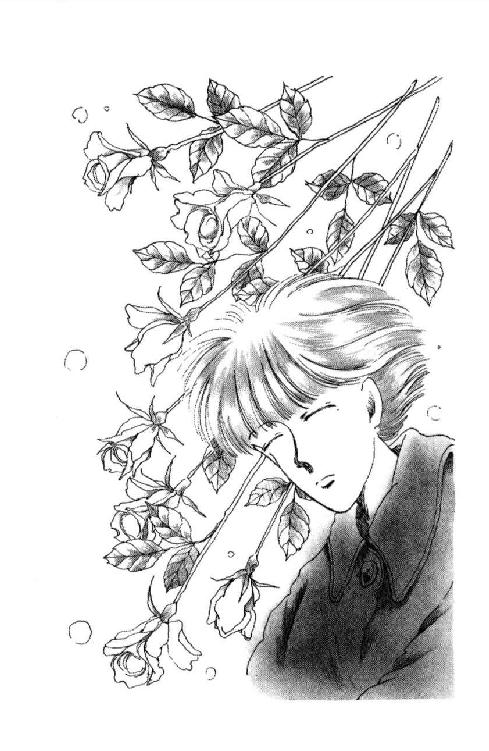

| 丘の家のミッキー６ | |
| 久美 沙織 | |
| (2015) | |
丘の家のミッキー６
望んだものは天使の巻
久美沙織
本作品の全部または一部を無断で複製、転載、配信、送信したり、ホームページ上に転載することを禁止します。また、本作品の内容を無断で改変、改ざん等を行うことも禁止します。
本作品購入時にご承諾いただいた規約により、有償・無償にかかわらず本作品を第三者に譲渡することはできません。
本作品を示すサムネイルなどのイメージ画像は、再ダウンロード時に予告なく変更される場合があります。
本作品は縦書きでレイアウトされています。
また、ご覧になるリーディングシステムにより、表示の差が認められることがあります。
イラスト／めるへんめーかー
１
「......そう。誰にもわからないわ。わたしの気持ちなんて」
自嘲的につぶやく笙子が、薄く開いた目の縁にひっかけるような視線でこっちを見たような気がして、絵里奈は、あわてて、とりつくろった笑顔を浮かべた。
「まぁ。何をおっしゃるの。おねえさまにはおともだちだってたくさんいらっしゃるじゃありませんの。ピエールさんだって、あんな優しいおかあさまだって......」
「笑わせないで!!」
とがった声に、隅でうずくまっていたラブラドル犬が、ふっ、と精悍な顔をあげた。
「わかった風な口をきいて。なにがおねえさまよ。あたしはあなたのこと、義妹だなんて、貴秀の妻だなんて認めていませんことよっ！」
笙子は、今度ははっきりと絵里奈を睨んだ。子供の頭ほどもあるバルーン・グラスをしきりに揺らしていたかと思うと、重たげな渦を巻いていた琥珀色の液体をひと息に飲み込み、軽く噎せた。笑ったのだった。
「うふふ、ふふ。だってそうじゃないの。あなたは、お人形よ。高価で貴重な、お人形。なに不自由なくお育ちになって、誰にでも可愛がられて、たいせつにされて、貴秀に見初められたら見初められたで、さっさとお嫁入りして来た......何ひとつ悩まずにね。これから先だって、何もないわ。心配なことなんて。むつかしいことはみんな、旦那さまや、大奥様が決めてくださるし、あなたの責任っていったら、せいぜい、丈夫な赤ちゃんを生むこと......赤ちゃんのままで赤ちゃんを生むのね。それでも平気よね。黙ってたって、まわりじゅうが寄ってたかってあなたを助けてくれるんだもの。幸せなひと......そんなあなたに、そんなあなたに、何がわかるっていうのよ!? わかるわけがないわ。わたしのこの張り裂けそうな孤独、死にかけた病人のごとき絶望感は......」
......ピ......キン......。
指から滑り落ちたダンスクの紅茶茶碗が、甲高い音をたてた。
割ってしまった。貴秀さんの、たいせつなお茶碗を......。
足下の中国緞通に広がっていく琥珀色の染みを見つめながら、絵里奈はぼんやりと、他人ごとのように、そう、考えていた。自分が、なぜ、その大事なカップを落としてしまうほど衝撃を受けたかに、この時、絵里奈はまだ、思い及ばなかったのであった......。
「......く朝礼が始まります。くりかえします。まもなく、朝礼が始まります」
いっけない！
ふう。
思わず夢中になってしまったわ。
香織さま、ううん、西さやかさまのご新作『絵里奈──嵐の中の愛』。たった十七歳の女の子が、いきなり、とびきりお金持ちのお宅に嫁いでくるところから始まるあたり、ちょっとついて行けない、って気がしないでもなかったんだけど。なんとも豪奢でハイ・ソサエティーな描写がどんどん出て来るし、会話という会話が緊張をはらんでて、どきどきしちゃうわ。一度、この世界にひたりきると、抜けるのに苦労してしまうほどよ。あたし、こういうのにとっても弱い。
とにかく、行かなきゃ。
読みかけの本をしまって、あたしは立ち上がった。
「全校生徒は校庭に集合してください。くりかえします。まもなく朝礼が始まります」
教室内をざっと見回したけど、いっしょに校庭に出てくれそうなひと、見当たらないな。
むりないか。まだ八時十分だもん。みんな来てないのよね。
月曜朝礼のある日は、下駄箱にかばんおいてそのまま校庭に出ちゃうひとが多い。ほんとは、ちゃんと一度教室に来なきゃいけないってことになってはいるんだけど。ほとんどのひとって普段から遅刻ぎりぎりでしょ。三階まで上がって下りて、なんてめんどうなこと、しないのよ。
だから、廊下もすっごくすいてるわ。とても、あと少しで朝礼の始まる時間とは思えない。
すれ違うのは知らないひとばかり。追い越して、追い越されて、聞こえてくるおしゃべりもあたしにはちっともわかんない話ばかりだ。
なんだか、今日、転校してきたばっかりの時みたいね。おはよう、って声かけあうひとも、黙って肩並べて歩いてくれるともだちもいないなんて......ああ、張り裂けそうなこの孤独......。
いけない。すぐその気になっちゃうんだから。
おバカの未来。しっかりしなさい。ちょっとの間ひとりだからって、なんなのよ。いつでも、誰かといっしょでなきゃ、廊下も歩けないような、そんな子じゃないじゃない。
だけど。
ああ。誰かいないかなぁ。知ってるひと。
今日はひとりになりたくない。早く誰かと話したいの。きっと、これは、きのうのうららとの喧嘩のせいで、眠れないままあれこれあれこれ考えてたせいね。
うららとの喧嘩。
さっきの本でも、いきなり、なんだか喧嘩みたいなシーン出てくるんだもんなぁ。思い出してしまったわ。あの、一方的に、主人公を『赤ちゃん』だ『お人形』だ、って決めつけるおねえさま、まるで、あたしのこと、バカだバカだって言ってるうららみたいなんだもん。
だからさ、だから大事なお茶碗だって落としちゃうのよ。そんなの、面と向かって真剣に言われたらショックに決まってるじゃない。いくらさ、傍目には何にも悩んでないように見えるあの主人公だって。何も考えてないってこと、ないと思うわ。
だから、あたしだってさ。
「あたしがほんとにそんなにおバカなんだったら、もうかまわないで、ほっといてくれたっていいじゃない!!」
みたいなこと、言っちゃったのよ。
本気じゃなかったわ。ううん、『ほっといてくれ』って言ったんじゃなくて、『あたしはそんなにバカバカ言われたくない』って言ったつもりだったのよ。だって、うらら、このごろ過激なんだもん。ちょっと油断すると、すーぐ『バーカ』。まるで意味なんてないのよ。癖になってるみたいに言うのよ。そんでもって、あたしが怒ると、やーい怒った、やっぱりバカだ、でしょ？
それで、みづゑさんのことだってさ。なんにも説明してくれなくて、結局、あたしがバカだ、って話になっちゃうあたり、とっても気にいらなかったんだ。
あたしも、ちょっと言い過ぎたかもしれないけど──。
それにしても、
「あ、そ。じゃ」
......って、去って行っちゃう、っていうのは、うららも、あんまりだと思う。
ひきとめる間もなくて、追いかけるタイミングもなくて、あたしはそのまま、ひとごみに消えてく背中、茫然として見てるしかなくて。そこで追いついて、ごめん！ って言ったら、きっと、すぐ仲直りできたと思うけどさ。そんなことしたら、どうせ、また、うらら、マンガみたいなとぼけた顔して、
「おーやまー、ずいぶんせっぱつまっちゃって。少しゃーバカにつけるクスリになったぁ？」
なんて言うに決まってるじゃないのよっっ!!
あたしにだって、意地はあるんだからっ！
そう、いつもいつも、おバカと呼ばれてへらへら笑ってるわけにいかないわ！
......でも......。
あーあ。やだ。昨日、家に帰ってすぐ、電話かけちゃえば良かったなぁ。西在家さん家に。みんなきっと、あれからしばらくおじゃましてただろうから、いっしょに騒ぎにいって、バートさんの撮ってきたビデオとか見たかったなぁ......。たとえ、みづゑさんが来てたとしたって、さりげなく無視してればいいんだもん、きっと、楽しめたはずなんだ。なのに。
ぶー。楽しい時をひとつ、奪われちゃった。
だけど、このこと、くやしいっ!! って、思っちゃうと、きっと、もっとどんどん事態がややこしくなるんだわ。うん。そうだわ。楽しい時を台無しにしちゃったのは、あたしだけじゃなかったかもしれない。うららだって、きっと、あのままじゃ、気分悪かったと思うもの。
喧嘩したのは、うららだけのせいじゃないんだし。なんかのはずみで、うららが悪いから、みたいに言っちゃわないよう気をつけよう。
ふふーんだ。そうよ。あたしだって、そう見くびられたもんじゃないんだ。落ち着いてさえいれば、ちゃんと判断できるんだからねーだ。
......あああ。
早く仲直りしたいなぁ。うらら、今日ぐらいは、遅刻しないでくれるといいんだけど。
てすりをなぞりながら、ぽそぽそ階段を下りて、踊り場で百八十度からだをまわした時に。
お腹のあたりがひとつ、どきん、と打ったの。
うららだ!!
ぺたんこのかばん肩にしょいあげて、こっちに来る。小西さんと、加田さんと、あと知らないひとたち何人かに囲まれてわいわい騒ぎながら、駆け上がって来る。あと、階段半分。あと、三分の一......四分の一......。
「うらら、おは......」
言いかけて、言い切れなかった。
笑いかけた顔、そのまま強張ってしまう。
一瞬、あたしの上を確かにかすめたはずのうららの目、そのまま、すっ、と逸れて、通り過ぎてっちゃう。あわてて見上げる背中が、きっぱり知らんぷりしてるわ。まわりにいたひとたちのほうが、あれ？ っていうみたいに、あたしとうららのこと見てるくらいだから、気づかなかったはず、ないのに......。
......なっ、何よ、その態度!?
あくまで喧嘩続行する気なの？
あ。や、やだ、お腹のとこ、たよりなくなってきちゃった。指がしびれる。鳥肌がたつ。
すごい。人間のこころって。気持ちが動くと、からだ、こんなに影響されちゃうようにできてるんだ。ああ、うららが行っちゃう。うららがあたしを無視したってことって、あたしにとって、そんなにショックなんだ......。
わぁん、分析してる場合じゃない！ 早く、早くしなきゃ、行ってしまう！
「逃げないでよっ!! ひとが話しようとしてるのよ!!」
うららは、それでも行っちゃおうとしたんだけど、あたしのこと振り返って怪訝そうな顔してるひとたちが邪魔になって、動けない。
「こっち向きなさいよっ！ 何で黙ってるのよ？ 口きいたら、口ききかえしてくれなきゃ、仲直りできないじゃないのよっ!!」
あああ。バカだ、あたし。こんな言い方しちゃったら、ひっこみがつかないじゃないの。なんで、ごめんね、って、言わなかったの？ あたしが悪かったから、許して、ってしおらしく言えばいいのに、なんだって怒鳴ったりしちゃうの？
「何よ！ うららの卑怯もの！ 無視なんて、無視だなんて、子供の喧嘩みたいな真似するんじゃないわよっ!! おバカっ!!」
うそー！ なんであたし、なんであたし、階段走り下りちゃってるのぉ!?
でも。
「ミッキー!!」
「ミッキー、ちょっと待ちなよぉ!!」
どどどどど、って、頼もしくも逞しい音をたてて、何人かが下りてきてくれる気配がしたの。そこで、さっさと止まればいいのに、一度ついちゃった勢いって殺せないんだよね。あたしったら、ふくれっ面のまま、まだ、何段か駆け抜けちゃったりして。
「どーしたんだ、いったい!?」
素早く前に回りこんで、がしっ、ってあたしの肩つかんで、のぞきこんでくれたのは、小西さん。
「............」
ああ、もう。早く素直になりたいのに。あたしまだ、むっつり首振るのがせいいっぱいで。
「ほら、ちょっと来な」
うららのいるほうに、ひっぱりあげてくれる小西さんの力、嬉しいのに。
「朝礼に、遅れるから」
なんて、あたし、拗ねてる。
「んーなもん、いいから。ほら」
それで、ようやく、しぶしぶ（......）従おうとした時に。
「小西」
昨日から一番聞きたかった声、無表情に響いた。
振りあおぐと、階段の途中にどっかり座りこんで、うららが、笑ってる。
ああ。笑ってる、って、ほっとして、あたしも思わず顔の筋肉が緩みそうになったのに。
「ほっときな。甘やかすんじゃない」
笑ってるけど、笑ってない。うららの目が、笑ってない。
「だって」
と、小西さん。
「ミッキー」
静かに言いながら、うららは、ついに！ まっすぐにあたしを見下ろした。
「さっきのありゃー、なんなのよ？ あれじゃ、仲直りっつーより、改めて喧嘩売ってるようなもんでしょーが。思わず笑っちまった。やっぱりあんたには負けると思ったけど......でもね。今回は、意地張っとくことにする。もし、あたしが、あんたのこと、それほど好きじゃなかったら、ありゃー、相当にうっとうしいからね」
「うっとうしいって、どういうこと？」
頭がすうーっと冷えて、あたしは、拗ねるのもいじけるのも忘れて、うららを見た。目に落ちてくる前髪を、何度も何度もかきあげるうららの手に、催眠術をかけられたみたいだった。
「そいつは、ぜひ、自分でわかってもらいたいね」
立ち上がって、ぱんぱん、って靴下の埃をはらって。
「行きな。朝礼だろ」
「うららは!!」
「出ねぇよ。あたしゃ、傷ついてんだから。んーなもんにつきあってらんねぇ。じゃな」
「待って！ 待って!!」
ふらっ、とあげてたうららの手が、今日は止まってくれた。
びくびくしながら、あたし、言ってみた。
「まだだめなの？ まだ喧嘩、続いてるの？」
「どうやらな」
ああ。
「いつまで？ いつになったら、元に戻れるの？」
「さぁ」
ふりかえったうららの目が、そっと伏せられた。
「わからん」
そして......そして。
うららと小西さんたちは、あとは何も言わずに、ゆっくりと登って行ってしまった。この騒ぎで通れなかったひとたちが、あたしをちらちら見ながらあわてて下りて行った。
微熱でもあるみたいに、目の周りがぼうっと熱かった。
あんなに怒鳴ったことが噓みたいに落ち着いていたけれど、さっきまで気がつかなかった薄い膜のようなものが胸いっぱいを覆っていて、それは、もう、簡単に破れてくれそうにないのよ。
うららも、怒ってるんじゃない。できることなら、こんなこと早く終わりにしたいって思っている。
だけど、まだ、だめだって。
傷ついてる、って......？
傷つけたのはあたし。苦しめてるのもあたしだ。あたしは、うららのことほんとに好きなのに、ほんとに好きなはずのひとにさえいやな思いさせてる。うららはうららで、『もし、好きじゃなかったら』って言ってた。喧嘩してても、うららも、あたしのこと、やっぱり好きでいてくれてる。
好き同士なのに、どっちも、早く仲直りしたいって思ってるはずなのに、できない。
なんでだめなのよぉ!?
どうすればいいんだろう。
ひと気のなくなった階段にうずくまると、乾いた埃の匂いがした。校庭から、みんなを整列させてる声が聞こえてくる。キヲツケ、マエーナラエ!! 焦れたみたいに何度も怒鳴って。あたしの気持ちも同じね。なかなかきっぱり整理できない。
うらら、ごめんね。ごめんね。
あたしきっと、自分でわかってる以上に性格悪いんだね。
短気で強情で世間知らずで子供でわがままで生意気で恩知らずで何も考えてなくて勇気がなくて口やかましくてお調子もんでうぬぼれやで覇気がなくて向上心もなくて素直じゃなくて、おバカで......エトセトラ、エトセトラ、それだけじゃなくて、ほんとのほんとに、大馬鹿ものだ。いいとこなんてあるんだろうか。うららが、あたしのこと好きって思ってくれるような、いいところなんて。
なんだか、あの膜の名前がわかっちゃったような気がする。
絶望、とか言うんじゃないかしら。『死にかけた病人のごとき』あれ。
あああ。十五歳にして絶望だなんて、それこそ大馬鹿だわ。世の中もっともっと、苦しんでるひとだっているのに。あたしなんかがそんなこと言うなんて。
だけど。
ぷすん......もう、わかんない。どうしていいか、わかんない。
なんか、どうしようもなくひとりぼっちだ。誰かにそばにいてほしい。
でも......ひとりぼっちだ。
あたし、勉強嫌いな子じゃなくて、良かったと思う。
どうしていいかわかんなくて、何していいかわかんなくなっちゃった時って、とりあえず勉強しちゃえばいいんだもん。むだな時間を過ごしてる、って自責の念からは、とにかく救われるわけだから。今の、中学生、っていう身分にも、ありがたいなぁ、なんて思っちゃうんだから、おめでたいわね。
がむしゃらに問題集をやっつけて、さすがに肩というか腕というか、ぼうっと重たくなって来て時計を見たら、もう、九時半だった。ごはん食べてからずっと籠ってたから、二時間以上やってたらしい。
すごーい。すごい集中力。このへんでお茶飲んでも、罰はあたらないよね。
お茶の間に下りて行くと、パパとママがおそろいのパジャマでテレビのニュース番組を見てるとこだった。
「お風呂は」
すぐに、ママがあたしを見た。
「うん。はいる。でも、お茶一杯飲みたいなと思って」
「じゃ、いれたげましょ。お紅茶？ 日本茶？」
「お煎茶がいい」
「はいはい」
気軽にキッチンに立ってくママと入れ換わりに、落っこちるようにソファに座って、うーん、って伸びをして、ちょっと凝っちゃった感じの腕とか、もごもごほぐしてたら、
「まじめに勉強するのはいいが、からだには気をつけなさいよ」
って、パパが言うんだ。
パパの向こうで、テレビが今日のスポーツをやってて、キッチンでは、ママが水道を出してる音がしてて。
なんだか、そういうことがみんな、それこそテレビのお茶の間ドラマみたいだなぁ、なんて思えちゃって、あたしはちょっぴり笑っちゃったんだ。
「なんだ？」
「だって。パパったら。まるで、典型的なやさしいパパみたいなこと、おっしゃるんだもん」
「し、しかたなかろうが！ パパはパパだし、典型的な日本の男なんだし、それに、もちろん、やさしい。もちろん」
「うん」
照れるようなこと、ご自分で言わなきゃいいのに。
「それからな、風呂だが、うちは三人しかいないんだから、なるべく一斉に入ったほうがよくないか？」
「......？」
「うむ。実はな。わしが入って、ママがあがった時にな、わしは未来を呼んだらどうだ、って言ったんだ。だが、ママは、せっかく一生けんめい勉強してるんだから邪魔しないほうが、って言うんだ。それは、そうかもしれん。だが、これからだんだん寒くなる。寒くなれば冷めやすくなる。沸かし直せばガス代がかかる。省エネルギーの見地から言ってもだ、わしは、受験生だからと言って、風呂どうだ、のひとつも言えんような空気があったりするのは好ましくない」
さりげなくくわえた煙草がお口で滑って、かちかち鳴らすライターの火に、なかなか届かなかった。
あたしが、普段よりちょっと根をつめて二階に籠ってるだけで、パパもママも、何か異様なものを感じちゃったらしい。
でも。でもね。パパもママも、あたしが今日、自棄っぱちみたいに勉強しちゃったことのほんとの理由は知らないんだよね。
「......わかった。気をつける」
「うむ。もちろん、わしだって、遅くなることはあるんだし。おまえも、おまえなりにキリのいいところで下りて来てくれればいいわけだから、そこのところは、誤解ないよう」
「ねぇ、パパ」
お話が終わらないうちに言ってしまったから、パパ、えっ？ っていうように、あたしを見た。
「人間って、ほんとに、孤独なものなんだね」
言いながら、自分で、ああ、ほんとにそうだな、って思った。あたしがずっと考えてたのは......問題集に逃避して、なるべく考えないようにしてたのは、そのことだったんだ、って。
「どんなに大好きでも、愛されてても、やっぱりみんな、ひとりなんだね」
「み、み、未来......」
パパの手が、ぶるぶる震えだした。
「悪かった。ガス代ぐらい、どうでもいいんだ。パパはただな、ただ、パパが声をかけたい時かけられないのはやだ、っていう、そういう気持ちで、やいやいや、それもどうでもいい！ そうだよなぁ、風呂ぐらい、好きな時入りたいよなぁ。うるさいパパだなぁ」
「......？」
「だが、あのな、未来、あのな、頼むから、ノイローゼになるほど勉強なんかしないでくれ。女の子なんだし、おまえはかわいいいい子なんだから、それで充分なんだから。辛いなぁ、と思う時は、いつでもサボッていいんだぞ。あ、そうだ。おまえが入りたい時に、パパとママが合わせて風呂に入ればいいんだ。そうだ。だから」
パパの、喉仏がごくり、と動いて、しゃがれ声を押し出した。
「頼むから、いきなり死んだりしないでくれよ......！」
「パパ」
あたしは、大きくため息をついた。
「あたし、ノイローゼなんかじゃないわ」
「......だって、おまえったら、『人間って、やっぱり、孤独なのね』なんて、やけに遠い目なんかして!!」
「あたりまえのことを、ちょっと言ってみただけじゃない。そんな、オーバーに受け止めないで」
「あははは、あは、そうか。すまん」
パパは、結局全然火がつかなかった煙草を、乱暴に灰皿におし潰した。
「いや、焦ってしまった。何しろ、いきなり頭ん中に朝刊の見出しが、どーん、と出てしまってな。『中三少女、またも早すぎる決意』ってな、『前夜父親と、風呂の時間のことで口論したことが原因か』なんて......ははははは」
「まさか。考えすぎ!!」
「はははは。そうか。いや、もしな、悩んでることがあるんなら、パパはいつでも、聞いてやるぞ？」
『パパはいつでも』のとこまでは笑い顔だったのに、最後のひとことで、パパはやけに真面目なお顔をした。
「うん。でも、別に、あたし」
「いや、パパは知ってるぞ」
......ぎく？
「実はな。ママから聞いたんだが」
うそ。何を？
その時。
「はーい、はい、おまたせ。お茶が入りましたよぉ」
湯気をたててるお茶碗三つ、お盆に乗せて、ママが出てきた。
「 きょーおの お菓子は 瓢亭ちゃんー。梅の甘煮、紀ノ国屋さんでみつけちゃった。おいしーいのよぉ♡」
きょーおの お菓子は 瓢亭ちゃんー。梅の甘煮、紀ノ国屋さんでみつけちゃった。おいしーいのよぉ♡」
梅酒にするような青梅のおっきいのに楊枝を刺して、シロップみたいなとろっとしたのをかけたのが、小鉢の底にちんまり、飾ってある。
「きれーい」
「でしょう？ うふふふ。でもね、ひと壜、五つ入って千円もするの。これ一個、二百円よ。
チョーヤの梅酒に入ってるのと、あんまりかわんないみたいに見えるのにねー。でも、繰り返すけど、京都の瓢亭の、ですからね。心して味わってちょうだいね。はい、あなた。はい、未来。はい、これ、ママのぶん。ランラン」
一瞬の、沈黙の後。
「......おまえね」
と、パパ。
「はい？」
「おまえは、わしが、よーやっと作った切っ掛けを、しっかりぶち壊してくれたぞ」
「あら？ そうですの？」
ママは目をぱちぱちさせた。
「すみません」
「あー、もういい」
パパは無造作にお茶碗をつかもうとして、あち、あち、って騒いだ。
「よくないわ!!」
と、あたし。
「何なの、パパ？ ママに聞いた話って？」
「あ、あれのこと？」
と、ママ。
「だから、何なの？」
ママは、あたしの視線をそのままパパにパスした。
貴重な青梅を口に含んで、思わずにっこりしてたパパは、ふたりぶんの視線の圧力に気がつくや、ぎょっ、として......案の定、それを、そのまま飲み込んでしまった。巨大な塊が喉にひっかかってるのが、外から見てもはっきりわかった。
例によってひとしきり苦しんだあと、パパはようやく、あたしに向き直った。前よりいっそう暗いお顔で。出てきた声も、重厚この上なかった。
「志望校の受験日が重なったそうじゃないか」
......あ。そうだったのか。
そういえば、そういうのもあった。森戸南女学館とフェリシア、どっちを受けることにするか、決めなきゃいけなかったんだ。
「どうするつもりなんだ？」
「どうするって......」
ふう。
忘れてた。それどころじゃなかったんだもん。
だけど。考えてみて。もしも、もしも、うららとこのまま、どっちも望んでないのに仲直りできなかったとしたら......？
うららもあたしも、ずっといやな思いをするんだ。
今日一日、同じクラスにいたのに、あたしたち、お互いに、お互いがいないようなふりしてた。そうあたしも。もう、うららに話しかけることはもちろん、うららのほうを見ることさえ、できなくなっちゃって。
無視、っていうんじゃないの。そんな、単純なもんじゃない。
ほんとは、駆け寄って抱きつきたいくらいの気持ちなのに、なんだか、見ちゃいけないような気がして。まるで、うららがあたしの傷であり、あたしがうららの傷であるみたいに、お互い、触らないよう、思い出さないよう、わざと、遠ざけてたみたいな気がする。
みんなにだって、それがわかんないわけない。だから、クラス全体が、まるでお通夜みたいな雰囲気になっちゃって、誰かが盛り上げようとして可笑しいこと言って、みんながあわてて笑うのさえ、逆に、寂しさや違和感を強くするばかりで。みんなには関係ないのに......きっと、みんな、わけわかんないのに、迷惑かけちゃってる。
あたしが、いなくなればいいんじゃないかしら。
だって、うららはもともと、ここの子だったんだし。みんなと仲よくしてたんだし。
あたしさえいなければ。あたしさえいなくなれば。うららとみんなは、あたしがいなかった時みたいに、また、楽しく陽気にやれるんだもの。
そうだわ。出て行けばいいんだわ。あたしは、もともと華雅の子なんだもの。華雅に戻ればいいんだもの。
あと半年したらいなくなる、ってわかったら、うららも、あたしのこと許してくれるかもしれない。最後だから、って、仲直りしてくれるかもしれない。
そうだわ。そうすればいいんだ。
あたしは、顔をあげた。
「フェリシアを受けようと思います。フェリシアと華雅を受けて、華雅に受かったら、華雅に行きます」
ぺこん、って首を曲げたのは、パパママよろしく、ってお辞儀したつもりだったけれど、なんだか力が入らなくて、うなだれたみたいになってしまった。
「そうか。決まってるのなら、いいんだ」
と、パパ。
「でも、未来、うららちゃんは、森戸南女学館に残るんでしょう？」
と、ママ。
「離れちゃって、いいの？」
「だってママ、あたし今でもトコと仲よくしてるじゃない」
笑おうとしたけど、なんだか、口が変に曲がっちゃって、困った。
「高校違っちゃったって、ほら、ヨットもあるし。学校が変わったくらいで離れてくともだちだったら、いつか、離れてっちゃうよ。そうでしょ？ やっぱり、大学のこととか考えたら、華雅に行っておいたほうがいいもん。あたし、もうずいぶん怠けちゃってたから。少し、がんばらないと。......じゃ、あたし、勉強するから」
立ち上がると、
「おい、風呂は......」
言いかけて、パパはあわてて、自分のお口、手で隠した。
「ちゃんとはいる。心配しないで」
パパは、あ、そうかそうか、ってホッとしたみたいに笑った。
じゃあね、ってあたしも笑ったけど、後ろ手に閉めたお茶の間のドアにそのまま寄っかかって、溜めていた息を吐いてみたら、重かった。
なんで、涙なんて出るんだろう？
なんで、こんなにせつないの？
「あの子も、知らんうちにおとなになっているんだよなぁ」
ドアの向こうで、パパの声がした。
あたしがいるの、知らないんだ。
「『孤独だ』なんて言い出すから、どきっとしたよ」
「だめですよ、追及しちゃ」
「むう。おまえ、聞こえてたのか」
「ええ。でも......ほんとに、どうしたのかしらね。何かあったんじゃないでしょうか？」
「何かって？」
「よくわかりませんけど。昨日からおかしいわ、あの子。元気なふりしているけど」
「なっ、なっ、何かって、まさか!?」
「いやですよ。違いますよ。あなたはすぐ、そんな。まだ早いでしょ」
「早い。絶対に、早い。冗談じゃない。そんなことになったら、わしは、相手の首を捩じ切ってやる!!」
相手......？
やだ。パパったら、すぐ、そういうこと（註１）想像なさるんだから。
「そんなにカッカなさらないで」
「いやだなぁ、いやだよ、わしは。勘弁してくれよ。どうしてだ？ あの子にも、親に言えないようなことができるのかね？ あんなにいい子なのに？」
「いい子だって、おとなになりますよ。いつかは、ね」
「とほほ」
そおっと、そおっと、足音を立てないようにお風呂場行って、湯かげんを見た。そうぬるくないから、着替えを持ってきてからお湯たせばいい。
パパの勘繰りは、誤解だけど、完全に誤解だとは言い切れないような気がした。
もしも、うららが男の子だったら。こういうの、きっと、失恋っていうんじゃないかしら。
そうよ。みづゑさんと、あたしと、うららの三角関係で。あたしは、みんなが男の子のこと好きなぐらいには、うららのこと好きだと思うし。
そうか。
あたし、ふられたんだ。
うららとのこと話したら、パパはうららの首、捩じ切る！ って言うんだろうか。
そう考えてみたら、ちょっとだけ、笑うことができたみたいだった。
「フェリシアにします」
ひとことだけ言って口を結ぶと、ツル先生はあーあ、って痛そうな声をあげて、目を覆った。
「本気か」
「はい」
「はぁー......まぁなー、その......あー、つまり、華雅は受けると？」
「はい」
先生はお口の中でぶつぶつと、なにやら罰当たりなことをつぶやきながら、書類をめくって、何かを書き取った。あたしはそっと、頭を下げた。
「では、失礼します」
「待て」
あたしはそのまま待ってた。ツル先生は、書きものを終えて、黒い表紙をぱたんと閉じてしまってから、ようやく体を起こした。鉛筆の先で、奥歯をせせってる。
「ちっ......つーことになるとだな、教頭だの校長だのがなんだかんだ言ってくるかもしれん。期待の星が反逆に出たんだからな、へたぁすると、奨学金を出そうだのなんだの、せせこましく泣きつくかもしれん。だがな、おまえも女だ。いったんケツまくったからにゃ、裏切りはなしだぜ。こうと決めたからにゃ、後にひいてもらっちゃ困る。でないとこの俺が、できる説得をしなかった、てんで、かよわいクビをチョーン、んてことにならんとも限らん。そーでなくとも、俺のナイーヴな性格は上司にウケが悪いんだ」
がりがりひっかく頭が、ますますからまって、もじゃもじゃになった。
「......はぁ」
「わかるな？ 大きな声じゃ言えねえが、家に帰りゃ、かわいい女房とガキが待ってるこの身だ。クビが気の毒だと思うなら、決めた通りにしっかり受験して、がっちり受かってこい。いずれ、やっぱりやーめた、って舌を出すつもりなら、今にしてもらいたい。念を押しとくが、つまり、ここにゃいられねえんだぜ。それで、いーんだな!?」
............
「......いいんだな、浅葉？」
ぽしょぽしょ顎に髭の伸びた先生の顔。
この、先生に逢えるのも、あと半年だけなんだ。
それで、いいんだ。そう決めたんだから。
あたしは顎をひいて、うなずいた。
「はい」
「そんなら、いい」
先生は、ごしごし顔をこすりながら、机に向き直ってしまった。
眠そうな顔のまま、たくさん書き込みのある教科書を出して鉛筆を握ったところで、急にずーずー音をたてて鼻をすすりだしたかと思うと、ポケットから、いつ洗濯したのかわかんないようなハンカチをひっぱりだし、二つにたたんで、鼻をかもうとして......あたしの目に気がついた。
「あんだ。ぼういいぞ。行け」
「せんせい」
びぃーむ！
返事するみたいに高らかに響いた音に、遠くに座っていた女の先生まで顔をしかめた。
ツル先生、気づいていないはずないわ。あたしとうららのこと。ひょっとしたら、あたしがここを受けないことに決めたのも、そのことと関係あるって、わかってるのかもしれない。だけど、何もおっしゃらないんですね。
聞いてみたかったけど、やっぱりやめておく。
うららがどこを受けるつもりなのか。ここしか受けないだろうと思うけど、ほんとにそうなのかどうか。
聞いたとしても、教えてくれないだろう。うららのお義兄さんだからじゃなくて、担任として、教える必要がないって思ったら、教えてくれないだろう。
そういうひとだ。
あたしは、改めてお辞儀をした。
「......いろいろ、ありがとうございました。あと少しですけど、よろしくおねがいします」
「おまえ、生理か？」
ふん、ふん、と鼻の通りを確かめながら、先生はおっしゃった。
「ち、違いますよっ!!」
「じゃ、もうじきじゃねえか？ 気をつけろよ。秋だからってな、わけもなく感情を高ぶらせたって、美しくもなんともねぇ。ホルモンのバランスが崩れりゃ、だれだってセンチになる。喜怒哀楽なんつーもなぁ、脳を走ってる血管の中に特定の化学物質を増やすことでも、充分引き起こせるんだぜ」
「............」
確かに、もうじきなはずだけど......そんなこと、わかるとしても黙っててほしい!!
「ちなみにな、生理で頭痛がしたら、あまーい缶ジュースでもじゃんじゃん飲むといいぞ。脳内の血糖値が下がってんだからな。上げてやるわけだ。これなら、クスリと違って眠くならんし。それからな、夜中になっても眠れなくって悶々とする時ぁ、乗り物酔いの薬がいい。胃をやられないし、そうクセにもならん。おまえの体格なら、こども用半分で効くはずだ。一個飲んだら寝過ごして遅刻しないとも限らんからな、気をつけろ」
さすがに、何浪だか知らないけど、医学生になりたかっただけのひとのことはある。よく研究してるみたい。
「よくわかりました。参考にします」
今度こそ立ち去ろうとしたのに。
「浅葉よ。人間にはな、リズムってもんがある」
端がぎざぎざになった鉛筆を指先でもてあそんでる先生の顔が、不意に、四ッ谷にいた頃大好きだった外国人の神父さまに見えて、あたしはあわてて瞬きをした。だけど、先生は先生で、聞こえてくる声は、やっぱりいつもの先生のダミ声だった。
「男にだってあるが、女のほうが露骨だ。てめえら思春期の女っつーのは、自分でその、自分のリズムってもんを、わかってねえから始末におえねぇ。リズムにふりまわされて、自分にふりまわされてる。変わらねえものは、その底にあって、なかなか見えない」
「どうすれば、見えるんですか？」
「パンツを覗こうと思ったら、スカートまくるだろ」
......まったく、もう！ 似てるなんて思って、神父さまに申しわけなかった。
「失礼します!!」
廊下に出るまで、背中にツル先生のにやにや笑いが張りついてるような気がした。
「どっちもどっちよ。強情なんだから」
って、杉丸は何度もくやしがった。
原因はなんなのか、いったいどうするつもりなのか。親身になって心配してくれてることはよくわかってたけど、あたしにはどう答えることもできないじゃない？ うららの方も、肝心なことは何にも言わないみたいだった。
「だいたい変よ。うららはうららで、あんたがあんまり落ち込んでるようだったらよく話を聞いてやってね、なんて言うし。あんたはあんたで『杉丸はもともとうららが好きなんだから、無理しないで』なんて......こんな喧嘩がある？」
杉丸だけじゃない。
浜田さんも八木沢さんも奥田さんも小西さんも美土里さんも、小熊さんまでわざわざよそのクラスから訪ねて来てくれて、なんだかんだ力になってくれようとした。けれど、みんな、そういつまでもひとのことで悩んでくれるほど暇じゃないんだし。当のあたしたちも派手にぶつかってたわけじゃないから。
いつの間にか、静かになった。
三のＣの人たちは、いつもと変わらない顔で、授業を受け、休み時間を過ごし、お弁当を食べるようになっていた。うららとあたしは相変わらず口をきかなかったけど、それだけだった。みんな、そんなこと、もう気にしてなかった。少なくとも、そう見えた。
そして、日曜日が一番辛かった。
「なー、イエモト。おたくの妹、このごろちょっちひどいんでない？」
びっくりして、顔をあげると、一穂さんは濡れたトサカ頭にタオルを乗せて、クシュン、と大きなくしゃみをしたところだった。
「どうして？」
朱海さんのポーカー・フェイスが、焚き火に映えて、赤く揺れた。
レースの後、あたしたちは渚の端に、いつも焚き火をするようになってたの。新聞紙で火種をおこして、西在家さん家から持って来た文化薪とかいうものを燃やしてる。岸辺に落ちてる乾いた枝とか、庭の枯れ葉なんかも燃やしちゃうから、ちょうどいいお掃除にもなるの。
焚き火なんて、自分家でしたことなかったけど、とってもいいものだと思う。
コンロの火やストーブの火とは違うんだ。目の前で踊ってるのは、ほんものの炎。飼い馴らされた動物じゃなくて、野生の動物みたいなもの。
原始人だった時の記憶が、あたしのからだの細胞の中にもきっとあるんじゃないかしら。暖かいだけじゃなくて、なんだかホッとする。この火を見てると、落ち着くの。
次期家元の朱海さんは、お家柄、火を焚くのはほんとにお上手みたい。湿った枝や、うまく燃えない木も、ゆっくり燻してきれいに燃やしてしまう。火の粉も、灰もあんまり散らさないし、もくもくさせちゃって煙いなんてこと、ほとんどない。
その、もくもくが、今日はどういうわけか、ちょっとひどくて、それも、何度座りかえても一穂さんのほうにばっかり行くんだ。
煙そうに目をしかめて風上に移りながら、一穂さんは、なんでまた俺ばっかり、ってぶつぶつ言った。
「煙ってもんは、いい女いい男のほうに行くって言うじゃないか。ありがたいと思って、よく浴びといたほうがいいんじゃないか」
「ばか言えよ。げほっ......ああ。そだ。話の途中だった。なんで、って言ったな？」
一穂さんは、すぐ隣になった朱海さんの肩を、どん、と突いた。
「とぼけやがって、この！ だってよぉ、あいつ、このごろおまえか尚志としか乗らないじゃん。そりゃー確かに俺はよくチンするよ。こう寒くなっちまっちゃーうまいやつと乗るほうがいいかもしんないけどさー。前は俺とも、未来ちゃんとも乗ってたのにさぁ、実力主義っちゃー聞こえはいいが、こりや、差別だぜ、一種の。おりゃー傷つくんだから......キション!!」
ときどき爆ぜる赤い炎に手を翳しながら、あたしはそっと、朱海さんを見たの。
「そりゃ、しようがないよ。ぼくはともかく、あいつ、尚志の腕に惚れたんじゃないの？ なにしろ、いっしょに戦って、まぁまぁの成績をあげた仲なんだから。あのふたりがずっとチーム組んでがんばりたい、っていうなら、それはそれでいいと、思」
「お。そーゆーこと言うわけ？ だぁってさ、うららが尚志とチーム組むんならさ、未来ちゃんは......」
一穂さんは、あっ！ って目を丸くした。
「ひでぇ。そりゃ、ひでぇって。俺、どうすりゃいいのよ？ 俺、ひとり余りんぼーじゃねえの？ もちろん、俺だっておまえの、その、ナニを、邪魔したかないけど、ヨット乗りたいし......ああ、まいるなぁ!!」
「ばか」
細い枝を一本、ぽん、と火の中に投げ込みながら、朱海さんは笑った。
「大丈夫だよ。変に気を回すなって」
「だって......じゃ、言うけどさ、ほんとはさ、もしかすっと......」
言いかけて、一穂さんが黙った。
ずっと、静かに流れてた音楽が、急にアップ・テンポのにぎやかな曲になった。
そうなの。いつのころからか、ヨットを待ってる時の退屈しのぎに、一穂さんが持って来てたんだ。水に落としても平気なラジオ・カセット。
音楽に気をとられてるふりしてたけど、あたし、ちゃんと見たわ。黙れ、って顔した朱海さん。不機嫌そうな顔になって、オーバーに唇結んでゴリラみたいな顔してみせた一穂さん。
あたしがいるから？ あたしに聞かせたくないから、黙ってもらったの？
変だと思ってた。この件に関して、朱海さんが、どうして何も言わないのか、何も聞かないのか、おかしいなぁ、って思ってたわ。
気づいてないはずはない。朱海さんみたいな、鋭いひと。今日も何度か、なんとも言いようのない目で、遠くから見てたね。うららと、あたしのこと。
こないだ朱海さんとふたりで沖に出た時、相談してみようかな、って思った。だけど、言えなかった。朱海さん、わざと黙ってるみたいなんだもん。あたし、絶対、元気なかった。とびきり落ち込んでたわ。なのに、朱海さん、知らんぷりしてた。
いつもだったら、あたしが、落ち込んでるところ必死に隠してたって、
「どうしたの？」
って、追及されちゃうのに。少なくとも、沖に出て、ゆったりセイリングしだしたら、家のこととか、学校のこととか、ヨットに関係ない話だっていっぱいするのに。朱海さんだって、けしておしゃべりなひとじゃないけど、でも、時々すごくおかしい話とかしてくれるのに。はじめてよ。あたしも朱海さんも、操艇するための必要最低限のことば以外言わなかったのなんて。
やっぱり。やっぱり、知ってたのね。うららが、話したんだ。小西さんを止めたみたいに、『甘やかさないで』って、釘さしたのかもしれない。
うららとあたしが喧嘩しちゃった以上、朱海さんがうららの味方につくのは当然だ。
ああ、また『味方』だなんて、うららの嫌いな考えかたしてる。あたし。
考えると、怖い。うららだけじゃなくて、朱海さんまで、なくしちゃうのかな、あたし。
あのやさしいうららと仲違いしちゃうなんて、やっぱりあの子は性格悪かったんだ、って思われちゃったね、きっと。ついこの間、麗美さんとのお写真問題で怒らせちゃったばっかりだし......あの事件のほとぼりだって、まだ冷めてないのに。
あの時、朱海さんの怒った顔、あんなに怖いって思ったのに、もとどおりやさしいひとに戻ってくれてあんなに嬉しかったのに......。
なんにも実になってない。同じおバカ、くりかえしてるね。
みんなみんな、自分のせいだ。
朱海さんを見るのが怖くって、海のほうを向いたのに。夕日が眩しすぎて『ミッキー』が見つからない。
なんだか、もうずっと前からただ黙ってこうして、焚き火だけしてるみたいな気がする。
耳の上から時々ぽたぽた落ちてた髪の雫も、もう止まっちゃった。うららたちが帰ってきたら、今日はもう、おしまいだな。
燃えて灰になってく枯れ枝の匂いがする。秋の匂いね。
きっと、もうすぐ冬が始まる。もうじき『ミッキー』とも、長いお別れになる。残された時間はそう多くないのに、あたしはこんなとこで膝を抱えてる。
もう二度と、うららとふたりで『ミッキー』に乗れないのかな。そしてそのまま、別の学校へ、別のともだちのところへ、別れて行っちゃうことになるのかな。
「未来ちゃん......？ あれ？ 未来ちゃん」
「寝ちゃったんか？」
「ああ。風邪ひかなきゃいいけど......上に連れてったほうがいいかな？」
「今動かしたら、目、さましちまうべ」
「そうだね。少し、ほっとこうか。うたた寝って、気持ちいいもんな」
眠ってなんかいない。でも、そのまま、抱えた膝におでこあてたままじっとしてたら、背中にふわん、と何かかかった。
薄目を開けて見たら、真っ赤なのが見えた。手触りは、革とフェルトっぽい布。朱海さんのスタジャンだ。袖と襟のとこだけ赤くて、あとはグレイの。ちょっと重たい。朱海さんの匂いがする。そして、すごく、あったかい。
小さい頃かくれんぼして潜ったパパの洋服簞笥のこと、思い出した。
このまま、小さな子供になってしまえたら......！
「なー、イエモトー。あのさー、言ってもいいかー？」
「なんだよ。大声だすなよ。起きちゃうから」
「わかってってばぁ。あのさ、その、未来ちゃんのことなんだ」
「............」
「なぁ、なーんか、彼女さ、暗くなかった？」
ふうっ、って、ため息をつく音がした。
「そうだね」
「どーしたんだ？ ひょっとして、うららと何かあったのか？」
ああ。
やっぱり、わかっちゃうんだ。一穂さんにまで。
だめだ。この狸寝入り、ばれないようにしなきゃ。
「よくわからない」
「おめ、それはないべー？ そういう時こそさ、しっかり、悩み聞いてやらなくちゃ」
「言えることなら言うさ。言えないことなんて、聞けませんよ、ぼくには」
「あー、もう！ まったく焦れってーなー、おまえらってば!!」
「しぃっ」
「ちぇーっ。はいはい。おー、で、おまえ、心当たりはあんのか？」
「ありすぎてね。どれだかわかんない」
しばらく、焚き火のぱちぱちいう音だけが聞こえてた。
「......わかんねーなー。俺には、おまえのそういう態度って、全然理解できない。なんかしらんが、なんとかしてやらんの？」
「武士の情け」
「へ？」
「これは、うららと未来ちゃんの問題なんだ。俺はどっちにも一目置いてるんだから、どっちに助太刀するわけにもいかないだろ。助けてやったほうを見くびってることになる」
「理屈はそうかもしんないけどさぁ......ちょっと考えすぎじゃないの？ おまえって、ほんとに哀れな性格だね」
「自分でもそう思う」
あたしは、膝の陰で唇嚙んでた。
ふぇぇん!! こどもになってる場合じゃない。
みんな、心配してくれてる。だけど、これは、あたしが解決しなきゃいけないことなんだ。あたしが何とかしなきゃ、みんな、すっきりしないまんまなんだ。
何とか。何とか。
......でも、いったい......どうすればいいの......？
問題集を三冊半も片づけてるうちに、おバカの未来もちょっとは賢くなったらしい。
ひとつ気がついたんだ。
三角形の内角の和は二直角。底辺と高さがわかれば、面積が出る。
この喧嘩=三角関係の底辺は『みづゑさん』で、高さ『あたしとうららの仲違い』は、つまり『みづゑさん』との距離よ。みづゑさんのことがわかれば、この問題は解けるはずだわ。
みづゑさんのことがちゃんとわかれば、うららだってわかる。あたし自身のことだって、わかるかもしれない。
だけど、みづゑさんの連絡先をあたしは知らない。それを知ってるのは、あたしに教えてくれそうなのっていったら、西在家さん家のひとしかいないじゃないの!!
気が重かったけど、思い切って電話したのよ。うららが出るか、朱海さんが出るか、その時はその時だと思ったわ。
「あら、こんにちは」
おばさまだった。
「おしばらくね。お元気？」
「はい、あのう」
「うららかしら？ それとも、朱海のほうにご用？」
「いえ、ちょっと、おうかがいしたいことがありまして」
数字がひとつわかれば、あとは、根気と、計算間違いに気をつけさえすれば。
答えは出るわ。
うらら。待ってて。待ってて。
あたし、きっと、わかってみせる!!
２
厚い辞書や明日も使う教科書は、教室の机に残してきた。軽すぎて頼りない鞄をゴトゴト鳴らしながら、あたしは、きょろきょろ歩いてる。
どうやら、この道で間違いないみたい。桜木町なんてとこで降りたの初めてだから、ちょっぴり不安だったんだけど。
知らない制服の高校生集団や、大学生っぽいカップルのひとたちなんかをずいぶん追い越した。みんな、いかにもお散歩がてらのそぞろ歩き、って感じで、のんびりしてるんだもん。
山下公園とかいうののほうに行くのには、やっぱり、この道でいいようね。
呼び出されたんだ。みづゑさんに。
横浜なんてよく知らない、って言ったら、
「どうしても不安だって言うなら、駅前で、暇そうな男の子にでも、山下公園ってどっちですか、って聞くのね。きっとすごぉく親切に教えてくれると思うわよ。ああ、またイナカもんがナンパされに来たな、ってね！ ほほほほ」
だから、絶対に、ひとに道なんて聞くまい、って思ったんだっ!!
もちろん、逢ってください、ってお願いしたのはこっちなんだから、先さまの指定する場所、指定する時間に合わせるのが礼儀ってものよ。だけど、土曜の放課後に制服のまま（註２）電車に乗って『横浜』来ちゃうなんて、まるで悪い子みたい......なんか、気が咎めちゃって、つい、ママに『ちょっと本探してくるから、夕方になるかもしれない』なんて言っちゃった。
ああ。噓つき未来。
約束にはまだ充分間があるけれど、スピードあげちゃおう。まさかと思うけど、用もなくたむろしている不良少女と間違われて補導されちゃったら、目も当てられないもん。
うう。どうも殺気だってるな。
あたしのほうもそうだけど、みづゑさんも、なんか動揺してたなぁ。
無理ないよね。もし、逆に、あたしのとこにあのひとから電話がかかってきて、いきなり、相談したいことがあるから逢ってくれないか、なんて言われたら、驚くもん。何言われんのか、って、絶対警戒しちゃうと思うわ。そして、きっと、自分の縄張りっていうか、よく知ってる場所にしてくれ、って言うと思う。
それにしても。ニュー・グランド、とか言った？ ホテルの喫茶室で待ち合わせ、なんて、でかける前からくじけそうよ、あたし。
そりゃ、あのひとはもう高校三年生だし、それ以上におとなっぽく見えるし、お金持ちで、行動的なひとだもん。ホテルのティールームでお茶するぐらい日常茶飯事なのかもしれないけど。あたしだって、三番町にいたころはさ、フェアモント・ホテルとか、グラ・パレとかけっこう行ったことあるけど。でも、いつも、ママかパパか、両方といっしょだった！ そういう場所に子供同士で行ったりしていいのかなぁ......。
......やめ、やめ！ 不安ばっかり数えてたってしようがない。決心したんだからっ!! 当たって砕けるのよ！
でも、つい、どんどん早足になっちゃって。気がついたら、あたし、ほとんど駆け足よ。おかげで、お役所っぽい建物の並ぶ大通りを過ぎて、緑がたくさん見えてくるころにはすっかり息が切れてた。
......あー。これが山下公園か。ホテル・ニュー・グランドは、氷川丸のちょうど向かいあたりで、マリン・タワーの手前だ、って地図に書いてあった。あのへんだ。きっと、あの建物だ。
よーし。
鎮まれ、鎮まれ心臓。
喧嘩売りにきたんじゃないんだから。今日は、絶対、絶対落ち着いて、誠心誠意まごころこめてお話しするのよ。
それにしても......そうだとするなら、どうして、こう、『覚悟』とか『決死の』とかってことばが浮かんで来ちゃうのかなぁ。
いつの間にかぎゅっ、と握りしめてた手が汗ばんでる。ハンカチで拭いて、深呼吸。
さ。
突撃よっ!! （またぁ......）
薄日に淡く煙るように輝くカーテン、静かな声でおしゃべりを楽しむひとたち。そんなに広くない道路ごしに、すぐ公園が見える一階のティールーム。
秋の日の午後のお茶を嗜むには、こうじゃなくちゃいけない、って見本のようなセピア色の光景。
あたしは、床に置いた鞄を、そおっとそおっと足で押して、テーブル・カバーの陰にかくした。だって、あまりに、似合わないんだもん。ここに。
本革のちゃんとした鞄よ！ だけど、三年近く毎日重たい本どっさり入れて、自転車の荷台にぐるぐる縛りつけて雨風にさらしてたんだもん。ぶっくり変形してるし、端のほうがめくれてる。ちょっとだけど、ひっかき傷もある。ああ。こんなことなら、せめて傷だけでも、昨夜のうちに靴墨塗ってごまかしておくんだった......。
鞄だけじゃない。
埃っぽい制服で、なす術もなく座ってるあたしっていうのも、相当違和感あるんじゃないかしら。ああ。ここに入る前に鏡見てくればよかった。髪だけでも、きちんと梳かし直してくればよかった。
時間は、まだあったんだから。
ああ。息が苦しい。なんだかわかんないけど、泣きたくなってきちゃった。
みづゑさん、ほんとに来てくれるんだろうなぁ。あたしさっきのボーイさんに、待ち合わせです、って宣言しちゃったのよ。来てくれなかったら、どうしよう？ このまま、知らないお店でひとりでお茶飲んで、ひとりでお勘定して、帰るなんて......ふぇぇん!! ......もう、帰っちゃおうかしら......くすん......。
思わず、お水のグラス、ひと息にあおってしまった時。
「お待たせしたかしら？」
しゃらしゃら星の降るような音がしたかと思うと、ボーイさんの手で目の前の椅子がすっ、と引かれたの。そして、そうされることにいかにももの慣れた落ち着いた様子で、パープル・ピンクのブラウスが出現したのよ。
しゃらしゃらは、このブラウスの生地がかすかに擦れる音。スプレー・カーネーションみたいなフリルが豪華で、この艶とどっしり張りのあるドレープのよりかたは、間違いなく本物のシルクだわ......。
「コーヒーをください」
くだんのボーイさんがメニューに手をかけるより早く、こくびを傾げるようにしてそう囁くと、みづゑさんはまっすぐあたしに視線を移して、にっこりと笑った。
「まだ約束より、早いはずだけど。道に迷わなかったみたいね」
あたしはあわてて口を閉じて、顎をひいた。
そうよ。いつの間にか、ぽっかり口開けてみとれちゃってたんだもん。
みづゑさん、きれいだ。
ブラウスに合わせた、淡いパープルのお化粧。まっすぐの長い髪が細い肩で分断されて、サラサラこぼれる。
瀬をはやみ岩にせかるる滝川の割れても末に逢はむとぞ思ふ
思わず、百人一首なんか思い出してしまったわ。
そのくらい、クラシカルでお上品で典雅で風流（？）で......ああ。なんてこのティールームに似合ってるんだろう！ なんて、なんて......。
ううう、なんで、あたしとは違うの!?
わざと選んだな。決まってる。あたしを、ああ、あたしなんて、なんてみっともないコドモなんだろう、って落ち込ませて、戦意喪失（これだ）させようって、そういう魂胆よっ!!
フェリシアって制服ないのかしら？ ううん、あるはずよ。きっと、このためにわざわざ着替えて来たんだわ。そうでなきゃ、そうでなきゃ、普段からこんなにきれいだなんて......あんまり差がありすぎる！
......ってことは。ふぅん。そうか
ってことは、みづゑさんのほうも、それだけ不安だってことかもしれないじゃない。
よぉし。負けるもんかっ!!
うららを取り戻すためなんだからっ!!
なるべく目立たないように、息を整え、間合いをはかっていたら、
「どうして黙ってるの？ ね、お話って、なんのことかしら？」
......ほらね。
微笑んでるけど、口元がちょっとイラだってきてる。
そうこなくっちゃ！ 本心をさらけだしてもらうには、あんまり冷静でいてもらわないほうがいい。パンツを覗くためには、まずスカートをまくるのよ！（うう......ツル先生ったら、変なこと言うからつい、覚えちゃったじゃないの！）
「だいたい、わかってらっしゃるんじゃないですか？」
できる限り冷たっぽい声で、あたしはそう言った。
みづゑさんの耳がみるみる赤くなった。
「とうとう......とうとう、そうなの？ ......やっぱり......やっぱり、あんた、あたしに、手を退けって、言いにきたのね？
......あれー？
やだ。うらら。このひとに言っちゃったのぉ？ あたしが、みづゑさんとおともだちでいてほしくない、って言っちゃったこと。
「いえ。今は、そんなこと全然思ってません。ちょっとそんなこと思った時もあったけど......わがままでした。あたしは、今は、できることなら、誰とも争いたくないです。みんなで仲よくしたいです。それが一番いいって」
「バカ言わないでっ!!」
どんっ!!
「何がみんなで仲よくよ、そんな、幼稚園児じゃあるまいしっ......」
ぎりっ、と唇嚙んで、みづゑさんは、ハッとした。
あたしたちのコーヒーを持ってすぐそこまで来てくれてたボーイさんが、一瞬歩みを止めたけど、すぐ、何もなかったみたいな顔して、
「失礼します」
って、カップを並べ始めた。あわてて、固めた拳固を解いたみづゑさんの怒りに燃えた目だけが、あたしをにらみ続けてる。
......まずかったみたい......切り出しかた、失敗したかなぁ。
くすん。でも、なにも、そんなに怒ることないじゃないよぉ！
知らなかったわ。このひと、ずいぶん独占欲強いのね。そんなに、うららをひとりじめしたいのかなぁ。みんなで仲よく、って、そんなにいけないかなぁ？
「浅葉さん」
ボーイさんがテーブルを離れるやいなや、みづゑさんは、地獄の底から響いてくるような声を出した。声色で、ひとが殺せるとしたら、あたし致命傷は確実だったと思う。
「あなたね、それって、あたしに対してもずいぶんとバカにした話だけど、なにより、若に失礼もいいとこよ」
へ？
「わざわざあたしに用があるなんて言うから、何のことかと思えば、うっうっ......あんたが、あんたが、この期に及んでそんなつもりでいるなんて、そんなことわざわざ言いにきたなんてことお聞かせしたら、若は、若は、どんなに傷つくか......おうーっ!!」
......若？ ......っていうのは、朱海さんのことだよねぇ？
なんで、朱海さんがでてくるのぉ!?
「ああっ。いやらしい。不潔！ あんたったら、あんたったら、純情そうな顔して、なんて恐ろしいこと言うの？ そりゃ、不倫っていうのは流行りだし、お国によっては、魅力財力のおありになる殿方には何人も奥がたがいて当然、っていう、そういうところだってあるわよ。だけど、だけどね......うっく......あたしは、あたしは、そんなのいやっ!! あたしなんかこれでも、思いこんだら試練の道を（註３）、ってあの歌大好きで、つい学校がえりに歌いながら神社の階段でウサギ飛びなんてしちゃって、転んで、鼻の頭すりむいちゃって、大事な顔に傷つけちゃって、二週間ばかり泣き暮らしたことがあるくらいなのよ。とっても、とっても、一途なところがあるかわいー女なのよ。好きになったら命がけ、初恋のひとと結ばれて、死ぬまで他のひとに目もくれない、って、そういう人生送るのが夢なのよ。浮気なんて、浮気なんて、たとえプラトニックだって充分火炎りの刑に値するって思ってるんだから!! なのに。なのに......うっうっ......あんたったら、あんたったら、言うにこと欠いて『みんな仲よく』だなんて！ 幼稚なことばできれいごとにしようったってそうはいかないわ。つ、つ、つまり、要するにあんた、おっ、おっ、男を共有しようってことじゃないのよ！ ああああ。信じられないわ。ああ、おかわいそうな若......」
ひーい、って喉を鳴らして、みづゑさんは泣き伏した。
「ま、待ってください。あの」
あたしは椅子から立ち上がって、みづゑさんの背中に回った。しきりにあうあう震えている肩のあたりに、そっと手をかけた。
「さわんないでっ！」
「ご、ごめんなさい！ でも、なんか、誤解があるような気がするんですが......いったい、なんで、朱海さんが関係あるんですか!?」
「へ......？」
真っ赤になっちゃった鼻にナプキンあてたままの顔が、上を向いた。
「あたし、うららの話をしてたつもりなんですけど」
「ウリちゃんの話......？」
うなずくと、空中を見て、また別の空中を見て、それから、また、みづゑさんの目はあたしに戻ってきた。
「じゃ、みんな、って、誰と誰のことなの？」
「だから。みづゑさんと、うららと、あたしです。あと、いれるとしたら、他のみんな、とにかくうららのこと好きなひとたちみんなも入りますけど、とりあえずはその三人で......」
話してる間に、みづゑさんは、乱暴にナプキンを放り出した。
「......どーもおかしいと思った」
がっくり肘をついてつっぱった手におでこを乗せるようにして首を振りながら、だるそうに言う。
「それでなんなの、ウリちゃんがどうかしたの？」
「喧嘩、しちゃったんです」
あたしはそっと、自分の席に戻った。
冷めてしまったコーヒー・カップ、両手に包む。
「あのう......どうか、怒らないで聞いてください。あの、ヨット・レースのあった日に......うららが、あなたのことをお家に呼ぶって言って......それ、あたし、やめてほしいって言っちゃったんです。だって、直前にあなたと喧嘩したばっかりだったし、あなたと逢うといつも、なぜか、口論になっちゃうから......せっかくの楽しい時が、台無しになりそうで」
「悪かったわね」
「そしたら、うらら、怒っちゃって。あなたのこと、すごくかばうんです。あなたが、あたしに、いやみ言ったり意地悪したりしてること知ってるのに、あたしのほうが我慢しなきゃいけない、我慢できないのは、あたしがバカだからだ、って......あなたのことけなすと、とっても怒って」
聞いてるのか、聞いてないのか。みづゑさんは疲れた顔でコーヒーをすすりながら、ぼんやり窓の外の公園のほうを見てた。
あたしは、思い切って、口に出した。
「だって、あたしにはわからないわ！ あなたのどこがそんなにいいのか」
「......あーあ」
みづゑさんは皮肉っぽく笑いながら、からだを起こした。
「そうでしょうよ」
「だから、うららが、あたしより、あなたのこと好きだなんて、そんなに好きだなんて、理解できなくて、悔しくて......でも、もしかしたら、何かあるんじゃないかって思ったんです」
「何かって、何よ」
「だから。あなたのことを、うららが特別扱いしてもしかたないような理由が」
言ってるうちに、あたし、ハッ、とした。
「そう！ そうです！ 例えば、実はあなたは、うららの異母姉妹だったとか!!」
「冗談じゃないわよ！」
なぜか、みづゑさん、カッ、と目を剝き出した。
「そっ、そんなことになったら、若と近親相......あのね。そんなマンガみたいな話がそうそうあるわけないでしょ！ 失礼な」
「はぁ......すみません......」
そうだわ。あたしったら、想像のあまり、家元のおじさまにあらぬ罪を着せてしまった。
「じゃ、なんなの」
喉にからまるような声でみづゑさんが言った。
「つまりあんた、あたしが、ウリちゃんに、そんなに好かれるなんておかしい、って言いたいわけ？」
「は、はい!!」
喉と胸のもやもや、あわててふり払って、顔をあげたのに。
「ふん。おかしかないわよっ！ 簡単じゃない。あの子はあたしが好きなのっ!!」
......あああ。
また怒らせちゃった......。
「納得がいかないって顔ね？ でもね、浅葉さん。誰が誰をどのくらい好きかなんてことに、そんなにきっぱり理由がつけられるものかしら？ 好きなんて気持ち、理屈で割り切ろうとするほうがおかしいんじゃないの？ 実際ね、その子が、どんなにバカで鈍感で恩知らずで、顔だってたいしていいわけじゃなく、プロポーションなんて未熟そのもので、彼自身もまわりもいやになるくらい迷惑かけられて振り回されてて、誰が見たって不釣り合い、どこがいーんだか全くぜんっぜんわかんなくても、とにかく、本人が好きだって言うんだからどうしようもないってことだって、あるでしょうが!!」
「はぁ」
ふぇぇん。なんか後半、やけに耳に痛かったなぁ。すごい顔でにらむんだもん。まるで、あたしのこと言われてるような気がしちゃったじゃないの。
ああ。だけど、わざわざここまで来て、いっぱいいっぱいおっかない思いして、『好きなんだからしようがない』なんて......結局それしかない、なんて......がっくり。
そうなのかなぁ。
うらら、そんなにみづゑさんのこと好きなのか。そんで、あたしは、それほどは好かれてないって、ただそれだけのことなのかしら。
はぁ。
そんなことなら、知りたくなかったな。
どーせ、あたしなんてたいした子じゃないよ。だけど、だけど、うららはほんとにいいともだちだと思ってたのに。せめて、あたしがうららのこと好きなぐらいには、あたしのこと好きでいてくれるんじゃないかなぁ、って、なんとなく思ってたのに。
そうじゃなかったのかな。気のいいうららのことだから、転校したてでカワイソウだったあたしのこと見て、ちょっとほっとけなかっただけなのかもしれないわ。そうよ、それで、あたしはみんなと一応打ち解けることができたし、慣れてみたら、うららにとってそれほど好きになれるタイプの子じゃなくて、その上、『見捨ててくれてもいいわよ!!』なんて宣言しちゃったんだもん。そんなら、もうやめよう、って......ほんとにほんとに、そう、思っちゃったって、しかたないわよ。
思わず力なくうなだれてたら、
「......まぁ、ね......」
ぽつん、と、みづゑさんが言ったんだ。
「あえて挙げれば、ちょっとは理由になりそうなことっていうのも、思い当たらないわけじゃないけど......」
「え」
あたしは、ぼんやり顔をあげた。
「ま、それも、つまりウリちゃんの気持ちの問題なんだし。だいたい、ふふん。好いてもらってるあたしのほうから、好いてもらってる理由なんてあなた、そんなの。自慢たらしくなっちゃうじゃないの。ほほほほほ。そんな、そうそう口に出せるもんじゃなくてよ」
「......な、何なんですか!?」
「うふふふ。ま、いいじゃないの。理由はある、って。それで、充分でしょ？」
ああ!!
「教えてください、そしたら、あたし、あたしに悪いとこがあれば直すし、みんなで仲よ......あの、だから、もう、あたしみづゑさんに憎まれ口ききませんからー!!」
「別に、あなたに好いていただかなくたってけっこうよ」
「そんな......」
みづゑさんは、つん、とすました顔をそむけた。緑の陰になっている窓には、ティールームの内側がぼんやり映ってるのよ。その鏡ごしにチラッ、と視線があたしのほうに走ったような気がしてあわてて見ると、結んでた唇が、にやっ、と緩んだ。
みづゑさんは、あの美しい髪の毛の端を指の間でくるくるもてあそびながらゆっくり向き直って、大きく瞬きをした。
「そうね。......じゃあ、教えてあげてもいいわ」
「はい!!」
「でも、ここではいや」
舌舐りするような顔であたしの目を覗き込むみづゑさんに、なんだか、すごーくいやな予感がした。
「ねぇ。ものは相談だけどさ、あたしのこと、『ミッキー』に乗せてくれない？」
ミ......『ミッキー』に？
「いっぺん乗ってみたかったのよね。ふふふ。......まったく......あんたたち若をひとり占めしてさ、排他的だったらないんだから......」
「い、いつですか」
「あら、もちろん、今すぐよ!!」
みづゑさんは、チャラ、と鍵を取り出してみせた。
「車だから、ウェア取りにいっぺん帰ってもあなたの家までそう時間はかからないし。あたしの腕はご存じよね？ ね、あなただってクルーぐらいできるんでしょ。どのくらいお上手になったか、見せてもらおうじゃないの」
みづゑさんは、さっさと立ち上がりかけた。
「で、でも......もう夕方になっちゃうし、波の状態もわかんないし」
「あら、サンセット・クルージングなんてロマンチックじゃない？ 大丈夫よ！ そんな遠くまで行こうっていうんじゃないんだから」
「でも、あれはみんなのものだから、みんなの許可を得ないと」
「バカね、あなたん家の裏庭じゃないの。ちょっとこっそり使うぐらいいいでしょ。それとも、下ろせない？ 女ふたりじゃ？」
「いえ、バーゼルがありますからたぶん......でも、うちの父母が心配」
「なによ。いくじなしっ!!」
チャッ!!
あたしの鼻にぶつけるように、キイが鳴った。
「ふん。じゃ、いいわよっ!! それじゃ、あたしのほうも、言わないことにするわ。そんな臆病なひとに聞かせたら、ショックが大きすぎるかもしれないからねっ!! ......ああ。ごちそうさま、でいいんでしょ？ じゃ」
じゃ......？
じゃ。
って、短く言って、うららが遠くなる。
杉丸が、森戸のみんなが、朱海さんが、一穂さんが、尚志さんが、ヨットが、みんな、みんな、遠くなる。三角波が立った暗い海の彼方に、みんな、みんな、消えていく。
......うらら......!!
あたし、駆け出した。
はね飛ばしかけた椅子が、がたがたテーブルを揺すったのを振りかえって、あわてて、しゃがみこんで鞄を取り出した。あたりのテーブルのひとたちが、びっくりしたみたいにこっちを見てる気がしたけど、夢中で追いかけた。
「......行きます!! あたし、行きます!!」
出口に向かってたみづゑさんが、そのまま止まり、ゆっくり振り返る。
長く描いた眉毛、ちょっとハの字にしたみたいに見えるけど、すぐに、底意地の悪そうな笑い顔になった。
「そう。上出来」
かくん、ってうなずいて、みづゑさんの後に続こうとしたあたしのすぐ前に、誰かが、すっ、と割り込んだ。
「お忘れで」
無表情なボーイさんがレシート差し出してた。
すみません、って、お辞儀して、あわてて受け取ったわ。
小さなシルエットが、ふりかえり、ふりかえり、庭への階段を登っていった。桟橋の一番先で緊張したポーズでこっちをじっとにらんでた羅士丸が、呼ばれたのか、突然跳ねるように向きを変えて、駆け戻っていく。
ママ、ごめん。いきなり、舟を出すからね、なんて言って、きっとすごく心配してるよね。
でも、すぐ帰るから。できるだけ、すぐ帰るから。
「ちょっと。タックだったら!! ぼんやりしないでよ!!」
「あ、は、はい！ すみません!!」
海はきらきら、眩しい。
「ああっ、なんてやりにくいのかしらっ!!」
みづゑさんが吠えたら、『ミッキー』のどこかがギィィッ!! って鳴った。
「ふん、まったく！ オンボロ舟だとは思ってたけど、これほどまでとは思ってなかったわよっ！ ......うう、重い。若のもの好きにもほんとに困ったもんだわ。こんな舟のどこがいいのかしら？ こんなの、ただのガタガタの中古じゃないの！ なのに、ふたつとない宝物みたいに言うんだから......えい、よいこらしょっ!!」
そりゃあね。慣れない舟は、やりにくいだろうけど。
ずいぶんな言われようだなぁ。ねぇ、『ミッキー』？ ティラーの持ち方、落ち着かないね。言っちゃなんだけど、あんな操艇じゃ、あんただってうまく走れないの無理ないわよね。まったく、そんな文句言うんだったら、乗らなきゃいいのにさ。
みづゑさんは夕日みたいなお派手なオレンジ色のウェアを着てる。最新流行のドライ・スーツじゃないかな。手首とか足首のとこにゴムの折り返しがついてて、スーツの中に水がほとんど入らない設計になってるやつ。すごく暖かいんだって。
例によって古合羽古体操着にセーター重ねたあたしのほうがずっともこもこしてるけど、実はあたし、なんだかさっきからぞわぞわ寒気がするのよね。
ひょっとすると、これは寒いんじゃなくて、怖いのかしら？
「あのう、スキッパー」
「なによ」
「なんだか、風が湿ってるみたいなんですけど。早めに戻りましょうよね？」
「バカね。海風が湿ってないわけないでしょ!!」
......そうじゃない。向こうの岬の上のほうに重く下がって来てる黒い雲。あれは、雨雲じゃないかしら？
落ち着かない。
だって、岸を振り返っても、みんながいない。初めて組んだひとといっしょ。しかも、夕方だ。秋の日は、あっという間に落ちる。
無理しないほうがいいよぉ。絶対、無理しないほうがいい。
「そろそろタックねー」
「あのう、あんまり沖に向かわないほうが」
「うるさいわねー。あんたがスキッパーなの？」
「......いえ......」
どくん、どくん。気味悪く鳴っている心臓をそっと押さえようとした指が、冷たいものに触って、あたしはハッとする。
朱海さんのシャックル・キィ。
平らな金属の感触が気持ち良い。さっき、慣れないみづゑさんを励ましながら、いつもの倍近くもかかって艤装した時、ボート・ハウスの床に落ちてるのを見つけたんだ。頑丈そうな銀色の鎖は、あたしには少し長くて、首にかけると鳩尾の下あたりまで届いちゃうんだけど。
大丈夫。怖がらないで。
わぁん！ 朱海さんの声が聞こえる気がする......！
落ち着いて、いつも通りにすればいいんだから。何度も言ったよね、いきなり動いたり、あわててやりすぎたりするのが一番危ないんだ。動作は無駄なく、正確に。移動は、ふたりのタイミングをあわせて、ゆっくり、そっとだ。
風と、波をよく見て。逆らっちゃだめだ。捩じ伏せられるような相手じゃないんだから、ぼくらのほうで、そおっと、合わせて。そうそう、海の機嫌さえ損ねなければ『ミッキー』はすいすい走るよ。ほおら......。
「あーら、このクズ、けっこうやるじゃないの。スピード出せるのね！」
......ああ。せっかく、後ろにいるのは朱海さんなんだ、って思いかけて、安心できてたとこなのにっ!! ぶち壊してくれちゃって......。
「そおれっ、行くわよー」
うわ、乱暴だ......がつんがつん揺れるよぉ！
「そ、そ、それより、みづゑさん、あの、お話のほうを、はやく」
「えーっ？ もっと速く？ じゃあしっかりバランス取ってよー、そーれ」
「そ、そうじゃなくーっ!!」
きゃあああ！
わあん、冷たいよぉ!! 波がかかる。かかるってば!! あなたはあたしの陰になってるからいいかもしれないけど、もうちょっと、ていねいにやさしく......。
や、や、やだ。何よ、この波。いつの間にこんなに風強くなってたんだろう？
帰ったほうがいい、早く、岸に向かったほうが......って言ってるのに、これじゃ、思い切りハイク・アウトしてないと、ひっくりかえっちゃうぅっっ......ってばぁ!!
あああ。
くるまに乗ってる時から、そーじゃないかそーじゃないかって思ってたのよ。みづゑさんってひょっとしてスピード狂なんじゃないかしら？ 赤信号とかにぶつかると、ものすごくイラついてたし、前を走ってるくるまが、ちょろちょろお下手っぽかったりしたら、とても再現できないような罵りことば、山のように吐いてたし、ちょっと空いてる道路に来たらたちまち、スピード・メーターキンコンキンコン鳴りっぱなしになるような運転で......うわぁ、そんなに飛ばさないで！ ぎぁあ!! やめてよぉ!!
「ふーっ。ちょっとスリルねー」
どこがちょっとなの、どこが!!
「あの、あの、あんまり沖に出ると、万一の時に、あの」
「わかったわかった。じゃ、少しゆっくりしましょうか」
「はいぃいぃ......」
もう、喉からからよぉ。
「ふふん。体力、ないのねぇ」
キャビンの真ん中のとこに、べったり座りこんじゃったあたしを、右舷に座ったままのみづゑさんが見下ろしてる。
「ないです......もう、怖くって......」
「ちょっと、やぁよ。あんたがへばっちゃったら、あたしだって帰れなくなるんだからっ！ がんばってよ!!」
ぴちゃん!! ひとすくいのつめたい水、顔にひっかけられた。
帰れなくなるなんて、帰れなくなるなんて......怖いこと、言わないでほしい......。
波の表面のアメーバみたいな形がキラキラオレンジに光りながら、舟に当たって、ゆらゆら形を変えていく。
オレンジ色......？ 大変！ 夕日、沈みだしたんだ!!
「もう、いいでしょ。話してください!! 早く戻らないと暗くなります」
「......そうね」
そう言ってからもずいぶん長いこと、みづゑさん、黙ってるんだ。
ああ。早くして。早くしてったら！
もったいぶるんじゃない!!
「きれいねぇ......」
うわぁん!!
そりゃ、きれいよ。夕日だもん。茜の帯海に流して、雲は薔薇色、さくら色。山側の空の高いところには、もう一番星がうっすらのぞいてる。ちゃぷん、ちゃぷん、って波の音以外、何も聞こえない。海岸線のガソリン・スタンドに灯がともる。
いいけどね。
そんな、吞気に見惚れてる場合？
この板の下、海なのよ。そこから何十メートルかただひたすら暗い海が続いてんのよ。もしここから何かを落としたら......そう、例えば、このシャックル・キィ。落としたら、これは、誰も見たことがない海の底までどんどんどんどん落ちてって、潜ってって、たぶん二度と、日の目を見ることもなく......。
......ぷるぷるぷるっ!!
忘れよう......こんなこと考えないようにしなくっちゃ。
「くふっ。くふふふふ♡」
わっ！
な、何なのよ!? ......ああ、びっくりした。いきなり思い出し笑いなんてしないでよぉ！ まったく......気楽なひとだわよ......！
「あら、ごめんなさい。なんかねぇ、なんだかあんまり静かで、言いにくくなっちゃったわ」
......えっ......？
潮風に長い髪なぶらせながら、みづゑさんはうっとり遠くを見るような目をした。夕日の照り返しに頰が染まってる。あたしのことなんか、完全にどうでもいいって思ってるみたい。
こ、このっ......。
......ひどいわ！ ちゃんと言うとおり『ミッキー』に乗せてあげたのに!!
「わかりましたっ！ もう、いい!!」
「あら」
「もういいわよ！ ほんとは、ほんとは何にも、心当たりなんてないんでしょ？ あたしのこと、だましたんでしょ！ そうなんでしょ!!」
「短気ねぇ」
ふんっ、って頭を振ると、みづゑさんの髪がぱぁっ、といっぺんひろがって、なびきながら背中に落ちた。
「だましてなんかいないわよっ！ いいわ。照れくさいけれど、言うわ」
「............」
「あのねぇ。もう何年前になるかしら。あたしが中学一年だった時よ。ある日、ウリちゃんがあたしのとこに来て、そして、言ったの」
あたしは黙ってにらんでた。
みづゑさんは、ちょっと黙って、なぜか耳を赤くして......それから、聞こえるか聞こえないかぎりぎりっぽい声で、ぶつぶつ言ったんだ。
「言ったの。ウリちゃんが。大きくなったら、おにいちゃんの、お嫁さんになってくれ、って......きゃっ♡ やだわ、やだわ」
......え......？
ちゃぷん。ちゃぷん、ちゃぷん。
「な、なん......？」
「うん。そう。そうなの。ほんとよ。頼まれちゃったの、あたし」
ついこぼれちゃう幸せを無理やり押し殺してるみたいな、奇妙に真面目ぶった顔。夕日のせいだけじゃないわ。すっかり火照って、目なんか潤んじゃってるの！
「ど......どうして？」
「どうして、って？」
「だって、なんで、そんなことを突然にっ......!?」
「そうねぇ。だからほら、きっと、ウリちゃん自身がおにいちゃんのこと......つまり、若のことだけど、すごく好きだったんじゃないかしら？ だって、それでね」
くすくすくす。
「ウリちゃん、若の代理になって、結婚式までしちゃったのよ、あたしたち。森戸神社の境内でね、シロツメクサの花輪をベールの代わりにして。いわば神前結婚式ね。ああ、そう。ちょうど、こんな夕暮れだったわ......とってもロマンチックだった......」
ひとことひとことが頭の中にワンワン反響して、一瞬も二瞬も遅れてからようやく意味がついてきた。けどすぐ、山のようなクエスチョン・マークに埋もれていっちゃうのよ。
シロツメクサの花冠？ うららそんなもの編めるの？ なんでうららが代わりにお式なんて、わざわざなぜ朱海さんのいないところで、朱海さんの結婚式なんて、しなきゃいけないのよ？
なんで、なんで、みづゑさんなのよぉ!?
ああ！ 考えてる場合じゃない。また何か言ってる。
「もちろん、あたしは中一でしょ、ごっこ遊びなんてこどもっぽいこと、とっくに卒業してたのよ。だけどウリちゃんはそれはそれは真剣でね。どこで覚えてきたのか、誓いのことばも言わされたし、それに......あのねぇ。内緒よ。あの子、あたしにキスしたの。ちゃんと、唇に」
......うそぉぉっっ!!!!!!..................き、......き......き○......!?!?
「まさかっ!!」
「ほんとよ」
一拍の猶予もなく断定されてしまった。
「でも、ウリちゃんに確かめたりしないでよね？ あたしもそうだけど、ウリちゃんも、間違いなくファースト・キスじゃない。あの子だって、早まったって思ってるかもしれないんだから、追及しちゃだめよ。うふふふふふ。ねぇ、それにしても、かわいいじゃないの。自分が納得のいく相手じゃなきゃおにいちゃんのお嫁さんになってもらっちゃ困るって、思い詰めちゃって、ほんとにおにいちゃんが好きなのねぇ。それにしても、朱海さんにお似合いそのもののあたしにすかさず目をつけるなんて、小学生にしちゃ見上げた審美眼だわぁ」
「だ、だからってなにも、き、き、き」
「キスまでしなくたっていい？ でもほら、きっとテレビで誰かの結婚式でも見たんじゃないかしら。どうしたって、やっぱり、キス、っていうのが一番のクライマックスだもの。きっと、ウリちゃん自身も、どこかキスに憧れてたのかもしれないし」
うう、ひとが、ひとが口に出せない単語、強調しないでよ!!
「あらやだ。あなた、妬いてんの？ うふふふ、大丈夫よぉ。こどもの時の話だってば。いくらなんでも、キスなんてしたの、その時だけよ。安心して」
「と、当然じゃないのよっ!!」
そ、そ、そんなこと、しょっちゅうなんてしてたら、い、いくら女同士だって、淫らよっ!!
普通じゃないわよっ!!
「そっ、そっ、そんなことより、だ、だ、だから、ど、どうして」
「落ち着いて」
「どっ、どうしてそんな話するのよ!? それって、それって、うららが、あなたのこと好きで好きでしょうがないってことのひとつの例にはなるかもしれないけど、あたしが聞いたのは、なぜ、そうよ、なぜうららがあなたのことをそんなにひいきするのかってことよ！ それを教えてくれる約束じゃない!!」
「あら、だから、おにいちゃまにとって相応しいひと、ってことがまずあるし」
あたしの口がうまく回らなくなればなるほど、みづゑさんの声は落ち着いてくるみたい。
「もしかしたら、ウリちゃん、責任感じてるんじゃないかしら？ ふふふふ、わたしの、初めての接吻を、奪ってしまったこと」
せ、責任感じてるぅ......？
「......そんな......そんなことって......」
あああ。まさか。まさか。そんなこと思いたくないけど、でも、ひょっとしたら......。
ああ。
思い浮かべるのも恐ろしいけど、でも、浮かんじゃったのよ。
うららって、うららって......。
ほんとは、過激な、レ、レズだったんじゃないかしら？
っていうよりね、つまり、
あの子、自分のこと女だと思ってないのでは!?!?!?
......そうよ。例の、池貝積み木崩し事件よ。うらら、女の子との遊び自信なくしちゃって、朱海さんのおともだちとばっかり遊んでたっていうじゃないの。
もしかして、ひょっとすると。
あの子は、男性として自我を形成してしまったのでは......？
きゃあ！ まさかと思いたいけど、なんだかどんどん思いあたる。
あのガサツさ。豪胆さ。運針も満足にできないくせに、跳び箱なら八段でも跳べちゃうし。あの子が生理痛で苦しんでるとこなんて見たことないし、いくらナインペタンだからって、着替える時胸部を隠しもしないわ。ああ、それに、女同士でべたべたするの、異常に嫌がるじゃない。杉丸の愛も拒むし、あたしと麗美さんの関係とかだって、いつもしらーっとした冷たい視線で見てるし......あれは、あれは、つまり、そういうの認めちゃうと、理性のたがが外れちゃうんだとか？ ほんとは、ほんとはうららこそ、ただ女性をしか愛せないカラダとココロの持ち主だったのでは......!?
そんでもって、そんでもって、子供の頃には、まだその過激なレズ性を抑えることができなくて、手近なとこにいたみづゑさんに、つい肉欲的レズ性の発揮をしてしまったとか？ んで、んで、その後、それってやっぱり恥ずかしいことだったのだ、ってわかってきて、ああ、そうよ、かつて、おのが汚れた官能の犠牲にしてしまったみづゑさんに対して、今なお、消えない罪の意識を抱いてるとか!?
きゃあああ!!
どうしよう!? 筋が、筋が通っちゃってるじゃないのよぉ!!
でも、でも、それじゃ......。
うらら、きっぱり変態じゃないの!!
!!
ゴン!!
「でっ!!」
......っ......痛......っっ......あー、あー、いたた......。
なんなの？ いきなり、後頭部にぶつかって......えっ？ ブームが揺れて......。
「あらっ!? やだっ!! 雨よ!!」
みづゑさんが叫ぶまでもなく、ぶつぶつ痛いほど大粒の雨、いきなり落ちてきた!!
あたしは空を見た。
なっ、なんなのこれぇ!!
『不穏な雰囲気』をそのまま墨絵にしたみたいな、おどろおどろしい雲が、獲物に飛び掛かるチャンス狙ってる虎のように音もたてずに、もぞり、もぞり、動いてく!!
首の後ろが、さあっ、と鳥肌たった。
「大変！ 早く！ 早く戻りましょう!!」
「そ、そうね！」
あたしたちは一瞬のうちに、スタンバイしたんだけど。
「......ねぇ......？」
情けない声。
「今、上のほうで、ピカッ、て、何か、光らなかった？」
......うっ......。
ごろごろごろごろごろごろごろごろ。
「か......か、かみなり......」
「うきゃあ!! うきゃあ!! いやぁあぁあぁ!!」
がくがく震えて、指がすべって、シートがなかなか捕まえられなかった。
今の雷のショックで、あたし、もうひとつ、もっと悪いこと思いついちゃったのよぉ!!
だけど、自分でもわけわかんないうちに、わざとみたいに元気な声を張り上げてるんだ。
「大丈夫、光ってから鳴るまで長かったから、まだ遠いです！ とにかく、急がなきゃ」
「はっはっはっはっはっはっ」
荒い息だけで答えながらも、みづゑさんも、鋭く反応してくれた。
『ミッキー』は、凄まじい勢いで走りだした。
そうよ。早く。早く。早く、たどりつかなくちゃ!!
もっと悪いこと。
なにしろ、もう日が沈みそうだっていうのに、この上、ざぁざぁ雨なんか降り出したら。あたり、真っ暗よね。
だけど。
うちの桟橋に、照明設備なんて立派なもの、あるわけないじゃないのよぉ!! 見えない桟橋にどうやって着艇するのよ!! ふぇぇん!!
あああ。おバカな未来。なんで、そんな簡単なことに気がつかなかったの？ 夜にでもヨットに乗れるものなら、夏の盛りの全然寒くなんかない時にでも、お上手な朱海さんや尚志さんだけでも、乗らなかったはず、ないじゃないの!! なのに、ちょっと薄暗くなったかなーって時には、もう、いつもすぐ、おしまいにしてたじゃない。あれは、なんのためだったと思うのよぉ!?
ああ。なのに、あたしったら、サンセット・クルージングって、けっこう素敵だな、なんて吞気に思ってなかった？ ......気象通報も聴かず、何分ぐらいで戻ってくれば日没に間に合うかも打ち合わせないで、スキッパーのいうまま走らせておいたなんて......ああ。なんて、なんて無謀だったんだ......。
「あのう、スキッパー!?」
「なによっ!!」
「あのう、ちなみに、ナイト・クルージングのご経験は？」
「あるわよっ!!」
......ああ。良かった。助かった......。
「エンジン付きのクルーザーだったけど」
..................!!
クルーザーなんて、クルーザーなんて、ディンギーといっしょにしないでほしい!!
あたしの気持ちとぴったり調子をあわせるみたいに、目の前がどんどん暗くなってきた。チラッ、とふりあおぐと、気味の悪い雨雲が、むくむくふくれあがってる。あわてて、逸らした目の端に、また、ピカッ、と閃光が焼きついた。
ああ!!
なんでこんなこと。なんでこんなこと。
一時間も乗ってないのに。うちの庭から、ちょっと出てきただけなのに。なんで、こんな『絶体絶命』みたいなことになるのよ!? あああ......喉もと過ぎれば、だ......あたし前にこのへんで死にかけたこと、ちゃんと、ちゃんとあるじゃないの!! なんで、なんでもっと気をつけて......ああ。平和なんて、日本の平和なんて、見せかけだけなのね......。
痛いっ!!
あ。シャックル・キイ。変に握っちゃったんだ。......血がにじんでる......。
思わず口をつけたら、塩辛かった。
そうよ。パニックを起こしちゃだめ。冷静に。冷静に。
あたしはこの辺をよく知ってる。まして、うちの桟橋も『ミッキー』も、熟知してる。みづゑさんは、とってもうまい。そうよ。信じるのよ。いつも、もっと全然吞気に信じてるじゃない。スキッパーのこと。自分がスキッパーの時だって。クルーになってくれたひとのこと、無条件で信じちゃってるじゃないの。
......ああ。仲間だったんだ。みんな。ほんとのほんとに、仲間だったんだ。
みんなだったら、明かりのことだって当然気がついてただろうし、こんな無茶なセイリングに出るって言ったら、撲ってでも止めてくれたね。だからあたし、平気で、いつも、何にも考えてなかった。しちゃいけないことは必ず、誰かが止めてくれた。危険に近づくうーんとうーんと前から、あっち行っちゃだめだって、教えてくれて。だからあたし、安心して、いつもいつも、みんな任せっぱなしにして。
わぁん。おバカ。未来のおバカ!!
「このままの方向でいいのー!?」
......いけない！ 泣いてる場合じゃない！
「はいーっ!! もっと、どんどんまっすぐでいいです!!」
「よく見てて！ 頼んだわよ!!」
ああ。しっかりしなきゃ。後悔なんて、暇な時するものよ。とにかく、がんばるのよ。
まだ間に合う。まだ暗くない。今のうちなら桟橋だってちょっと薄暗いくらいだし、もしかしたら、うちの庭の明かりだって届いてるかもしれないし......。
ピカッ!!
ひ～～ん!! もういやっ!!
あ......あれは......あのシルエット、見覚えがある!!
レース前に、いつもコースの目標にしてた岩じゃないの!!
「スキッパー!!」
肩ごしに怒鳴る。
「なにっ!?」
「十時の方向に岩があります!! あとは家まで、五分で行けます!!
「ああ......！ 助かったわ」
みづゑさん、ほんとにほっとしたみたいにため息をついてるね。
うん。うん。良かった。でも。でも、まだ、安心できないよ。ちゃんと無事着艇して、ちゃんと、艤装解除するまでは終わりじゃない。ああ、そしたら、家に帰って、あったかいココア飲んで、熱いお風呂にはいって......。
あああ。早く、......早く、ゆったりため息つきたい!!
「......うわっ!!」
突然、激しい横揺れが来た！
「きゃあっ!! いやあっー!! すごい波よぉ！」
みづゑさんが、悲鳴をあげた。
「こんなとこでチンしたら、凍え死によぉ!!」
「いえっ!!」
喉が痛いくらい、あたし、はりあげたあたしの声に、ごろごろ空が唸る音が重なった。
で、で、でも、負けないっ!!
「うちの舟、波にはかなり強いですから！ 心配しないで！ もろに横波食らわなければ、大丈夫!! ぜったい......ぜ、ぜぇぇぇったい、大丈夫ですからぁっ!!」
「ほ、ほんとぉーっ!?」
「古いから、重たいから！ ほんとですっ!!」
「ああ、ああ......ひいい、なんだか知らないけど、頼んだわよー!!」
あぁん!! あたしだって、あたしだって、大丈夫って、言ってもらいたいよぉ!! こうなると、どっちがスキッパーだかわかったもんじゃない......！ でも......知らなかった。あたし、逆境に強いタイプなのかしら？ なんか、肝が据わってきちゃったみたい。みづゑさんが、あたしの分まで怖がってくれちゃうから、しっかりしなきゃ、ってむりやり落ち着いちゃってるのかもしれないわね。
だって......ぷすん......はっきりいって、あたしだって怖いわよっ!! だけど、ふたりとも怖がってたら、どうしようもないじゃないのよ!? ふええん!!
あああ。朱海さん。これが、朱海さんといっしょだったら、あたし思いっきりきゃあきゃあ言えるのに......きゃあきゃあ言って、でも、ほんとは絶対大丈夫だ、って、信じてられるのに。今日のことがバレたら、きっと、すごーく叱られるだろうなぁ......ああ。叱られてもいい。叱られたい。叱ってほしい。
叱ってもらえるあたしって、なんて、幸福なんだろう。
ああ。良かった！ 桟橋が見えてきた！ もうちょっとだ!!
......あ。誰かいる......？ ママ......？ ママァ!! ママァ!!
......うへぇっ！ そうだ。
ママにだって叱られるよぉ。二度とヨットなんか乗っちゃいけませんっ！ って言われたらどうしよう？ じゃ、じゃ、なるべく、なんでもないふりしてなきゃ。たいして、危なくなんかなかったんだ、って顔してなきゃなぁ。みづゑさんにも、よく、頼んでおこう。
待てよ。
雷なんて鳴りだしちゃったら、ママ、もうその時点で真っ青じゃないかしら？ そんでもって、そんでもって、うちのおかあさまって、おヤバい時って逆に異常に冷静になっちゃうひとなんだよね。パパと反対に。どうしよう、どうしようってひとりで半狂乱になってるようなひとじゃない。必ず、何かしようとする。じっとしてない。何か、ほんとに役にたつことしてくれるわ。そう、例えばこの場合なら、海上保安庁に連絡しちゃうとか。連絡のしかた、知ってるかなぁ？ 知らないな......となれば。ヨットのことだもん！ ママ、きっと、西在家さん家に助けを求めてる......!!
ひぇぇぇ!!
おヤバい。それは、ものすごくおヤバい!!
わぁん！ 誰よ、こっそりちょっとだけ、なんて言ったひとはぁ!!
うわぁっ、どしゃどしゃ降って来たあ!! 痛い、痛いっ！ 大粒なのが、びしばし顔に当たるよぉぉぉ!!
こっ、これじゃ、前が見えないー!!
「ちょっと、ちょっと、どっちよー!? キャア!!」
だ、だめだ......この強風に逆らっちゃだめだ......！
「セイル！ セイル降ろします!!」
あたしは叫んだ。
「ティラー切って！ かみに、風位に向いて!!」
「えーっ、何ぃー!?」
「だから、メンスル降ろさなきゃ!! シバー（註４）してください!!」
いくら強い風だって、シバーすれば......風を受け流すようにセイルを調節すれば、舟は止まる。とにかく一度止まって、少しおさまるのを待てば！
「ばかっ!!」
......えっ？
「シバー・チンするわよ!! このまま、行くわっ!!」
あああ。そっか。みづゑさん、強風の時はスピードつけて走ってるのが一番安全で安定する、って習ったのね？ それはその通りだし、この波じゃシバーしててもひっくりかえる可能性は充分ある。だけど。だけど。こんなすごい時でもちゃんとコントロールできるの？ みづゑさん、ほんとにそんなに上手だとでも思ってんのっ!? 海をナメてるんじゃなくて!?
......ああ。だめ。言い争ってる時間なんてない。でも、やっぱり......ああ。だめ。だめ。判断は、スキッパー。委ねなきゃ、任せなきゃ......。
「ちょっと、どうすんのよっ!!」
「こっ、......このまま、のぼらせます!!」
「上等!!」
ざばーんっ!!
でっかい波、もろに被った。このままじゃ、どんどん重くなる。クルーは水も搔い出さなきゃならない。でも、でも、こんなんじゃバランスとってるのがせいいっぱいで......ああ。シバーして、いっぺん止まって、メンスル降ろしてフォア・ステイにジブ巻けば、水出すだけのゆとりもできるのに！ もう浜に近いんだから、それで、あとはそっと、そっと、桟橋に寄せればそのほうが安全かも......。
「うわあっ!!」
びゅんっ！
ひっこむのが一瞬遅れたら、あたし、ブームでひっぱたかれてた。
なっ、なんてことすんのよっ！
「ジャイブするなら言ってよっ!! 危ないじゃない!!」
「わざとじゃないわよ！ 文句なら、風に言いなさいよっ!!」
「違うでしょ、あんたがティラー切ったからっ!!」
「だって、突然でっかい波が」
「でも、動かすなら、動かすって合図ぐらい」
「うるさいわねっ!!」
うっ......。
「文句ばっか言わないで、黙って従いなさいよ!! あんたクルーで......きゃあぁあ!!」
うわっ！ ......ああ......間に合うか......間に合っ......っ......た。
......はぁはぁはぁ。
いきなりめいっぱい傾いたヨット、どうにかこうにか立て直して、あたしたち、ずぶ濡れの顔をにらみあわせた。
こっ......こっ......。
この、へたくそっっ!! この、おバカっ!!
そんな、力まかせで勝手なスキッパーってあり？ あたしは後ろに目なんてないんだから！ あんたの舵さばきの癖だってよく知らないんだから、合図ぐらいちゃんとしてくれなきゃ、どうしようもないに決まってるじゃないよ！ 従いたくたって従いようがないでしょ!!
ごうごう耳が鳴ってた。言いたいことが十も二十もあふれてきて、頭ふくれあがって、パンクしそうよ。ううう。でも、言ったって喧嘩になるだけよ。あっちはあっちの理屈でやってるんだ。みづゑさんだって、みづゑさんなりにせいいっぱいなんだから!!
ここで頑固してたって、逆らったってしようがない。とにかく、どういう手でもいい、無事に戻るのが先決よ！
びちゃびちゃの顔ぬぐったとたん、あたしは、ばたばた死んでるセイルに、突然気がついた。
メンスル、シバーしてる......風が落ち着いてる......？ 今なら、降ろせる......!!
「ティラー、そのままにしててっ!!」
あたしは怒鳴った。
「絶対、絶対、動かさないでよっ!!」
「何すんのよ!?」
「セイル降ろすんだってばっ!!」
あんたのテクニックなんて、信用できないもんっ！
「や、やめてよっ!! もうあとちょっとじゃないのよ!!」
「だから降ろすのよっっ!! あとは漕いだって」
「バカ言わないでよ!!」
「バカはどっちよ!! これは『ミッキー』よ！ あたしの舟よ!!」
思い切り怒鳴ったら、喉がぶつっ、て言って、血の味がした。その剣幕に、みづゑさん、とうとう黙った。
ああ。喉痛い。だけど、もう唾もでない。口の中じゅうねばついてて、うまく息ができない。胸のシャックル・キイ握りしめながら、空に向けて大きくあけた口に、雨と波が飛び込んだ。ああ。シャックル・キイ。海の上で使うなんて初めてだ。だけど、すぐ手にとれるとこにあって、ほんとに良かった。そうよ。神さま。そばにいてね。どうか、どうか、助けてね！
えっと、まず、バング外して、カニンガム緩めて、ブーム外して、ハリヤード外して......手より早く頭が作業をすすめてく。ああ、固い。なかなか緩んでくれない。......ううう......がんばれ。がんばれ、未来。焦っちゃだめ。てきぱきやれば、一分とかかんないんだから！ ひとつひとつ確実に、丁寧に、素早く......。
ぶわっ!!
わぁ！ なんでセイルがふくらむのよ？ また傾く！
「シバーさせててって言ったでしょ!!」
緩めかけのシャックルに片手でしがみついたまま、どうにか重心を移しながら、あたしは怒鳴った。
「だって波が!!」
ああ......このひとも怖いんだわ。
怖くて、あたしになんて、とても任せておけないんだわ。......あああ。だめだ。こんなんじゃ、だめ。戻りたいってことは同じなのに、なんとかしなきゃって思ってるのはいっしょなのに、どうして気持ちがひとつにならないの？ どうしてお互いばらばらな主張して、ゆずらなくて、勝手ばっかり......ああーっ!!
ど──んっ!!
服の中を波が駆け抜ける。しょっぱい水が気管にしみる。この手を離したら、この指を緩めたら、持ってかれちゃう......海に、放りだされちゃう......早く、早く通り過ぎて、早く、立ち直って......がんばって『ミッキー』!!
......ああ。波が行った。
頭から爪先まで、ざんぶりかぶっちゃったけど、どうにかチンは免れたらしい。狂ったみたいに揺れてふり回されてるけど、とにかく波に乗ってる。ああ。良かった......これなら、これなら......う、うわっ!!
ホッとする暇もないよぉ！
ぎゅんっ、って舟が回り、
ぱん！
頰ひっぱたきそうな勢いで、セイルが、よみがえった......？
「ちょっ、ちょっとみづゑさんっ!!」
「見て！ 桟橋よ!!」
......ああ。確かに。
波頭に持ち上げられた瞬間、懐かしい桟橋とボート・ハウスが、意外に近いとこに見えるじゃないの！ ちらっと、人影が動いたような気がしたけど......ママ......？
「もうセイルにさわんないで!! このまま行くのよっ！」
「えっ？」
ああ。このひとも相当強情だ。
ええい、しかたない！
やっと緩んできたブームバング、もう一度しっかり止め直そうと力入れやすい姿勢に移りかかった時。
......ちょ、ちょっと待ってよぉ!! これじゃ、まっすぐ桟橋につっこんじゃうじゃないの！
「テイラー、テイラー切って!! 危ない！」
「どっちに？ どっちよ!?」
そ、そんなこと言われたって、
「どっちでも、とにかく、早く!!」
あたしにだってよくわかんな......きゃあ!! そんな、早くったって、そんなにいきなり!! おプっ......あっ、あっ、やだ......吐き気が、ああ、目が、目が回って......うう。
......あれっ......？
うそ......夢よね。願望よね。まさか......でも......。
ああ！
夢じゃない！ やっぱり、いる!!
桟橋の切っ先、懐中電灯ふりまわしてる人影。何か怒鳴ってる。怒鳴ってるけど、聞こえない。聞こえないけど、あれは、あれは......。
「あ......朱海さん......!!」
「えっ!? 若♡？ 若なのっっ!?」
そんな嬉しそうな声なんて出さないでよ!! こんな時にぃ!!
「まぁっ！ きゃあ！ ほんとだわ!! ウリちゃんもいる!! 若がいれば、もう大丈夫よ!!」
......いればって、でも、遠いのに。
「他にもいる!! きゃあきゃあ、すごいわ♡ 乙女の危機にさっそく駆けつけてくださるなんて、若ったらん、まるでスーパー・マンみたいぃ!!」
ちょっと、しゃべってないで、しっかり舵切ってよぉ！
「だめ、だめだってば、もっと、切って、切って、回らなきゃ」
「ああ、良かったぁ♡ 若ぁぁん、助けてぇ!! 助けてぇぇ♡」
「み、みづゑさんってば、......テイラー......ティ......」
ああ......だめ......もう、声がわれてて。大きな声でない。みづゑさん、聞いてない!!
スピード落とさなきゃ危ないんだってばぁっ!! なんでわかんないのよ？ 万一、万一、このまま桟橋まで減速できなかったら、朱海さんたちにつっこんじゃうっていうのにぃ......！
ぴしっ
......えっ......。
さぁっ、と気持ち悪い虫が皮膚の中走っていった。
「ひぇぇ!! ちょっと、何やってんのよっ!! セイルおかしいじゃないよ！ ......え......なんなの？ なんで、セイルが......ああっ!?」
灰色に澱んだ空、矢のように降ってくる雨にびしびし打たれてる目に、一瞬で焼きついてしまったのは。
......メイン・セイルが、ねじれてる......!?
ああ、そうか。折れたんだ。トップ・バテンが折れちゃったんだ!!
そうだ。セイルは、ただの布じゃない。バテンって、傘の骨みたいなものが三本入ってて、こんな風の中、限度以上の力かけたら、ああ......そりゃ、折れもするわよ!! 風に、風に、逆らっちゃいけなかったのに!! だから、だから、セイルがてっぺんのほうでへんな形にねじくれて、舟はぎゅわぎゅわ揺れてて、みづゑさんが何か怒鳴ってて、今にもひっくり返りそうで、いっそわざとチンさせれば?? でも、でも、スピードが、スピードがついてるから、そのまま、そのまま、ああ、どうすればいいの!?
戻れない、戻らない。一度折れた物は、けしてもとにはもどらない。落としたカップ、大事な茶碗、なぜ、なぜ、もっと気をつけておかなかったのか、なぜ......そうよ、だからセイル降ろしておけば......こんな時に舟なんて出さなければ、みづゑさんに逢いにいかなければ、あたしがうららと喧嘩さえしなければ、あたしが、あたしが、葉山に、この家にひっこして来なければ......。
ああ、だめだ......つっこむ!!
逃げて、逃げて......みんな逃げて！ ああ、やだ！
朱海さんったら!!
どうして？ どうしてそんなとこにいるの？ そんな......ああ、何を言ってるの？ 聞こえない......聞こえな......。
３
誰かがあたしを見つめてる。
あたしもいつの間にか吸い寄せられるように見つめ返してるの。
暗がりの中、黙ってきっぱりこちらを向いている目。何が何だかよくわからないけど、目がそらせなくて。しばらくそのまま見つめていたら、頭の片隅にチラッと一瞬晴れ間が出来た。
......ああ。
ママだ。
あたしの右側の低いところに横になってる。
良かった。ママがいるなら、安心。
あたしはもう一度目を閉じる。
その次に目を開けた時も、やっぱり、ママがじっとあたしを見てた。
「起きたの？」
にっこりしてくれる。あたしもにっこりしたいのに、なんだか、自分の顔じゃないみたい。うまく力が入らないよ。
ここ......どこ？
知らない部屋。薄暗い。
足下のほうの高いところから、かすかに光が入って来てる。青い光に照らされて緑っぽい変な色になった壁に、あたしのガウンがかかってる。とても静か。どこかで時計の音がしてる。お布団はひんやり重たくて、おろしたてみたいな清潔な匂いがする。
病院の匂い。
ああ、そうか。ここ、病院なのね、きっと。
あたし、どうしちゃったんだろう？
からだ全体がすごく重い。お布団の重さじゃないみたい。力を入れようとしても、手や足の先まで届かないんだもん。動かせるのはまぶただけ。きっと、もっとどこか他にも動かせるところあるんだろうけど......わかんない。なんだか、はっきりした感覚がない。
やだ。
うそだよね。まさか、手とか、足とか、なくなっちゃってるってこと、ないよね？
びくんびくんこめかみがうずいた。
手があること、足があること、はっきりこの目で確かめたいのに。ぼんやりしてて。なんだかとても頼りなくて。
「未来......？」
って、ママが呼んだ。
「う......？」
......あ・あっ......っ......。
な、何なんだ......？ あたし、答えようとして、とっさに声の聞こえたほうに向こうとしちゃったの。そしたら。
スパークした!! お星さまが見えるって、ほんとよ。夜中のテレビみたいなさーさーいう幕が走って、そのままぐんぐん白くなっていきそうで......ああ、浮く......沈む......ふわぁっ、て気が遠くなって。
どうにか持ちこたえたけど、頭ガンガン胸ムカムカよ。からだじゅうが、まだぶるぶる震えてる。あんまりすごくて、どこが痛かったのかわかんない。あ、そうか。今のって、痛みだったんだ。
どこだろう？ あたし、どこ怪我したの？ 腰か、背中か、頭の中か......。
「だめ、しゃべっちゃだめ!!」
取り乱したママの悲鳴、ずっと聞こえてたけど、意味わかるまでしばらくかかった。
「動かないで。顎の骨に、ひびが入ったの!!」
あご......の......骨......ああ。顎の骨。そうなの。
そうだったの。
「左腕も折れたの。動かしちゃだめよ。でも、大丈夫。心配ないわ。みんなちゃんと治ります、って。ちゃんと治るのよ」
顎と、腕か......他は？ 他にはないの？
「大丈夫？ 痛む？ 痛むの？」
それ以上言わないってことは、他にないってこと？ 手も足も、とにかく一応はついてる、と。
良かった......。
でも。ああ。頭が痛い。
「痛いの？ 痛いなら、看護婦さんを」
いいの、いいから、ほっといて......眠らせて......。
「大丈夫なの？」
うん、いいから。
「大丈夫ね？」
うん。うん。うん。
「じゃあ、おやすみなさい。ごめんね」
まばたきの答えも、ママにはちゃんと通じるみたいだった。
あたしは、ずいぶん安心して、そっと目をつむった。
ごめんね、なんて。なにが、ごめんなの？ ママ悪くないわ。悪いのはあたし。こんな、怪我なんてしちゃって......おろおろさせて......ごめんね......ごめん......。
ああ眠い。
「不思議ね」
ママが言ってる。
「ちょっと目をさますたんびに、未来、まっすぐこっちを見てるんだもの。びっくりしちゃった。どうしてぴったり同じ時に目をさますのかしら」
ふうん......ママ、ずっと起きてたんじゃないの......。
なんだか、ママの声、小さな女の子みたいね。
突然、涙が出てきた。
あふれて、両方のこめかみに、ゆっくりゆっくり滑り降りて行った。
ああ。そうよ。
あたし、助かった。助かったんだ......。
朝が来るまで、とても長かった。頭がずきずきいってすごく寝苦しかったけれど。
目がさめるたびに、ああ、良かった、って思った。
もう大丈夫。
もう心配ないね。
もう、あたし、黙って寝てていいのね。苦しくても、痛くても、安心だ。ここは病院。誰かなんとかしてくれる。ほんとのほんとに危ない時は、お医者さまがきてくれる。ママだって、ついててくれるし。
ああ、安心。とっても楽だね。
あの時、『ミッキー』の上にいた時なんて、一瞬も気が抜けなかったもんね。一秒の半分ほどの間にもふたつもみっつものこと考えて、からだもなんとかそれについていこうとした。うまくできなかったけど、あたしはあの時、ありったけの『がんばり』を使っちゃったのかもしれないな。
だから、今はたっぷり楽をしよう。それでいいんだわ。
うん。
......ああ。
でも、でも、でも。思い出しちゃった。
あの時のこと。急に、はっきり全部。
たちまち、冷や汗が浮いてくる。
桟橋は、あたしたちからもうただほんの数メートル先のとこに迫っていた。
海があんなじゃなければ、『お帰りー』『ただいまー』って言っちゃうくらい、もう、ほとんど着艇したも同然のとこ。オリンピック選手なら、うううん、うららが思い切りジャンプすればきっと軽く届いちゃいそうなほんのそば。
でも、とても遠かった。すごく、すごく遠かったよ。
ずっと何か叫んでる朱海さんの声も、ぜんぜん聞こえない。
そうよ。朱海さん、必死に何か叫んでたね。ずっと。ほんとのほんとにギリギリの時にも、まだがんばっててくれて。
でも、だめなの。聞こえないの！ どうせ何も聞こえないんだから、もういい。もう、いいから、早く行って！ そんなとこにいたら危ないから!!
でも、朱海さん、動かなくて。懐中電灯、高く掲げてて。
海はすっかり怒ってて、よじれたセイルがひいひい鳴いて、逃げてぇ、って叫んでるつもりの自分の声も全然聞こえなくて、揺れて、揺れて、とても立ってられなくて、はいつくばっちゃうんだけど、それでもついまた、見ちゃうじゃない、桟橋。
それでも、まだいるんだ、朱海さん。
小さな小さな明かり、まだ、そこにあるんだ。
だめだってば！
真っ黒い海の怪物が牙を剝いて朱海さんに襲いかかろうとしてる。『ミッキー』は、ぐるぐるあおられて、今にもぶつかりそうよ！
逃げてくれればいいのに！ だって、このままじゃ。朱海さんまで、あたしのおバカに巻き込む。そんなわけにいかないじゃない？
でも。
もしも。
もしもよ。あの時、何度めかにふと顔あげたら、とうとう朱海さん逃げちゃってて、桟橋を見ても誰もいなくて、たったひとつの明かりも見えなくなってて、雨がざあざあつきささってるだけになんてなってたら......？
想像してみただけで、ゾッとした。
穴あいちゃうよね。ぎりぎり張り詰めてた気持ちが、一瞬でしぼんじゃう。ああ、もうおしまいだ、って何もかも投げ出してどーでもよくなっちゃうわ、きっと。
何度振り仰いでも、ちゃんとそこにいてくれた。
だからあたしも、最後の最後まであきらめなかったよ......！ シートつかんで、バランス取って、何か手はないか、まだできることはないのか、ってものすごい勢いで考え続けてた。逆ジブ使ってどうにかならないか、わざとチンさせちゃおうか、あたしたち飛び込んで逃げるの間に合うか、って......目の前いっぱいに桟橋がふくれあがったその時まで、あたし、『もうだめだ』って、思わなかった。焦りまくって、わぁん！ って泣き出したい気分だったのは確かだけど、でも、でも『どうしよう』で『もういい』って、投げたりしなかった。
だって、『ミッキー』が朱海さんにぶつかるなんて。あたしが朱海さんに、ヨットを、ぶつける、なんて......そんなことあっちゃ、いけないじゃない!!
ありっこない。絶対にあっちゃいけないこと。だから、絶対、あたしは、『ミッキー』はぎりぎりいっぱいでサッとかわせる。そんで、そんで、うわぁ危機一髪だったねぇ!! ってみんなでホッとするんだ。
......ああ......。
ほんとにそうなるはずだったのに。
大丈夫。
大丈夫だよ。
ああ......ほんと？ ほんとに？
大丈夫。ぼくが、死ぬわけないじゃない。
朱海さんが笑ってる。
死......ぬ......？ やだ！ 死ぬなんてこと、あたし考えてないよ！ どうしてそんなこと言うの？
朱海さん、答えない。ただ、笑っているだけ。
だめよ、絶対もう言っちゃだめ。言ったりしたら、ほんとになる!!
やだ......やだよ、どうしてそんな、やさしい顔するの？ どうしてそんなそんな目を？ 何か言って。答えて。なぜ黙ってるの？ 黙ってたんじゃわからない。
......バーン!!
ああ、ぶつかった！ 砕けた!! 何かの破片が飛んでくる。放り出される。もうわけわかんない。もみくちゃのめちゃめちゃ。くらくらする。ふらふらする。つきあげられて、落っことされる。からだじゅうの血が渇きあがって、吸っても吸っても胸が苦しい。潮水が肺にしみてむせて、どこかが焼けてる、からだぺしゃんこにつぶされる。これが拷問なら、すぐに降参してなんでも白状しちゃうよ！ ごめんなさい、ごめんなさい......許して、許して......いやなもの気味の悪いものが次々に浮かんでは、くっついて離れて混ざって濁るイメージ。こんな感覚知らない、こんな気持ち悪さ。いつまで続くの？ いつまでもいつまでも回りつづけるコーヒー・カップ、ぐるぐるぐるぐる、始まりも終わりもない。やめて！ やめて！ 誰かあたしをここから連れ出して......こんなのいや、こんなのだめ......これは罰？ 罰なの？
罰......？
......ああ......。
これ、痛みだ。
痛みだわ。
うっすら目をあけると、顔の前で、ママが何か叫んでる。
ああ、そうよ。
あたし怪我したんだもん。骨が折れたんだもん、痛いのがあたりまえだ。
きっと、麻酔が切れたかなんかしたんだわ。あたしのからだは、それだけの仕打ちをうけたんだ......。
狂ったみたいだったママの顔が、あたしの表情の変化に気がついて、ふっ、と緩んで、へなへな泣きべそ顔になっていく。
ごめん。ごめんねママ。
平気。平気だから、心配しないで。
からだじゅうにはりついた汗がべとべとして息苦しい。髪が蒸れて、歯が浮いてる。
だけど、あたしは、生きてる。
あたしは。
神さま......！
ほかのひとは？ みづゑさんは、朱海さんはどうなっちゃったの？ 大丈夫ですよね？ 大丈夫だって言ってください。なんでもないって、みんなあたしみたいなグズじゃないもん、運動神経いいんだもん、ヨットのひとつやふたつ平気でかわしちゃうよね。ああ、神さま、そうだよね？ そうだって言って、言ってください!!
神さまは来てくれなかった。
代わりに、看護婦さんが来て、腕にひとつ注射をしてくれた。
とたんに息をするのが楽になって、なんだかわかんないけど大丈夫なような気がしてきて。そして、あたしは、また眠ってしまう......。
パパが来てくれたのは、次の日で、点滴の最中だった。
怒ったみたいな顔をピンクのアルストロメリアの花籠に隠すようにして、パパは、立ったままチラチラ横目であたしを見た。
あたし、ひどい顔してるはずだった。
朝、ママに顔をふいて髪を梳かしてもらった時、ゼスチャー・ゲームやって、どうにか小さな鏡を手に入れたんだけど。とても見てられなかった。目はどんより赤く潤んでて、くちびるガサガサで、古くなったお面みたいな顔色で。しかも、おたふく風邪のよりもっと頑丈そうな枠が、包帯で顎にくっつけられてる。
こんなのパパ、いやだろうなぁ......。
「......具合は、いいのか？」
顔の上半分だけでなんとか笑ってみせると、パパはムン、ってうなずいて、鼻なんてこすって、それから窓のほうにうろうろ歩いた。
「そうか、うん。まぁ、いい部屋だな。うん、まぁまぁな」
あたしの部屋は小さいけど個室で、洗面台と冷蔵庫もついてて、向こう一面は出窓になっていた。付き添い用の狭いベッドを折り畳んじゃうと、けっこうスペースができた。ママがお花を出窓に飾ってくれてる間じゅう、その空間をパパは何度もいったり来たりした。
上目づかいに目で追いかけると、パパは、あたしと目を合わせて、びくん、とした。
「あーその、なにかほしいものでもあるか？」
「あなた」
と、ママ。
「......？ あ、そっか。返事できるわけがないか！ いや、これはお父さんが悪かった！ はははははは、は、は」
パパったら、まるで、あがってるみたいだ。全然落ち着かない。
「しかしなー、それじゃ物も食えんしなぁ。うーむ......カセット・テープはどうだ？ おお、そうだ。志ん生でも聞くか？ この際いい勉強に」
「落語なんてだめですよ。笑ったりしたら、痛むんですから」
「......そうか」
パパは下唇をすぼめた。
「雑誌でも買ってやってください。そのうちには、退屈しだすでしょうから」
「わしがぁ？」
口髭が、ひょん、って下がる。
「お、女の子の雑誌などわからん！ おまえが買ってやりゃいいじゃないか」
ママはため息をつきながらパパを見た。
パパは顔をしかめた。
「だ、だからだな！ な......なんかそのぉ、もう少しパパっぽいものはないのか。パパっぽいものは!!」
「そんなこと言ったって、ねぇ？」
ママがあたしを見た。
ほしいもの？ べつにないって言えばないけど、あるって言えばいっぱいある。
いっぱいある！
リップクリームほしいし、頭痒いけど洗えそうもないからシーブリーズで梳かしたい。甘いもの食べたいけど、これは無理か......ミルキーなめたいな、だめだろうなぁ。ああ、歯磨きたい!! 教科書もそばに置いておきたいし、そうだね、何かちょっと読むものとか、音楽もいいし、ラジオでもいいし、テレビ見てれば時間すぐたっちゃうかな。もうママだって、ずっとついててくれるわけにいかないだろうし、あたしひとりでも大丈夫だけど、でもそれなら何かそばに......うん、トコにもらったドナルド・ダックとか、持ってきてくれないかな？ クマのマックとキタキツネの近藤ユージロー（この子ってば微妙に下ぶくれ（註５）なんだもん）も！ 何でも買ってもらえるならずっと狙ってたピーター・ラビットのカップがいいけど、あたし、カップなんて当分使えないかしら。なら便箋とか......うん、起きれるようになったら、まず、手紙書きたい！ みんな、みんな、どうしてるのか......。
......そうだ......!!
あたしは、右手をそおっとそおっと上げてみた。黄色い管がぞろぞろついてくる。手首と肘の真ん中へんに、ちょうちょの形の針が絆創膏で貼ってあるんだ。
えっ？ って、パパとママが乗り出す。
あたしは、ゆっくり字を書く真似をした。
「書くもの（註６）......？」
うん、うん！
書くものがあれば、あたし、言いたいこと伝えられる。
「あ、待って、待って......はい!!」
ママが手提げ袋の中から、小さなメモ用紙とペンを取り出した！
なんだぁ。
あるんじゃないの。
「おまえなんでそれを早く出さないんだよ!!」
「だってまだこの子だるそうで、手も動かしたらいけないかと」
「いいから早く！」
あたしはペンを握らせてもらった。メモはママが支えて持っててくれたけど、ぐにゃぐにゃして書きにくそう。
あたし、迷った。
書くものはあったし、ほしいものもいっぱいあったけど。
ああ、聞きたいの。教えてほしいの。他のひとがどうなったか。みづゑさんは、うららは、桟橋は『ミッキー』は、そして、朱海さんは?? でも、でも、ああ、聞かないほうがいいことだったら......？
それに......事故以来はじめて、言うべきことば。パパとママに、まず言わなきゃいけないこと。ものすごく心配かけた。こんなみっともないかっこになっちゃった。まず、まず、そのことを言わなくちゃ......！
『ごめん』
あたしは書いた。寝たままだったから、余計うまく力が入らなかった。読めるかどうか、あやしいような字になっちゃった。
『ありがと』
パパもママも、何も言わなかった。
それから、ママが、あたしの頭を撫でた。そうっとそうっと、壊れそうなものに触るみたいに。ママの目が揺れて、キラキラ光った。
ごめんね。ごめんね、ほんとに。ほんとに、ありがとう。
それから、急いでパパのほうを見たら。サッ、と目をそらされちゃった......？
「そ、そいつはあまりうまくないようだな。そうか。わかった。パパが、もう少し書きやすそうなものをみつけてきてやる。それでいいな」
うん。うん!! それは助かる！
「......それじゃ、パパは行く」
えーっ？
なんで？ なんで？ 銀行だから？
ママを見ると、そっと肩をすくめた。
......くすん......もう行っちゃうの？
「元気でな。早くよくなれ。そんじゃ。......おい。英子、ちょっと」
「はい？」
さっ、と立ち上がったママに、外だ、って顎をしゃくると、パパは無理やり作った笑い顔でバイバイ、って手をふって、ドアの外に消えちゃった......。
......パパ......。
パパ、ほんとはものすごく怒ってるんじゃないかな。あたしのこと。なんか、すごく無理してるっぽかった。来たくないのに、無理に来たみたいだった。座りもしないで、五分、いたかしら？
そんなに、いやなの。顔も見たくないくらい？ こんなだから、しようがないから一応はお見舞いに来てくれたけど、でもきっとあきれて、もう知らない、って思ってる。そんなバカは、うちの子じゃない、って......。
そうよね。ほんとにおバカだもん。こんな大怪我なんてしちゃって。入院なんてことまでしたらお金だってかかるし、ママがあたしにつきっきりになっててくれて、きっとこの何日かうーんと不便しちゃってる。パパひとりでご飯食べてるの？ ひとりで銀行行って、誰もいないおうちに帰って。
それに。
ああ。やだ。やだから、なるべく考えないようにしてたんだけど。
傷。あたし、傷ものになっちゃった。
それも、顔だよ。先生は治るって言ってらしたけど、それって口きけるようになるし、ものが嚙めるようになる、ってことじゃないかしら。
傷痕は、残っちゃう......？
ぷすん......そりゃさ、そりゃ、たいした顔じゃあないけれど、頰から顎にかけて縫い目くっきり、なんていったらまるでそらまめみたいじゃないの！ 花の盛りはこれからなのに......パパとママがせっかく、どうにかこうにか、一応十人並みってセンには生んどいてくれたのに。
あたし自分で、自分の顔に傷なんて作っちゃったの......？
こんなことになっちゃって、あたし、お嫁に行けるだろうか......。
......ふにぁ......どうしよう......どうしよう？
「未来？」
あ。
ママ、戻って来た。
「どしたの？」
あたし、あわてて、せいいっぱいにこにこしてみせた。
ママはきょとん、として、それから、ああ、って息を吐きながら眉をひそめた。
「バカね。パパのこと、誤解しちゃだめよ」
？
「パパはね、だめなの。こういうの弱いのよ。知ってるでしょ？ 自分が痛いより痛いの。未来がかわいそうでかわいそうで泣けちゃって、見てられないのよ。さっさと帰っちゃったけど、誰よりもあなたのことを心配してるわ。わかってあげて」
じゃ......じゃ、怒ってないの？
「パパ、カンカンだったんだから」
ああ、やっぱり。
「このあいだ未来がひどく痛がってたこと、うっかり言っちゃったら、大変よ。ヤブなら変えろ、へたくそな医者にまかしておけん！ とか怒鳴っちゃって」
えーっ？
そんなの、おかしいよ。だってだって、しようがないじゃない？ 手術したんだもん。傷口、縫ったりしたんだもん。痛くないわけがないよ。
先生が悪いんじゃないじゃない！ 先生は、先生は、お医者さまとしてできるだけのこと、いっしょうけんめいしてくださってるのに......。
「やつ当たりもいいとこでしょ？ だからママも怒鳴られるかと思った。なぜ止めなかった、おまえがついてたのに!! って。なのにパパ、そういうこと全然言わないの。うちにヨットを置くことにしたのはパパだ。パパがヨットを持ちたいなんて思わなければ、未来が怪我をすることなんてなかったんだ、なんて、責任感じてるのよね」
そんなの考えすぎだよ！
「今もね、そこで。わざわざ呼び出しておいて何を言うのかと思ったら。ほしいっていうものは何でも買ってやれ、きみも大変だろうが、もうしばらくがんばってくれ、疲れた顔だけは見せるな、あいつは気をつかうやつだからよろしく頼む、なんて、まるで大悲劇やってるみたいに芝居がかっちゃって。あきれちゃった。わたしだって母親よ。なによ、未来はパパひとりの子供じゃないじゃないの、ねぇ？」
............。
「やっぱり娘って、特別なのね」
ママはあたしの手に、そっと触った。
「そんなに大事なのねぇ。宝ものなのね。誰にもさわらせたくないし、誰にも任せたくない。そのあなたが傷ついちゃったことが許せなくて、傷つくのを防げなかった自分が許せないのよね。まったく......あなたがお嫁に行くことになんかなったら、あのひと、死んじゃうんじゃないかしら？ だから、だから未来も、かわいそうなパパが早く安心できるように、もちろんママのためにも、早く元気になってちょうだいね」
さりげなくあげた指の先ですっ、と目の縁をぬぐって、ママは微笑んだ。
......パパ。
パパったら、どうしてそうズレてるの？ あたし、叱られて当然なことしたんだもん、バカもの！ って怒鳴ればいいじゃない。パパのせいなんかじゃないのに、なんでパパがそんな、反省したり責任感じたりしなきゃならないのよ？ 思い過ごしよ!! そんなの、そんなの、はっきりいってうぬぼれよっ......！
パパがどう思おうと、ないはずの関係勝手にあるつもりでいようとどうであろうと、あたしはあたしであたしなんだから。自分のやったことぐらい自分でちゃんと始末しなきゃ。叱られなくたって、ちゃんと、ちゃんと、責任とらなきゃ。
ちゃんと知っておかなくちゃ......！
あたし、あわてて、ペンを取った。
『みづゑさ』
ああ、もう！
焦りのあまり、『ゑ』の字ぐちゃぐちゃになっちゃって読めそうもなくて、紙もよれちゃった。急いで破って、もう一度書く。落ち着いて。ひとつひとつ、ていねいに。
『だれか ほか にけが した？』
もう一枚。
『あけみさ んは ヨットはこわ れた？』
千切った紙ママのほうに向ける。
ママが、びくっ、とした。
あたしは、強くママを見つめた。
ママは小さく息を吐いて、それから、低い声で言ったのよ。
「......ヨットは、なんだかすごくめちゃくちゃになっていたみたい。ママは怖くてよく見なかったけど......そうね。壊れたわ。相当に壊れたと思うわ」
ひとは？ ほかのひとは？
「未来といっしょにヨットに乗っていたひとは、大丈夫よ。かすり傷だって。そのひとが、未来をひっぱって岸に泳ぎついてくれたの。ひと晩だけ入院して、検査したけど、どこもなんともなかったそうよ。それから朱海さんは......朱海さんは、ちょっと、怪我をしたわ」
......怪我？
血が止まった。
だって。かたちでは笑ってるのに、ママの顔、笑ってない。笑いとは全然違う色がはっきり浮かんでる。
そんな。そんな......大変な怪我なの？
あたしはママの目を、必死で追い掛けた。
「大丈夫よ、たいしたことないらしいわ。でも大事を取ってここに入院しているの。きっとそのうちお見舞いに来てくれるわよ！ ああ、でも、未来のほうで早くよくなれば、お見舞いに行けるわね。だから、早くよくならなくちゃね!!」
怪我......怪我って、どこの怪我？ そのうちお見舞いに来てくれられそうなくらいの怪我なの？ ほんとに？
なんだか、すごく早口だったね。ママ、ママ何か隠してない？
「さ、安心したでしょ？ あら、点滴、もうそろそろね。看護婦さんを呼んで来るわね」
もっと聞きたかったのに、バタバタと、まるで逃げるみたいにママは出ていった。
点滴、もうすぐ？
頭の上に吊るされた壜の黄色い水、底からまだ、二センチもあるよ。まだしばらくかかるじゃない。こんなに、ゆっくりなんだもん。
ぽとん。
ぽとん。
考えすぎだよね？ ママも、たいしたことないって。
だって、だって、でも......。
針の先からしたたるしずく、受けてざわめくちいさな水たまり。揺れて、また揺れて。表面、やっと平らになったと思うと、またすぐ揺らされて。
朱海さん、スーパーマンだもん。あんなことで、そんな大怪我なんてするわけないよ。大丈夫よ。大丈夫。大丈夫よ。
ぽとん。
ぽとん。
......ああ、もう揺れないで。揺らさないで。
とめて、とめて......。
ぽとん。ぽとん。......ぽとん......。
「よぉ。......寝てるのか？」
あたしはうっすら目を開けた。
誰かがドアを閉めて、こっちを見た。
黙ってる。じっと、あたしを見てる。自分がずーっとひとの顔を見てること、ぼんやりとしか意識してなかった。でも、だんだん。ゆっくり、頭がはっきりしてきた。
はっきりして、あたしは叫びそうになった。
......うらら......！
うららだ!!
あたしがわかったことが、わかったらしい。
「悪いね、起こした？」
うららは、ぎゅっ、ってあたしの手を握って、ほら、っていうみたいに柔らかな包みを抱かせてくれる。真っ赤なリボンがかかってる。
「すげーカッコだなぁ。いや、ご災難でしたな。......あ、あんた開けられない？ 開けてみせよっか」
うららはリボンをずりおろして、バリバリ音をさせながら包み紙を剝がした。
もこもこグレイの塊......ぬいぐるみ......？ つるんとしてる。どっちが頭？ カバさんかなにか？
「へっへー、すげーだろ。おじぞーさんのぬいぐるみと来ちゃうんだこれが」
じゃーん、なんて言って目の前に出された。真っ赤な腹がけ。ほわぁっと優しい伏せ目顔。
ほんとだわ。言われてみれば。
お地蔵さんだぁ！
「ご利益あるぜー。まぁ見てやってよ、なんてったってこのヒップ・ライン。なかなかとんでもないでしょ？」
......やだ......えっち。
うららったら......うららったら......もう！
あたしたち、喧嘩してたんじゃないっけ？ もう、いいの？ もう許してくれたの？
ああ、そうだ。あたし、みづゑさんに何か聞いたんだわ。何か、すごく変な話。ますます、うららがわかんなくなるような話。なんだかすごく遠い昔ね。
もう、いい。
うららの顔見たら、どうでもよくなっちゃった。うららがまたあたしに話しかけてくれた。
ともだちみたいに話してくれた。それで、いい。
うらら......大好き!!
『ありがと』
パパがみつけて来てくれた新しいメモはちょっと大きなハート型で、後ろ側にがっちりした木の板がついている。十二色のサインペンも、持ちやすくて、書きやすかった。
書いたのを破って渡すと、
「いちいちこれかい？ 大変そーだねー」
うららは、ちょっと眉をあげて、それから、小さく首を振った。
「いつまでしゃべれないの？」
『？ 二しゅーかん？』
「あれまー。食い物はどうしてんのよ？」
あたしは唇の端を指でこじ開けて、小指を入れてみせた。
「え？ 管通して？ 流動食??......げー。そりゃ、食った気しねーわ」
それと、今は一日二回、二本と一本と、点滴もする。
痛くはないけど。二本いっぺんだったりすると、直前にトイレ行っておいても途中ですぐせっぱつまってきちゃうから、それが苦しかったりはする。
ああ。そうだ。
朱海さんは、どうなんだろう？ 朱海さんも点滴してるかな。あたしより重体だったりしないよね？ どんな様子なの？
聞きたいけど怖かった。いっそ思い切って最悪の事態を想像してしまって、それよりはきっとマシだからって思いたかったんだけど......あれこれ大変なこと、どんどん思いついちゃうし。ママはあれっきり、そのことには触れてほしくないみたいだし。
でも、でも、うららなら、きっとほんとのことを教えてくれる。いつか知らなきゃならないことなら、早く知りたい。うららから、聞かせてほしい......。
ハート型メモを布団の上に置きなおして、あたしは書いた。
「なんだ？」
あ・け・み・さ......
ん？ ってのぞきこんで来たうららの顔が、ふっ、と真面目になるのが横目で見えた。なんて書こう？ どんな様子、どんな具合？ 怪我だってことは聞いたわ、でもどんな怪我なの？ 大丈夫なの、どこの怪我？
でも、長く書けない。
『あけみさ んはげん き？』
元気......元気なわけないよね、入院してるんだもんね。
でも、でも、元気でいてほしい......！
破ってわたしたメモを、うららはしばらくぼんやり見てた。それから、閉じたままの唇、ぎゅっ、ってひっぱるようにして笑顔を作ると、それ、ポケットにしまいこんだ。
「うん、まぁね、元気だよ！」
照れたみたいに笑う。
「いのちに別状ない。あんたの様子、知りたがってた。元気づけてこいってどつかれてさ、だから来たんだよ。まったくひとが喧嘩してるってのに勝手ばっか......いっ！ 痛ぇなぁ！ ......なんだよ!!」
うらら、あたしをにらんだ。
あたしが手、ひっかいたから。
だって、だって、あたし、しゃべれないんだもん！
怪我ってなによ!! 変よ、変じゃない？ だって元気なら、どうして朱海さんが自分で来てくれないの？ どうして動けないの？ 足なの？ それとも、そんなに重傷なの？ どういう怪我なのか、どこの怪我なのか、はっきり言ってよ！ 教えてよ！
うらら、黙ってる。にらみかえしてるだけ。
ああ、じれったい......届いて、テレパシー!!
見つめて、見つめて。あんまり力をこめて見つめすぎて、だんだん何を見てるんだかわかんなくなってきた時、ぽそっ、と、その顔の、口のとこが開いた。
「メナンダ」
メナンダ？......メナンダって、何？ 知らない。病気の名前？
「兄貴は目をやられた。今見えない」
......め......目!?
見えな......い......？
......うそ......。
耳の奥が、キーンって鳴った。胸が灰色になってひしゃがれて、それから、もの凄い勢いでどきどき打ちだした。
「ナンカノハヘンガトンデキテ・キズツイタラシイ」
うららのことばが、知らない国のことばみたいに、カタカタ音をたてながら頭の中を通りすぎていく。キズツイタ......傷ついた......？
やだ。あは、やだぁ、うそよ。だって。だってあのひとは強いし、いつでもなんだってすごく上手にできるじゃない、どうして、そんなこと。目なんて、目なんて大事なところを怪我なんて？？
......あたしが？ あたしのせいなの？
ああ......ああ！ あああ!!
「あ、こら動くな!!」
ああ、やだ、離して!! 重たい、苦しい、押さないで、触らないで!!
「暴れるな!! ミッキー、ミッキー、だめだ!! 落ち着いて！」
「ッグガァッ！」
蛙のつぶれたみたいな音。詰まった喉から押しだされてあふれて。
「だめだ、しゃべるな!! また、取り返しのつかないことをしたいのかよ!!」
......あ......。
うららの顔が、すぐ目の前にあった。ずずっ、ってずり落ちると、首の後ろによれたパジャマがあたって痛かった。
痛かった......。
それで、すっ、と頭がはっきりしてしまった。
うららの手が、あたしの顔にかかった髪をそっと避けた。
「治まった？」
うららの笑い顔が、ぶわっ、って緩む。
「大丈夫だ。あのね、本人も、事故直後は見えてたって言ってる。痛くて目が開けられなかっただけで、見えてたって言ってるんだ」
低いささやき声。
「角膜が大丈夫なら、あとは細菌感染だけだ。大事にしてれば、きっとまた見えるようになる。もう手術はした。あとは、祈るしかない」
........................。
「......落ち着いたね？」
うららが顔を離した。あたし、あわててうららの視線にすがりつく。
「それでいい」
うららは笑って、あたしの頰、ぴしゃぴしゃ叩いた。
「泣かないで。泣いたってなんにもならない。あんた、お祈りは得意だろ？ 泣く暇があったら、祈ってやんな」
うん......うん、祈る。いっぱい、いっぱい祈る。
「じゃ、続きを聞いて。いい？」
......続き......？ なに？
どきっ、とした。だけど、あたしのこころはもう図太く居直っちゃってて、すぐに、それを押し殺してしまう。
いいわ。覚悟、決まったわ。
「あのね。これ、二度めなんだ」
......え......何が？
「これが初めてじゃないんだよね、実は。兄貴は、前にも目ぇヤバかったことが（註７）あるんだ。しかも、その犯人はね、あ・た・し」
ど、どういうこと？
「小学生の時。夏休み、千葉の知り合いの家に兄貴と泊まりに行って......よくある話。打ち上げ花火でさ、一本、ちっとも発射しないのがあって。火ぃつけなおそうとしてつかんだとたんドーン!! っていって......それが、兄貴のほう向いてたんだよね」
ああ！
「びっくりしたよねー。で、わぁわぁ泣きゃ、おとなはこっちが火傷したかと思うわけ。みんな、血相変えて走って来る。兄貴は兄貴で、うらら、大丈夫か、大丈夫かなんつって、ふらふら手えなんか伸ばしてさ、そっちこそ全然大丈夫なんかじゃないっつーの。声、普通じゃないしさ、こーゆー手つきだぜ、まるでゾンビよ。前髪こげてへんな匂いしてるし、鼻から上真っ黒でふっとんじまったみたいに見えてさ、頭半分なくなったバケモンみたいなのが、ずんずんこっち来んのよ。失禁もんよ。あたしゃ、もう、なにがなんだかわかんなくなって」
うららは目を伏せた。
「逃げ出しちまった......。た──っとね、駆け出して、もう何も考えてないよね。気がついたら駅でさ、電車に飛びのろうとしてるとこ、つかまって。ぎゃあぎゃあ泣いてたくせに、お巡りの顔みたら、家は葉山で名前は西在家麗、電話番号はこれこれしかじかだ、なんてしゃーしゃーとまくしたててさ。しっかり飴だままでもらって、泣き止んで。親ぁ真っ青だよね。大事な跡取りは目が開かないって救急車で運ばれたっつーのに、バカの末っ子までいなくなっちゃったりしたらさ」
あたしは、うららの手に触る。
うららは口の端でちょっと笑って、その手を握り返す。
「でさぁ。さすがの朱海くんもあの時はびびったらしいよ。後から聞いたんだけどさ、ほら、見えないから、車椅子に座らされて病院の廊下押してかれるんだって。これが、ものすごくおっかなかったんだってさ。とにかく、ひとりぼっちでしょ？ 親戚がいたったってそう親しいわけじゃないし、おろおろしてっからどっか行っちまったわけ。父親も母親もまだ来ない、そばにいたたったひとりの身内はトンズラこいて行方不明。あのひとその時、まだたったの小学六年生なんだよ。小学生がたったひとりでさ、目隠しされて車椅子なんて乗ったことないものに乗せられて、誰だかわかんないひとに押されて。どこまで連れてかれるのか、そこで何をされるのか、これからどうなるのか、何にもわかんないわけ。何にもわかんなくて、どうしようもないわけ。ただ、じっと座ってるわけ。そういうこと、ずーっと考えてたんだって。長い、長い廊下だった、って、言ってた」
ほうーっ、って、うららは、長いため息をついた。
「でまぁ、幸いね、結果的には、前髪がチリチリになっちまってボーズにしなきゃならなくなったのと、燃えちまった眉がはえそろうのにしばらくかかったぐらいで、大事なかったんだけどね。あれが決定的にジジくせーヤツになっちまったのって、それからだね。ハナからおとなっぽかったけど、なんかすっかりご隠居した。その廊下のせいなんだろうかねー」
............。
「だから、大丈夫！ 心配いらんって。あのひと、慣れてっから。きっとまた、長い廊下に出会って、今度こそすっかりきっぱり悟っちまったりしてね!! ははは......は」
............。
「は」
うららは、怒ったみたいにガリガリ頭を搔いた。
「だからそう、せっぱつまった顔しないでくれない？ いい？ あんただのあたしだのがここで何をどう反省したって、関係ないの。なりゆきを信じるしかないの!!」
............。
「あー！ やだ、もう!! そんなじとーっと見てないで何か言ってよ！ ......っと、無理か......とにかくへんなこと考えないでよ！ あたしゃ、あの時早まっちまって、未だにそれ、たたってるんだからね!!」
え？
「あのね」
ふううっ、って息をして、うららは目をそむけた。
「この際だから言うわ。あたしそん時、ものすごく怒られたの。当然だよね。おにいちゃんの危機に、こともあろうにズラかっちまったんだから。そんで、失地回復しよーなんて思ったのがいけなかったんだよね」
何か言ってあげようとしてメモにかけた手、そのまま止まる。
「でもねー、うちの親もひどいんだぜ。あのひとがなんともなかったこと、あたしにだけはしばらく教えてくれなかったんだから。んーで、ああ、大変だ、困ったことになった、ってひとの傷に塩なすりこむわけよ。だましたんだよね。だけどさ、なにしろ敵は実際ぐるぐる包帯してるしさ、こっちは罪の意識じゃない？ いとも簡単に本気にするわよ。で、こんなことになったんだから、おまえは一生おにいちゃんの面倒見てあげなきゃならない、死ぬまでおにいちゃんのために生きていくのだぞ、みたいなこと、ガンガンガンガン言われてさ。まいった。お先真っ暗になっちゃってさ。そこで素直に反省すりゃいいのに、あたしってば、すかさず悪知恵を働かすわけ。一生連れ添うと言えば夫婦みたいなもんだ。みたいなもん、より、やっぱりほんものの夫婦のほうがいいんじゃないか、あたしみたいなバカがついてるより、いい嫁さんに来てもらったほうが兄貴のためにもなるんじゃないか、なんてさぁ、責任逃れを図るわけですよ。まったく、末恐ろしいガキだったねー」
お嫁さん......？ ......あ......!!
そ、そうだったのか！ 朱海さんが六年生なら、みづゑさん中一だ。
これ、あの話に繫がるんじゃないの!!
「で、だまくらかしたのがみづゑちゃんなんだよねー」
やっぱりぃ!!
「あのひとが兄貴に気があるのもわかってたし。あそこんちなら親戚同士だから、目のことバレても、体面上にこにこしてるしかない、やめさせるわけにもいくまい、なんて一見ヨミが深いでしょ？ みづゑちゃん好きだ、うちのおにいちゃんのおヨメさんはみづゑちゃんしかいないなんてヨイショして、じゃあ結婚式だ結婚式だわぁい!! なんて無邪気ぶっちゃってさ。腹黒いもいいとこよ。誓いをたてさせて。ムコさん役なんて、しよーがないからあたしがやって。とにかくその気にさせちまおうって必死よ。バレる前にヨメになるって決心しといてもらえば、かわいそうな朱海くんを見捨てられなくなるだろう、とかさ。ああ良かった、これでおにいちゃんもあたしも安心だ、なんて。喜劇だぜ。あんだけ知恵が回ったわりに、単なる口約束を絶対だって信じきってたんだから。かわいいもんよ。所詮ガキの浅知恵なのね。でもって、なんと、驚いたことにおあにいさまはちょっとハゲたぐらいでお元気この上なく蘇っちまって。『ごめんな、心配かけたな』なんておやさしいことこの上なくてさ、あたしのことなんて、これっぽっちもお恨みになってなくて。......今でも朱海くん、この小悪党がしでかしたことなんてまるでご存じないのよ。ましてや、みづゑちゃんの気持ちなんて、永遠にわからんわな、たぶん」
......うわ......ぁ......。
......怖い。
だって、朱海さんも朱海さんだけど、みづゑさんだって、そうよ。あのひとだって、今でもまるでわかってない。そのこと、全然違う解釈してた。
無理ないじゃない。知らないんだもん。みづゑさん、朱海さんの目のことなんて、今でも全然知らないんだもん。それって、ご親戚筋も知らないような秘密なの......？
ああ......そうか!!
うららを、うららをかばったんだ。
目のこと、やけどのことを話せば、逃げ出しちゃったうららのことにも触れてしまう。だからみんな黙ってた。知っちゃったひと以外には、内緒にしたんだ!!
でも......信じられない。
このうららがそんなひどい子だったなんて......噓みたい......。
思わず、じーっと見ちゃってたら。うらら、耳を搔いた。
「だから。わかったっしょ？ みづゑちゃんがあんたに喧嘩売るのも、目の敵にするのも、意地悪してイヤミ言ってひっぱたいちまうっていうのも、元はと言えばみーんなみんなあたしのせいだってこと」
えっ......？
「それなのにあんたってばさー、何もわかってないんだもん。みづゑちゃんが、あたしに好かれるだけの価値ない、みたいなこと言うじゃない。本気で。価値って何よ？ 価値なんてないよ、みんな同じで、みんなバカよ。だからみんな、価値あんでしょーが!!」
......う。そ、そんな禅問答言われたって......。
何もわかってないって言われたってさぁ......ぷすん。そりゃ、あたし、考え甘いかもしれないけど、でも、悪気じゃなくて......ああ、でもみんなだって悪気なんて全然ないんだ。だけど、だけどね!!
「価値とかさ、誠意とか。いいものが必ず勝つとか、どんなことにでもちゃんと納得いく理由があるとか。それがバカだっつーの。それを期待されるのが、うっとーしい、っつーの。あんたが平気でバカなように、みんな平気で理不尽なんだから。恨んでもしょうがない相手を恨むしさ、なんでそんなこと？ ってバカなこと、考えて考えて考えたあげくにやっちまって、それで間違ってても気がつかない。そういうもんなんだって」
ど......どうしちゃったの、うらら？
なんか、なんか、やけにむずかしい顔して。
「泣いてもわめいても、そういうこと。なるようにしかなんない。無力なもんです。おじぞーさんにでもすがるしかないわけですよ、ねぇ」
ねぇって......また、そんな、お尻なんて撫でて......!!
それはいいけど、それはわかったけど、うううん正直言ってよくわかんないけど、でも、とにかく、なんで『それで』みづゑさんがあたしに喧嘩売らなきゃならないの？
えっと......だから、理不尽で、無力で、つまりそれって意味ないってこと......？ んーと、ああ、混乱してる。......信じるしかないって......間違ってても気づかないって、誤解が、思い込みが、勘違いが......みづゑさんが......。
あ。そ......そうか......！
違うんだ。うららじゃない、朱海さんだわ！
うららや、杉丸や、西在家さん家のひとたちも、あたしのこと朱海さんの嫁扱いして、からかっておもしろがってるから、みづゑさん、役を取られちゃったと思ったんだ......!!
シロツメクサの花冠かぶって、誓いの接吻までかわしてたのに。もちろん、それは子供の約束だし、朱海さん本人が全然知らないこと。けして、けして、そのまま現実にできちゃうことじゃないけれど。でも、少なくともあのひとの気持ちの上でだけは。
ああ。やだったんだ!!
あたしじゃ、やだったんだ。
こんなバカに後釜座らせたくないって、そう思ったとしたって、無理ないじゃないの。あたしいつもあのひとにあんなにひどいこと言った。とっくみあいまでしちゃった。すごくやな子だった。何もわかんないまま、あのひとの夢の邪魔して、踏みつけにした。
夢だから。夢だから大事で、夢だからほかの誰も守ってくれない。だから......だから、うららは、あのひとをかばってあげたんだ......！
自分のせいなんだもの。夢そのものは守れないから、夢見ているあのひとだけは、かばわなきゃならなかったんだ。サンタクロースなんていないけど、でも、サンタを待ってるこどもには、いるようなふりしてプレゼントしてあげるように。みづゑさんのサンタは『お婿さん』の朱海さんで、それはうららが化けた朱海さんで、だから......だからあたしには『うららを取り合ってる』ように見えてたけど、ほんとは『朱海さん』をめぐる争いだったのね。
朱海さんを......？
あたしがいつの間にか、朱海さんの『お嫁さんその二』みたいな顔してたから？ みんながからかうから？
うううん、そうじゃない。それだけじゃない。あたしだって、朱海さんのこと好きだわ。大好きだわ。それ、あのひとにはわかってたんだ。そうよ。あたしだって、たとえ噂でも、朱海さんと噂になるひとならうーんと素敵なひとじゃなきゃ許せないと思う。そう、麗美さんぐらい、スーパースター的に素敵な女性じゃなきゃ、絶対許せないわ!!
うららもみづゑさんも知らないけれど、朱海さんったら、麗美さんの慕情すら拒んだんだもの。麗美さんの夢だって、みづゑさんのほど長いこと抱きしめてたものじゃなかったかもしれないけど、でも、やっぱり、きれいな大事な夢だったはずよ。なのに朱海さん、好きなひとがいるって。片思いだけど、ライバルいるけど、それでも好きだからだーめ、ってきっぱり言っちゃったんだもん！ 麗美さん、きっと、すごく傷ついて......。
............あれっ............？
ねぇ。
あれっ？
やっぱり。
そうだわ。変だわ。変よ。変じゃない？
そのわりにはさ、朱海さんあたしにはずいぶんやさしくない？ そこまで毅然としてない。だから、うららだって、森戸のみんなだって、西在家さん家のおじさまとかおばさまとかだって、からかいの種にもするわけで、それを朱海さんちっとも否定しないで笑ってみてて......それどころか、朱海さんもそう思わせとけばいいじゃないみたいなこと言って......。
そう、思わせとく......？
そ、それだけじゃない......思わせてるだけじゃない!! なんかずいぶん昔だけどさ、あたし、言われたことあるもん。す、す、す、好きだ、ってさ......わっ！ お、思い出しただけで顔が赤くなるけど、朱海さんにこにこ笑いながら言ってくれちゃって......。
で、で、でもあれはさ、あたしがあんまりおバカだからなぐさめるって意味よ。そ、そうでしょ？ だって、ほんとの好きだったらさ、ほんとの好きだったら、ふつう、そこで終わんないはずじゃないの？ 交際してください、とかさ、きみのほうはどうなの、とか。ご両親に紹介してほしい、とかなんか、そういうことあるはずじゃない？ だいたいほら、告白、なんてことされたら絶対わかるわよ。絶対!! 小説とかでもさ、お互い目と目を合わせただけでわかっちゃったりするぐらいで。あれから今日までずいぶん長いことあったけど、別に何も......ヨットとか学園祭とかお香の会とか、いっぱいあったけど......。
う......うそ......。あれって、あれってあーゆーのってみんな、『交際』かしら？ ......あれは『デート』だったの？ そ、そう考えてみれば、朱海さんうちのパパにもママにも逢ったことあるし、あたしも先方のご両親にお目にかかってるし、よ、嫁だなんてご冗談を言われたりもして......ははははは。うそ。うそよー!! あたし、まだ、返事してないのに？ そんなつもりじゃなかったわよっ！ もっと、なんていうか、仲間っていうか、おにいさん、っていうか。男のひとだなんて意識してなかった。意識したのって学園祭の時とか、そういう、まわりが意識するに決まってるなあって時で......そんな変なんじゃないって、あたしたちそんなんじゃないって......。
いつもとても楽しかった。逢えると嬉しかった。こういうの、このままずーっとずーっと続いてくと思ってたし、続いてほしかった。ちょっとからかわれるぐらい何でもなかった。
だけど、あの時。朱海さんに好きなひとがいるって聞いちゃった時、取られたくないって、思わなかった？ でも、いつかは取られちゃうかもしれないって思って、すごくすごく、せつなくならなかった？
誰かに取られるのがいやなのなら、あたしが取っちゃう、って思えばいいじゃない。
取られる前に、噂をほんとだって言って、あたしがいる、あたしがいるんだから、みんな来ないでって叫んじゃえばいいじゃない。それもしないで、ただ、このままじゃなきゃやだなんて思ってたって、いつかは、いつかは、何かが起こって......とっぴょうしもないことがおこって......。
ああ、あたしだって朱海さんだって、いつかは死んじゃう。やだっていったって、誰だって、いっぺんは絶対死んじゃうんだもん!!
神さま......！
「ミッキー......」
いつの間にかお祈りのかたちに握りしめてたあたしの手、うららがそっとつかんでる。
ああ、そうだ。死なないまでも。あのひとは今大変なのよ。目なんて大事なところ怪我して、『真っ暗な廊下』の気分、今、この今、ちょうど今も味わってるかもしれないのに!!
うらら......。
連れてって!! あのひとのとこに!!
ひとりぼっちにさせない。どこ行くかわかんなくても、どうなるかわかんなくても、直接何も助けてあげられなくても。でも、ひとりじゃないって。それだけは。それだけは、思わせてあげられる。あたしがここにいるって、言ってあげられる。
連れて行って......。
連れて行って......!!
コンコン。
小さなノック。
「......どうぞ......？」
うららがドアを開ける。
明るい光をいっぱいに受けとめて、ブルーのブラインドが輝く窓。弦楽四重奏が流れてる。
窓の手前、窓に横向きに置かれたベッドの上に、そのひとは体を起こしていた。ブルーのパジャマきちんと襟までボタンとめて。包帯を巻いた顔をこっちに向けて、こくびを傾げてる。
ああ。朱海さんだ......朱海さんだ......!!
「誰？」
う。そう言われても。あたし、返事できない。
助けて、ってうららを見たのに。
うららったら、黙って首を振って、ドアの向こうに行っちゃう......!?
「看護婦さん？ あー。こら。うららだろ!!」
違う。違う......あたし......!!
あたし、ドアのわきから一歩も動けない。
「違うの......？」
怪訝そうな顔して、朱海さん、何か探ってる。ああ、ＣＤプレーヤー、止めようとしてるのね。ああ、そこじゃなくて......危ない、落とすわ......!!
思わず、何歩か前に出てしまった時、ようやくスイッチが見つかって、音楽が止まる。
ああ。良かった。落とさなかったね。
でも......どうしよう！ これじゃお話できないよ。未来のおドジ。メモ帳置いてきちゃったじゃないの！ ......あ、そうか。バカだわあたし。どうせ、メモあってもだめじゃない。
やだ。なんだかあがってきちゃった。
ひどい。うらら、困るよ。あたしひとりじゃなんにもならない。呼んでこなきゃ。遠くいっちゃったかな？
あの。ちょ、ちょっと廊下を見て来ますから。ごめんなさい!!
ぺこっ、ってお辞儀して、ああ見えないのに、って思って、ドアのとこに戻りかけた時。
「......未来ちゃん......？」
小さな声。
あたし、ふり向いた。
不安そうにこっちを向いてる朱海さんの顔。
そうよ。そうよ、あたし。
あたしよ......!!
見えなくてよかった。あたし、ひどいかっこしてる。パジャマの上からガウンひっかけて、とってもはしたない。邪魔だからって髪、さっきまで変なとこでツンツン縛っちゃってて、その癖がついたままだし、包帯ももう汚れちゃってるし、こんなだからちゃんと顔も洗えてないの。だけど、だけど、来たわ。あたし、来たわ。
あたしだって、どうしてわかったの？
ほんとにわかった？
ベッドの横に立って動かせるほうの右手で、朱海さんの手をそっと取る。
あたしよ。
あたしの顔。あたしの目。鼻。くちびる......。
さわって。さわって......！
「包帯......？ やっぱり、未来ちゃんだね？」
そうよ。そうよ!!
「ああ、来てくれたのか。そこまで元気になったのか。良かった......聞いたよ。口に怪我してしゃべれないって。痛かった？」
うううん、平気！ なんともない。
首振ったのわかってくれたね！
ああ、でも、涙もバレちゃったね。指が止まった。
「泣かないで。大丈夫。一週間もすればこれ取れるって。あんまりメソメソしてると、顔、もとに戻らなくなるぞ。腫れた顔の未来ちゃんに再会することになっちゃう」
それでもいい。
みっともない顔でも、こんな、怪我なんてしちゃって汚い顔でも、もう一度、あたしのこと見てほしい......。
「なに？ どうしたの？ 震えてる」
朱海さん......。治って......治ってね......？
治るよね......？
「あ、そうだ。ここに書いてくれたらわかる」
朱海さんの手。右手。指が長い、きれいな手。
書く......？ ああ、そうか。そうね、手に書けばわかるね。
「ゆっくりね」
指をつけようとして、あたしは止まる。
この手がバイクを飛ばして、蘭奢待をたいて、羅士丸を撫でてくれた。懸垂の時も、麗美さんの危機の時も助けてくれた。桟橋の先で小さな火を灯していてくれた。
でも『ミッキー』の舵はもう取れない。
『ミッキー』はもうない。
でも、あたしたちは、ここにいる......！
頭の中、いろんな思いが駆け抜けていく。言いたいことはたくさんあるけど、どれを先にしていいのか、どれを選んでいいのかわからない。ことばでは、指で書く字なんかじゃ、とても伝えられない......。
あたしは目を閉じる。
見えないあなたに、言えないあたしを。
神さま。伝えてください。
すべての思いを......！
あたしは書く。
ただひと文字。あたしのくちびるで、あなたのくちびるの上に。
４
入院十三日め、回診の前に、あたしは『学校に行きたい!!』ってメモを用意しておいた。
一字一字、横に真っ赤な丸をつけて強調したわ。先生のほうからいいよ、って言い出してくださるまでは、って我慢して我慢してたけど、もうほんとに飽きちゃったんだもん！
九時十四分五十三秒、ノックの音がするやいなや、顔の前に、サッ、とメモを出した。
「大丈夫ですかねぇ......」
そっと横からのぞくと、てっちゃん先生が、広いおでこに皺を寄せてせいいっぱい難しい顔を作りつつやっぱりにやにやして、入ってらっしゃるとこだった。
白衣よりも野球帽が似合いそうなまだ若い先生。苗字が『佐藤』で、佐藤先生がおおぜいいらっしゃるもんだから、みんな『てっちゃん』って呼ぶんだ。クラシック歌曲が大好きで、回診の時いつも、『トゥーランドット』とか『カルメン』のハバネラとか、フンフン歌ってるの。まさか手術の時にも、
マイヨルケ・モン・フィ～ス（註８）、マイヨルケ・モン・フィ～ス!!
なんて歌ってたんじゃないだろうな。わからないわよ。いくらなんでも声にはだしてなかっただろうけど、頭の中でだったら充分ありうる。
「そんなに焦って社会復帰することないですよ。公然とサボれるチャンスじゃない」
あーっ。そんなこと言って。
だって、先生だって、あんまり筋肉をなまらせておくと後から大変だぞ、って、手術後三日めぐらいからもう、部屋の中とかできるだけ歩くようにって、言ってらしたじゃない！
あたしは、思い切り、良くない目つきをして、『行きたい!!』の紙をずんずん突きつけた。
「あー、わかったわかった。ほんじゃ、今晩も明日も熱が出なかったらね。昼の授業ふたつだけ。行くまえに一本、点滴入れますよ。いいですか」
えーっ。また点滴ぃ？
よーやっと、止めたのに。あれ長いんだもん。長いことじっとしてると、実は、ギプスの下痒くて痒くて気が変になるんだよね。マゴの手じゃ入らないから、うちから長いモノサシもってきてもらって。ガリゴリガリゴリやっちゃう。いくらやっても、ぜんぜん治らないんだけど、やりだすと止まらなくて。
でも、しようがない。点滴ぐらい、我慢するわ。
あたし、しぶしぶうなずいた。
「まー、その元気がありゃ、心配いらんでしょう」
今日はマーラー『大地の歌』を朗々と歌いあげながら、あたしの脈を見て、まぶたの裏ひっくり返して、首の横のリンパ腺触ってみて。
「おし。どっか具合悪いこと、ないですね？」
ない！ ない......！
「じゃ、明日のために、午後に、特に痛ーい注射を一発やるからね。元気があまっててもおとなしくしてるんですよ。それじゃ。お大事に」
タクト振りながら、お帰りになった。
やったぁ!! 学校に行ける。外に出れる！
良かったぁ。
だって、病気じゃないんだもんね。目がさめるたびに、ごはん食べる（スープみたいなのすすりこむだけなんだけど）たびに、ぐんぐん力がわいてくるのがわかるのよ。
一日が長くて長くてしようがない。朝は四時ごろから目がさめちゃうし、消灯の九時になってもちっとも眠くならないし。買ってきてもらった雑誌はみんな、広告から目次から、欄外のちょっとしたお知らせまでくまなく全部読んじゃったし、テレビも食傷だわ。
あたし、ずんずん元気になってる。着替えもトイレも顔洗うのとかもちゃんとひとりでできるようになったから、ママには家に帰ってもらったのよ。毎日何時間かは様子を見にきてくれるけど、夜はひとり。でも、平気よ。
けっこう出歩けるようになったし。初めは腕や顎の傷に響く感じがして恐る恐るだったけど、今は、たっぷり時間をかけてお散歩するのが一番の気晴らしよ。この大学病院のことなら、お庭のどのカエデが一番きれいに紅葉してるか、どこの病棟のトイレがすいてるか、どの先生が人気もので、どの看護婦さんがいっとう注射が上手か、ずいぶんくわしくなったのよ。
そうだ。
学校行っていいって言われたって、朱海さんに報告に行こう！
『朱海さんのとこにいます』
ママが来てもわかるように書いたメモを一枚破って、あたしは部屋を出た。......あっと、いけない。三角巾しなきゃ。あらかじめ、ちょうどいい長さに結んでもらってあるから、これもひとりでできちゃうのよ。
階段登って、給湯室の前を左に曲がって、こっそり、こっそり......。
「あら浅葉さん、今日もデート？」
ああ、見つかっちゃった。
看護婦さんたちの詰め所の前を通ると、必ずつかまっちゃうんだよね。
「評判になってるわよー、ツマドイ婚だって。みやびだわ。氷室せんせのお小説みたい」
「うそぉ。夫問い婚って、旦那のほうが通うんじゃなかったっけ？ ツマって夫のほーよ、ほら『さざんかの宿』だってさ、あ～あ～あ ひとのツマ、って」
「少しはじっとしてないと、治るものも治らなくなるぞぉ」
「邪魔するんじゃないの。いいじゃない。いいわぁ。素敵。『小さな恋のメロディ』みたい......あたしにもああいう時があったわぁ♡」
「主任にですかぁ？」
「悪かったわね。あったのよっ!!」
「いっそ、同じ病室にしちゃえばいいのに」
「あらだめよ。それでどうやって安静にするのよ」
「でもほら、手と手をつなぎあってれば早く治っちゃうかも」
......もう。みんなでひとをサカナにしてぇ！
目だけで『イーだ』するのって難しい。動くほうの肩すくめて見せて、どうにか解放してもらった。
ええと、３６０号室。荒井トラさん。高木チヨさん。ここだ。
同じようなドア並んでるから、すぐわかんなくなっちゃうんだよね。
こんこん。
「はーい？」
えへへへ、来ちゃった。おはようございまーす。
窓のほうに頭を向けて、ふたつ並んだベッド。ぺこん、ってお辞儀すると、おばあちゃんたちが、おやおや、って目を細めた。
「あーら未来ちゃん、どしたの？ 何か、いいことあったの？」
えー？ なんでわかるのー？
「わかりますよ、だてに年取ってるわけじゃないんだから。ねー、トラさん」
「はいなー、チヨさん」
「それじゃ、ちょいと行って来ましょうかね。よっこら、しょっと......」
あ、だいじょぶ？ つかまって......よいしょっ......。
「ああ、ありがと、ありがと。それじゃね、トラさん」
「はいなー、チヨさん」
あ、めがね、めがね！ 忘れないで。
「ああ、いけない。ごめんよ」
おチヨおばあちゃんは、今、歩行器なしじゃ歩けない。それでも、ずっと横になってばかりいたら、ほんとのほんとに全然歩けなくなっちゃうから、がんばって練習してるんだ。帽子掛けに車がついたみたいな歩行器に両腕をしっかりかけて、ガラガラ押して歩くの。
はじめてあったのはトイレだったんだよね。廊下に残してある歩行器を、何だろな？ って思いながら入ってったら、おチヨおばあちゃんが、危なっかしく手すりにつかまりながらスリッパはきかえようとしてて。思わず、あたし、肩を貸してあげたんだ。それで、お話しするようになったのね。あたしのほうは筆談だけどね。
おばあちゃんもあたしも、気分だけは元気そのもので、暇を持て余してるじゃない？ いっしょにお散歩したり、おばあちゃんのお話聞いたりして、だんだん親しくなって。
助けてもらうことになったの。
うふふふふ。通訳してくれないか、ってメモを見せた時、おばあちゃん、目を白黒して、とてもそんな大変なことできないって真っ赤になってたなぁ。
「ほんとに、何か、いいことあったの？」
うん！
あたしは書く。
『あした、学校行くの』
おばあちゃんはあわてて立ち止まって、老眼鏡をかけた。
「あーしーた、学校......ああ、学校行くの」
うん。
「まぁ、学校行けるようになったの！ 良かったわねぇ。でもねぇ......あ、ごきげんよう。いいお天気ですねぇ。はい」
すれちがう顔見知りの患者さんたちと、会釈をかわす。
「ねぇ未来ちゃん、言っちゃあ悪いかもしれないけどさ。あんた、学校行くなら、いっぺん散髪してもらったほうがいいんじゃないかね？」
さんぱつ......って、美容院かぁ。
そうだ。忘れてた。頭がもうぐちゃぐちゃなのよね。べとべとで、もわもわで、きっと臭いと思う......。
おととい、看護婦さんに助けてもらって、病院のお風呂にはじめて入れてもらったんだけど、ギプス濡らさないようにするの大変で、とても髪までは洗ってもらえなかった。そうか。美容院なら、シャンプーしてもらえるかな。地下の食堂の横に、確か、床屋さんもあったわね。行っていいかどうか、あとで先生に聞こうっと！
わかったわ、ってうなずく。
「そうだよ。きれいにしなくっちゃ。恋するおとめなんだからね。いくら、彼氏にゃ見えないからってさぁ」
てへ。
「おっと、行き過ぎるとこだった。ここだね。......はい、こんにちは。また来ましたよー。どっこいしょ」
歩行器は大きすぎて、お部屋には入れられないの。おばあちゃんに肩を貸しながら窓辺を見たら。
「九時、三十二分です」
ピラミッド・トーク（註９）が言った。
「やっぱりか」
朱海さん、包帯の下で、苦笑してる。
「何がですね？」
と、おばあちゃん。
「いや、おはようございます。どうしたんですか。今日はずいぶん早いじゃない？ おばあちゃんの来る音がしたら、思わず、お腹が鳴っちゃって。さっき食べたのに変だな、と思ったんだ」
いつも、十一時ごろ来るからなぁ。
あたしとおばあちゃん、くすくす顔を見合わせる。
「あのね。未来ちゃんがね、あした、学校行くんだって。それで急いで知らせに来たんだよ」
「学校へ？ そうかぁ」
おばあちゃんにベッドにつかまってもらっておいて、椅子ふたつ寄せる。どっこらしょ、つておばあちゃんが座った。あたしも、座っちゃう。
「もう、そんなにいいんだね。いいなぁ。ぼくも早く外に出たいよ」
......だめ。今は。こんなに晴れてるもの。強い日光はまだ目に悪いわ。
もう少し翳ってきたら、また車椅子借りて、お庭お散歩しようか。
『天気良すぎるから、夕方なら』
あたしは書いて、おチヨおばあちゃんに見せる。おばあちゃんあわてて眼鏡をかけ直すと、腕いっぱいにメモ遠ざけて、読み上げる。
「てーんき、よすぎるからー、ゆうがた、ならー」
まるで、歌でも歌ってるみたいな、不思議な棒読みなんだよね、これが。はじめ、あたしも朱海さんも、吹き出すのこらえるの大変だった。
あ、でも。
いっけない。あたし、明日のことがあるから、おとなしくしてろって言われたんだっけ......夕方なんかに外に出て風邪ぎみなんかになったらおヤバいかな......ええい、でも、いいや!! あったかくしておけば平気！
「いや、いいよ」
あら。
「重くて大変そうだったじゃない、この前。未来ちゃん、腕かたっぽなのに、無理しないほうがいいよ。これが治ったらいくらでも外で跳ね回れるんだから。貸しにしとく」
貸しぃ？
「治ったら、どこに行こうか、あっちだのこっちだの考えて楽しみにしてるんだから。いっぱい付き合ってくれなきゃだめだよ。いいね？」
おばあちゃんが、んまあ、ほれほれ、って、芝居がかってあたしをつついた。
んもう......テレビの見すぎだよ。
「あ、そうだ。あのね未来ちゃん、棚んとこに、かのーしょーじゅあん、とかいうとこの和菓子があるから。おばあちゃんに、食べてもらって」
「あら嬉しい。じゃ、ちょっといただこうかね」
うん。じゃ、あたし、お茶いれるね。
立ち上がったら。
「よく働く嫁だこと」
またからかうー。
「なんか、こうしてると、孫夫婦のとこに遊びに来てるみたいだねぇ......あーあ。言っちゃあなんだけどね、うちの嫁なんか正月だって来やしないでさ。孫の顔なんかちっとも見せてくれなくて。夫婦仲も悪いしねぇ。もっとひどいのがね、二ばんめの娘の婿なんだよ。わざわざ遠いとこに転勤なんて希望してね。憎らしいったら。年寄りの面倒なんて見たくないって、そう思ったのに決まってるよ!!」
はじまっちゃったわ。
かれこれ五回は聞かされたお話は朱海さんに任せて、電気ポットにお水くみに行く。
片手操作は不便だけど。自分の髪ひとつ好きに洗えなくて、なんでもてっちゃん先生の指示を仰いでからで、ほんとに不自由この上ないけど。眠れない夜なんか長くて、寂しくて、不安で、早く早く家に帰りたいって思うけれど。
それでも、あたしは、とても幸せだわ。
きっと忘れないわ、こういう日があったこと。
通訳のことたのんだ時『純愛だねぇ』って涙ぐんでたくせに、イザ朱海さんのとこに連れてきたらあがっちゃって、真っ赤になっちゃって、心臓が苦しいって大騒ぎしたおばあちゃん。車椅子が路石に乗り上げて困ってた時、黙って助けてくれて、お礼も言えないあたしがなんとか朱海さんに教えようとパタパタしてるのに、さっさといなくなっちゃったパジャマのおじさん。
こんなもどかしいあたしのおしゃべり（？）を、楽しみだよ、って待っててくれて、にこにこ聞いてくれる朱海さん。
来年も、その次の年も......あたしが、おチヨおばあちゃんぐらいのトシになって、孫の嫁が気にいらなくて、ついよそのひとにまでグチグチ言っちゃうようになっても。
きっと懐かしく思い出すわ。
きっと。
玄関ホールのとこでタクシーを待ってたら、顔見知りの看護婦さんたちが、行ってらっしゃーい、って手を振ってくれた。
行ってきまーす!!
......なんて、病院からでかけてくっていうのも、なんだか変ねぇ。
病院の坂を下りて少し走ると、お昼前の海が見えて来た。
ああ、ヨットが出てる。遠いなぁ。でも、あれはディンギーだわ。ちゃんとわかるもん。
まぶしーい......。
「森戸南女学館ってーのは......どっちから行けばいいかな？ 渚ホテルの前、抜けて行きますか？」
あたし、うなずいた。
見えたかなぁ。
「お客さん、高校生？」
うううん。
「中学？」
バック・ミラーごし、見えてるみたい。あたし、指を三本出す。
「三年？ じゃ、受験じゃないの。かーっ、大変だね、そりゃいったい、どーしたわけ？ 交通事故かなんか？」
交通事故には違いないけどね。指文字じゃ、説明できないよぉ。
「気の毒だね。若い娘さんがさ。俺なんか安全運転だけどさ、ヒヤーっとすることって毎日のよーにあるよね」
こんな、ミイラの成り損ないみたいのが乗ってるからかな。運転手さん、ずいぶんおしゃべりね。
「バカがさ、交差点とかでさ、つっこんで来るわけよ。信号青に変わったとたんとか。そっち青だってさ、だめなのよ。こっち詰まってたりしてさ、早く行かしてくんないと、みんな困るわけ。なのに、そういうの、全然見てないんだよね。特にさ、言っちゃなんだけど女のひとに多いわけだけど。そういうの初めはカッとしたけどさ、もう今はね、イライラしないようにしてんの。イライラしたっていいことないもん。イライラすっと、お客さんにも悪いし」
へっへー、って横顔見せて。
「ひとりのお客さん、まず、一回しか乗せることないけどさ。やっぱ、気持ちよく乗ってもらいたいもんね！ これが俺の商売なんだからさぁ」
......うわぁ。
なんて素敵なひとでしょう？
あたし、ゆっくり頭下げたんだけど、見えてたかなぁ。
ひとりでタクシーなんて乗るの初めてで。口もきけないし、どうしようって、ちょっと怖かったんだけど、いい運転手さんで良かった。ほんとに、良かった。
そう思ってたら。
「あのね。あのー、もし良かったら、これもらってくんない？ ほんとは一部百円なんだけどさ。かわいい娘さんだから、あげちゃうから。読んでやって」
......え？
信号待ちのとこで差し出されたのは、薄いザラ紙の印刷物。
『詩と随想──浮世花』......？
「あのさ、タクシーの運転手ばっかりで同人誌やってて。俺も書いてんだわ」
俺もって......。すっごく癖の強い手書き文字が並んでる目次のとこ見るとさ、詩も、随想とやらも、『下館みつぐ』さんってひとが、ほとんどひとりで書いているのよね。でもって、『下館』さんっていうのは、どうもこのひとらしい。前の窓のとこに提示してある営業許可証みたいなのに、同じ名前が書いてあるんだもん！
下館さん、耳を真っ赤にしちゃって、黙ってる。これはやっぱり、読んであげなきゃ悪いよね？ 急いで最初のページめくってみたんだけど。
『 かあいさうな知有頭・追（チェイス）想（註10）
酸漿と雖もあをきを齧れば
アリョーシャスカヤ・メタフィジカ。
ボスポラスも
セネガルもマダガスカルも見たことはない。
僕は プリンス（メロン？）
・オブ・ウェールズ。
君は
違う。』
何なのこれ......？
こんな字読めないわよ。はっきりいってさっぱりわかんない。
これ、詩なのかしら？ それとも随想のほうかしら？
とにかく感想って聞かれても、あたしどうせ何も言えないよね。......ああ。良かった。......なんて、悪いけど。
変わってる。この運転手さんも。どういうひとなんだろ？
変なひとぉ。
熱心に読んでるふりしてるうちに、車は、見慣れた商店街に入って来た。この道を、ずーっとまっすぐ行けば、丘の家に帰れるんだわ。
でも、まずは。
この坂を上れば、学校よ！
授業中に悪いとは思ったんだけど、あたし、教室のドアを開けた。車に揺られただけなのに、なんだかすごく疲れちゃって。早く座りたかったんだ。
たちまち、みんながこっちを見る。
「ミッキー!!」
「きゃあ、もういいの？」
「かわいそう......あんなに包帯が」
「あー、静かに!! 静かに!!」
世界史の大谷先生、出席簿でバンバン教卓を叩いた。
すみません。ご迷惑おかけしちゃって。
お辞儀したら、そのまま、ちょっとくらっ、としちゃった。
きゃあ、ってみんなの悲鳴が走る。
何人か駆け寄ってくれて、あたし、あっという間に自分の席の方に連れてってもらっちゃったんだ。助かる。
ようやく座れてホッとして、ひと息ついたら。
みんな、こっちを見てる。
あー。そうよね。やっぱり、いきなり来たのはまずかったかな？ 職員室にでも行ってご挨拶して来るべきだったかしら。
でもさ、三時間で帰って来い、って言われてたし。守らなかったら、しばらく外出禁止にするつて。
あたし、来たかったんだもん、教室に。ちょっとでも長いこと、みんなの中にいたかった。みんなにまじって、授業聞きたかったです!! だから......。
見上げると、大谷先生は、ふうっ、って鼻息を吐いた。
「しようがない。じゃ、五分だけ。浅葉さんは、退院したんですか？」
いいえ、いいえ。
あたしは首を振る。
「じゃ、病院から？」
はい。
「見なさい。この熱心さ。入院中でも、あんな怪我をしていても通学できれば通学してくる。これが学生の本分であります。なのに、みなさんはどこもなんともなくたってすぐサボる」
あ──っ、ってみんなの抗議の声。ああ、懐かしい!!（ちょっとしか離れてないのに!!）
でもあたし、別に学生の本分しに来たわけじゃないんだけどなぁ。いらないお説教招いちゃったね。ごめんね。
「ミッキー、心配したよー」
「もう大丈夫なの？ 痛くない？」
うん。平気。
「元気そうじゃん。だけど、そりゃひどいわ。いつ取れるの？」
わかんないけど。きっと、もうすぐ。
「その髪は？ 頭も手術したの？」
八木沢さんが聞いた。
「バーカ。剃ったばっかであんなに伸びるかよ」
「似合ってるけどさー、イメチェンだねー。ナウいじゃん」
「でもあたし前のほうが好きだったなぁ。このごろは『お嬢さま』が流行ってるのに、何も今切らなくたっていいのに」
「そんな言ったらかわいそうよ。次は『お坊ちゃん』っぽいのが流行るって」
「かもね」
わかってるわよ。なぐさめてくれるってことは、やっぱり変だってことね。
......でもさぁ。
髪洗ってもらいに行って。洗ってみたら、なんだかずいぶんうっとうしくなってるから。せっかく久しぶりに戻ってくるんだもん、ちょっと揃えて貰おうと思ったのに。
シャンプー前にメモ板預けちゃったじゃない？ とっさにあたし、前髪のとこちょきちょき切るジェスチャーしたのね。そしたら、床屋さんのおじさん、よーし、かわいくしてやるからなぁ、って腕まくりしちゃって。あ、待って!! って思った時には、十センチ以上もあるのがひとふさバッサリ落っこちて。
ぷすん......甘かったわ。床屋さんで『切る』って言ったら、ほんとのほんとに『切る』ことだったのね、きっと。
そりゃね、そりゃ、半分寝たきりの病人生活するには、このぐらいサッパリしてるほうが気持ちいいだろうけど。はっきりいって、あと一歩で刈りあげよ。おサルさんみたい。あたしそんなに頭のかっこよくないのにさ、こんな思い切って短くなっちゃって......くすん。
もうすぐ、顎のギプス取れるはずなのに。傷がひどかったら、うまく髪で隠さなきゃ、って思ってたのに。あああ。
でも。
くすん。いいんだ。泣いたって、切っちゃったのは戻ってこないもん。
また伸びるわ。
おとなっぽくて女っぽい長い髪......そう、みづゑさんみたいな、サラサラ肩で『岩にせかるる』ような髪なんか、どうせまだ似合わないもん。今からがんばって伸ばせば、そういうタイプになる前には絶対間に合うわよ。
はっきりいって、一生そういうタイプには縁ないかもしれないぐらいなんだから。
焦ることはない。
焦ることはない。
「ミシェール......辛かったでしょう......こんなになっちゃって」
休み時間。杉丸がにじりよってきた。
たちまちべそかきだした杉丸の頰に、あたしはそっと、右手を当てる。
「そりゃね、そりゃ、かりそめにも、洗礼名のある高校生妻路線を歩もうなんてひとは、華奢で虚弱でときおり病に伏して、高原のサナトリウムに療養入院してしまうくらいのドラマと繊細さがあってほしいわよ。でもそんな......どういう事故だったのかよく知らないけど、何もよりによって、顔からぶつからなくたっていいじゃないの!?」
そんなこと言われたってさぁ。
「わざとぶつかったわけじゃねーもんなぁ」
横を通りすがりに、うららが、関係なさそうにつぶやいた。
えっ？ って、杉丸が目をぱちぱちさせる。
「あんたたち......あんたたち、もとのサヤに納まったの？」
「誰がサヤなんつものに入ってたっつーのよ」
うららが舌打ちしながらふり返った。
「だけど、いらん気ィつかわれると困るから言っとくけどね。あたしゃもう、不貞腐れんの飽きた。この子のお見舞いにだってとっくに行ったもん。おじぞーさんだってあげたもんねー。ちゃんと拝んでっか？ お供えしてっか？」
拝んでるわよ。
うららのこと。不貞腐れるのやめてくれなくても、きっと、拝んでたわ。
「あたしはまた......」
言いかけて、杉丸が黙った。
「また、何よ」
「その......」
「いいよ。言ってみな」
杉丸は、あたしとうららをチラチラ見て、それから、思い切ったみたいに言い出した。
「うららは、前よりもっとミシェールのこと怒ってるんじゃないかって思ってたわ。そうじゃないならいいの。朱海さんが大怪我をなさったのは、ミシェールのせいだ、なんて、思ってないってことね？」
「こいつのせーだよー。決まってんじゃん」
えっ、って杉丸、緊張する。
「でも、しょーがねーじゃん。朱海くんが、それでいーっつーんだから。それであのひとがくたばろーと何しよーと、あたしゃ知らんわ」
ふんっ、って背を向けて、さっさと言っちゃううららに、杉丸は唇嚙んだ。
眉がコイル状になってる。
「......ひどい言い方。怒ってないなんて言ってるくせに。冷たいわ、うらら」
うううん。
冷たくなんかないよ。
うららはいつだって、ぜんぜん冷たくなんかないじゃない。
その証拠にね。
あたしが学校に来るようになって三日め、国語の時間。
「三年Ｃ組の西在家さん、西在家麗さん、お家からお電話です」
校内放送が入って、みんなざわざわした。
普段のうららだったら『わーい、これでサボれる』とかなんとか、捨て台詞があったはずなのに、この時ばかりはスッと血の気がひいた顔して、立っていったの。
戻ってくる時は、階段のあたりから駆け足の音が弾んでたわ。教室のドア、壊れそうなくらいいきなり開けて。
「やったー!! やったって、兄貴、見えたって!!」
Ｖっっ!!
きゃあっ、てみんな、どよめいて、あたしなんか思わず、隣の浜田さんに抱きついちゃったわ。国語の先生はぽかんとしちゃうし、あまりの騒ぎに隣の教室から怒鳴りこんできた家庭科の先生も、目をぱちぱちさせちゃって、みんながおめでとう、おめでとうって拍手しだしたら、いっしょになってにこにこうなずきながら拍手なんてしてるんだ。
ばんざーい!!
「だよなー。考えて見れば、そうに決まってたじゃないの。悪いほうの知らせだったらさ、わざわざ学校までかけてこないわ」
おうちのひともわかってるのよ。うららがどんなに朱海さんのこと心配してるかってこと。
「でもさ、病院も気がきかないと思わない？」
「え、なんでー？」
「せっかくの感動の瞬間さ、うららやミッキーのこと、その場に呼んであげればいいのに」
「ほんとだ」
「でもほら、もしかして、だめな場合っていうのもあるかもしれなかったんじゃないの？ だと、ショックが大きいから」
うううん、うううん、そんなことない。
絶対、大丈夫だって、あたし、わかってた。
それに、こんなに喜んでくれるみんなといっしょに、嬉しい知らせ聞けたことだって、とってもとっても、素敵じゃない？
それに......。
うっ。
こっ、この姿、見せたくないなぁ、朱海さんには......。
だってさ、不幸中の幸運な偶然っていうか、あたし、少なくとも朱海さんにだけは、このおべんと箱くっつけてるとこ見られてないのよ。話には聞いてるし、手でさわってみて、悲惨さの片鱗はとっくにバレちゃってると思うけど、でも。
実際に見たらやっぱり、ショックだと思うの。
トコ元気？
あたしも元気よ！ ああ。元気っていうことばをこれほど力強く言えるなんて、なんて素敵でしょ！ 元気よ。も一度言っちゃう。元気よ!!
とうとう退院したの!! 毎日通院する約束で、ギプスもまだはずれてないんだけどね、来週抜糸もするのよ。もう、うれしいったらないわ。毎日、神さまにありがとうありがとうってお祈りしてる。わぁ────い！ バンザーイ!!
帰って来る日は大変だった。入院の荷物がね、いつの間にか山のようになっちゃってて。ママに、何度も階段を行ったり来たりしてもらわなきゃならなかった。あたしもやるって言ったんだけどね、何せ片手だから。黙って甘えるのも親孝行かなと思って。
おチヨおばあちゃんが泣いちゃって（朱海さんが先に退院したこと話したっけ？ おばあちゃんったら、朱海さんがいなくなった日、いじけてハンストなんてしたのよ。おばあちゃんの旦那さまの若い頃に似てたんだって。でも、写真見せてもらったことあるけど、ちっとも似てなかったわ）、あたしまだ当分毎日通ってくるから、ってようやく離してもらったの。
ほんとにさ、勝手よね。退院するって決まったら、おばあちゃんのことなんてサッサと忘れちゃいそうになるなんて。あんなにお世話になったのに。だから、もっと元気になったら、おばあちゃんの好きだっていう、根岸の焼き大福とかいうの、買って持っていってあげたいと思う。東京まで行かないと買えないかもしれないんだけど、その時は、つきあってね。
それで帰ってきて、その日のこと。パパは、あたしといっしょに盛大に退院祝いしたい、って思ってくれてたみたいなんだけどね。あたし、興奮っていうか安心っていうか、なんだかもうどーっと疲れちゃって、すぐ部屋で寝ちゃったの。ごはんまでちょっと横になるつもりだったのに、もう、ぐーぐー寝ちゃって。気がついたら、すっぽーん！ と朝なのよ。いっそ感動的よ。前の日だって七時間以上はたっぷり寝てたのにねえ。やっぱりさ、自分のお布団って違うのよね。夢も見ないのよ。
だいたいずるいのよ。退院祝いのご馳走、なんていったって、あたし食べられないんだもん。翌朝のごはんも、おかゆの上澄みと、野菜ジュースで作ったスープだけだったけど、でもやっぱり一応うちのごはんじゃない？ 涙が出たわ。でもねぇ、あたしの食事風景って、ほんとに最低なのよ。だって、アゴ動かないんだもん。つまり、歯があかないわけ。先生は、歯を削って管通しますか、なんて恐ろしいことおっしゃったんだけど、それだけはカンニンしてもらったの。その時は楽かもしれないけど、この上せっかくちゃんとはえてる歯までダメにしちゃったら、生きる希望もなくなるわ。考えて見て、笑ったら、すきっぱがにーっなんて黒く開いてるとこ。うっ。ギャグだわ。だからね、どうするかっていうと、すべての食べ物は、くちびるの端のとこ、イーッ、ってひっぱって、頰のすぐ内側に流しこむわけ。それから、ごくんごくんやって、ノドのほうにひっぱりこむのよ。ポタージュっぽいスープの時なんて大変。絶対、あんたにも誰にも見られたくないわ。よかったら、一度試してみて。とにかく、人間の食事じゃないのよ。あんまり味の濃いのだったりすると、ほっぺの内側、べこべこにウメ干し状態になっちゃって、気持ち悪いんだ。一度にあんまり食べられない（こういうの食べるっていうとしたらね）から、すぐおなか減っちゃう。病院のごはんは、七時半と、十二時と、六時なんだけど、いつも一時間も前から待ちこがれていたわ。食べることぐらいしか楽しみないんですもん。そんな食事でもよ。
あたしきっと相当やせたと思うけど（今体重計に乗っても、ギプスの重さがあるからね）、でもきっと、口があくようになったらたちまち太るわ。うちに帰ってきただけで、カルピスとかミルク・コーヒーとかレモネードとか、カロリーの高そうな飲み物ちゅうちゅう吸いまくってるもの。ああ、そう。熱いものも食べたい！ なにしろストローかスイノミでしょ？ 冷たいほうはいいけど、熱いのってぬるくしなきゃ飲めないの。お味噌汁のおつゆだけでも、うーんと熱かったらおいしいのになぁ。
毎日、いけないいけないと思いつつ、お料理の本見ちゃうわ。それで、食べたいもの見つけてはリストにしてママに提出するの。あたし、左手も動かせるようになったら、絶対お料理習うわ。お菓子とかは作ったことあるけど、お料理って、手伝うくらいで、全部自分でやったことってないもの。やりたいわ。食べたことないものって、世の中にはまだまだいっぱいあるのよね。ふっふー、楽しみだわー。あたしってほんとに食いしんぼだったのね。本にないのでも、毎日五つや七つは新しく食べたいもの思いつくわ。ああ、そうだ。トコのうちのお寿司も食べたい!! ほんとに食べたい......ああ、ごめんね。なんか、食べたい食べたいばっかりね。でもほんとよ。何日も何日も好きなもの食べられなくなったら、絶対、それしか考えられなくなるから。ああ。早くちゃんと普通のごはん食べたい。
でもね、でもね、もうすぐなの。
来週月曜に、抜糸するって！ （ごめん。もう書いたんだったわね）この、おべんと箱、アゴのオリ、とうとうはずしてもらうの!! もちろん、それでも、もしかしてひょっとしたら、まだだめってこともあるだろうけど......ああ。ねがわくば、クリスマスのごちそうは、あーんぐり口あけて、ガブガブかじりたいわ。
あー。おなかすいた。
バターいっぱいぬった熱いトースト、ばくばく食べたい。グリーン・サラダ、むしゃむしゃ食べたい。ピザもいいな。フランスパンにハムとカマンベール・チーズはさんだやつ。ラーメンも。ケンタッキー・フライド・チキンとか、マクドナルドとか、ああ、フライド・ポテト!! 食べたいよー！ 栗ごはんも。まぜごはんなんかも。おでんも。鍋ものもいいなぁ。きのこ乗っけたハンバーグ。あと、海老フライに、スパゲティにオムレツにオムライスにベーコン巻きにグラタンにシチューにかにコロッケでしょう、ギョーザとしゆうまいと肉まんあんまん、マーボー豆腐と鶏のカシューナッツ炒めとチンジャオロースーと、海老チリってあんまり好きじゃないけど、この際いいわ。あ、そうだ。角煮！ ブタの角煮！ 森戸の中華料理やさんの角煮がねー、涙よ！ モヤシの炒めたのといっしょに、中華まんじゅうのかわだけみたいなのに挟んで食べるんだけどね、これが、もう......うっうっ。あたしブタ肉なんて好きじゃないって思ってたけど、それも、あんなアブラのあるとこ、ほんとに嫌いだったのよ。だけど、あれはすごいわ。絶対よ。今度トコが来たら、絶対いっしょに食べに行こうねー!!
......ああ。
だめ。やめるわ。
もうだめ。これ以上書いたら、手紙じゃなくて、ただの『食べたいリスト』になっちゃう。
とにかくあたしは、元気で、とても腹ぺこです。トコもどうか元気で、あたしのぶんも、美味しいものいっぱいいっぱい食べていてください......じゅるじゅる......。
愛してる♡ みくより
ＰＳ カンジンなこと書くの忘れてたわ。わたし、華雅に行くことになりそうよ。今だから言うけどね、実のとこち、このまま森戸南に残ろうかなぁって思ってたこともあったの。だけど、いろいろあってね。とにかく、だから、またよろしく!! みんなにも。
ＰＳ２ おなかすいたよ～～～!!
「 ア～～ア～～ア～～～～ヴェ・マリィ～～～～ィィアァ!!」
てっちゃん先生のバリトンが、今日はとってもよく伸びる。
パパはムッとして、ママはそれを見て困ったみたいに笑ってる。
外れた包帯を、看護婦さんが受け取る。がっちり持ち上げられたギプスが肌にあたって痛い。あせもになっちゃってるだろうからなぁ......こすれると、こすれると痛......ああ取れた。ああ、軽くなった。
とうとう、外れたぁ......！
でも、なんか変な感じ。ぶわぁって、ほっぺたふくれてくみたい。気のせいだよね？ ちょっと触ってみたりして......ああ。大丈夫だ。
「 さいだ～～んの～・まえに～～たち～～・あとし～～らない・わから～～ないぃぃと」
やだ......笑わせないで。でも、ありがたいわ。これを聞いてると、少しは緊張ほぐれるもん。
てっちゃん先生は続きを渋い『ラララ』で歌いながら、冷たく濡らした脱脂綿で、ぺしょぺしょ顎じゅうを撫で回した。
ぞくっ、とする。
ああ......やだ。やっぱり怖いよ。
だめだったら、どうしよう？ もう一度あの重たいのくっつける、って言われたら泣いちゃうわ。ああ、だめ、だめ。考えたってしようがないのよ。
神さま。イエスさま。マリアさま。助けて。
先生......!!
「 ラ～～ララ・ラララ......よぉし。剝がすぞー。上向いて」
あれ？ そんなとこなの？
思ってたとこと全然違う。左耳の下、顎の骨の裏側。
ぴっ
痛っ......！
「おー。きれいにくっついたな。よーし」
ふぇ～ん！ ......ずいぶんいきなりだった。よしなの？ きれいなの......？
ああ。良かった......くすん......安心した。だけど痛かった。
ぴっ、って言った拍子に思わず、首がギクッ、としちゃって、そっちの筋のほうも痛かったけど。すっかりぴったりくっついてた絆創膏、もうあたしの皮膚といっしょくたになってたんじゃない？ ものすごく痛かったよぉ！ くすん。
あ、やだ、やだ、まだなの？ な、な、何してるの？ つれる！ ひっぱられる......あ痛っ......ひぇ～ん......やだってばぁ!!
「動くなって。今半分糸取っておけば、治りも早いんだからね。あと二つ我慢しなさい」
くっ。
二つって？ 二つって何？ やだ、糸って、どうなってるの？
ああ。そういえば、あたしってまだ自分の怪我の実情、見たことないのね。
わんっ!! 痛ぁ......ぷすん......ぷす......涙にじんできちゃった......もう、やだ。やめていいよぉ......あうっ!!
「ほい。あとの糸はあさって外しますからね。ここ、また張っちゃうけど、見とく？」
うん。うん、見る!!
ママが先生に、鏡を渡した。見えやすそうな角度に調節して、あたしの手を添えてくれる。
え？ あん。うまく見えないよ......あれ？ これかな？
......これがそうなの？
えーっ......。
なんか......なんか、バッチイ......ははは。これで、ほんとにきれいなほうなのかなぁ？
どろんこ遊びした後の子供みたい。オレンジ色とおうど色の中間みたいな色が、がさっとくっついてひからびてて。これ、おくすりかな？ その真ん中に、四センチぐらいの黒っぽい筋がある。よく見えないけど、ところどころ血が固まったみたいな色になってる。それを、何本かの黒い糸が横切ってるのよ。地図描く時の私鉄の線路みたいに。
よく何針とか言うのって、このことだったのか。あたし何となく、縫うっていうのは、一本の糸で、繫げて、ブランケット・ステッチみたいにするのかと思ってた。ひと針ひと針、別なのね。一回一回切って、結ぶみたい。......めんどくさそう。お疲れさまです。ほんとに。
「もう、いい？ 気がすみましたか？」
う。待って！
前からこそ、見てみなきゃ。
ああ。良かった。あんまり見えない！
エラのとこ、おうど色の汚いのは見えるけど、傷は顎のカーブのちょっぴり内側に来てるから。正面だと全く、真横でもほとんど、わざとその方向を見せるようにしないかぎり、見えないみたい。
......あれ？ ......そうだわ。
良かったぁ！ あたし、たぶんほとんど、顔変わってないじゃないの!!
骨なんて動かしちゃったら、たぶん顔の感じも変わっちゃうんじゃないかと思ってたけど。あれでも、大した怪我じゃないほうだったのかしら。だって、傷のほうに気を取られて、顔のほうなんて目につかなかったぐらいだもん。まだ口元が強張ってるけど、でも。
......待って。
あたしってほんとにこんな顔だった？ もう少し良かった......っていうのは、欲目だよね。えへへ。なんだか確信ないけど......でも、見慣れた感じはするわ。するけど......。
どおお？
あたしはパパとママを振り向いた。
ね、あたし、こんな顔で、正解？
ああ。
きっと、ずっと我慢してたんだと思う。どれどれっ、って乗り出してきたパパとママが、ぱあっ、と明るい顔になった。何も言わない。ママはパパの肩につかまって、ああ、ってため息ついてて、パパが、うんうん、やったね、っていうみたいに、ママの手を握ってあげてる。
良かったぁ!!
あたしは先生に、鏡を返した。
「それじゃあ......ちょっと口開けてみてくれる？」
てっちゃん先生、にこにこ言って、じっ、とあたしの顔を見た。
あ、そうだ。それもあったんだ。傷なんかより、そっちのほうが大事だったのに、あたしったら。
ゆっくり力をこめて、口をひらこうとしてみた。
変な感じ......うまく力入らない。なんだか、傷のとこ痛いみたい......がっちり固まっちゃってるみたいよ？
これを無理にこじ開けたりしたら、傷口開いちゃったりしない？
思わず、手が来ちゃう。唇に触る。顎にも......傷には触らないように......。
「痛い？ それはしようがないです。指を切ったって痛いんだから。大丈夫、開かないはずない。ぼく、上手なんですからね」
先生は腕組みして、にこにこしてる。
うん。そうね、そうね。傷だって、あんなにめだたないようにしてくださったもん。てっちゃん先生って、とっても上手だ。きっと。きっと大丈夫。
でも、口が乾いちゃって......ちょっと待って。舌を動かして、歯茎の内側、そっとなめて......ゆっくり、ゆっくり......。
あれ？
開いたよね？
ほら、息が通る。......開いた......隙間ができた！
「よーし。いいぞ。そのままゆっくり。奥歯に力入れて、ゆっくり。だんだん離して......そうだ。そうだ、いいぞ......ほーら、ちゃんと開いた!!」
ああ......空気！
口の中に当たる風！ 直接当たる!!
胸いっぱいに入ってくる。入ってくる!!
「あーこら、そんなハァハァしたら貧血起こします!! やったね。ちゃんと動くでしょ？」
......動く......みたい。まだ、なんだか怖いけど......。
「もっと動かしてみて。そうだ。もう、しゃべってもいいんだよ」
あ。
しゃべっていい。あたし、しゃべれる......？
「未来？ 未来、何か言ってちょうだい!!」
ママ。
パパが、お面みたいな顔でこっち見てる。
先生も、黙っちゃって。
みんな、しいんとして、あたしの声を待ってる。
やだ。そんな、緊張しちゃうわ。ほんとに出るかな、声？
やりかた忘れちゃったよぉ。
えっと、息吸って、喉に力入れて......、
「......あ。......あ？」
口の中で砕けたわ。喉の端っこがこすれて。声って言えないような声。すぐ、しゃぼん玉みたいに消えちゃったけど......声。あたしの声！
あ、って言った。あ、って言おうと思って、ちゃんと、あ、って言えた！
え......い、う。
言いたい音の通り、ちゃんと動く。動かしたいかたちに、ちゃんと動く。
言えるわ。あたし、言えるわ、なんでも。
なんでも......!!
ああ。......ああ、良かった......これで安心......はぁぁ。
「......おなか、すいた......」
くっ、って先生が吹き出した。
ママとパパ、あっけにとられてる。
「なんか、たべたい、ちゃんと、口で」
あたしは、言った。
ちから入らなくて、モタモタ遅いささやき声だったけど。
「......この子ったら」
ママが恥ずかしそうにした。
「いやぁねぇ」
「いや、アハハハハ、無理ないです。ホッとしたら、誰だって腹減ります。泣くかと思ったけど、いや、開口一番笑わせてくれるなんて、いい患者です」
「はぁ、そうでしょうか」
「たいしたもんです。女の子はたいてい感極まってわぁわぁ言いますよ。食うことは生きることですからね、じゃんじゃん食ってどんどんよくなってもらいたいけど......固いものは、まだ勘弁だな。今、歯だの顎だのに負担かけるとヤバいですから」
「はい」
ほとんど『ホエ』って音になっちゃったけど。
あたし、先生に、ちゃんとお返事した......!!
わぁい、ごはんだごはんだ!! 嚙まないものだって、スープだって、ちゃんとおさじで、口あけて食べられたら......どんなに、どんなに美味しいだろう！
「そうですね、おじやとか、豆腐とか、お麸とか、何も入れない茶碗蒸しとか。アイスクリームやプリンなんかもかまいません」
うう。食べる、みんな食べる！
「桃の缶詰や林檎すったのもいいし、つぶした苺もいいな。野菜は舌でつぶせるぐらい柔らかく煮てあげてください。ま、離乳食みたいなもんなら、大丈夫です」
「はい!!」
ママも目を輝かしてる。
「未来、何がいい？ 何でも作るわ」
「ぜんぶ」
ほんとに。全部食べたい。もう、何でも食べたい。大っきらいだったいちじくの缶詰だって食べちゃうわ!!
「だんだんに繊維質のものも食べさせてください。おじやみたいなのばっかりだと、便秘になっちまって大変ですからね」
あたしが食欲の権化になってるうちに、てっちゃん先生は、看護婦さんに手伝ってもらいながらてきぱき傷口にガーゼ当てて、絆創膏貼った。
それで、ようやく、ああ言わなくちゃ、って思ったんだ。
「せん、せい？」
「おう？」
「ありがとう、ございました」
ほんとにほんとに！
「......すっかりお世話になって......」
「ありがとうございました!!」
パパもママも、ふたつに折れるようにお辞儀する。
「なーに。こんなもんですよ」
先生、照れちゃって、関係ないとこ見てる。
「えー、それじゃ、腕の方も見せてもらおうかな？」
左手の傷も、てっちゃん先生は、肘のあたりに小さくごまかしてくれた。
まだ腫れて、まわりも紫色っぽくなってて汚いけど、何カ月かしたら、すっかりしなびて、ちょっと見にはわかんなくなるって。
ちょうど冬だもの。来年半袖の季節が来る時には、きっとあたしもこんな傷があることも忘れちゃってるよね。気にしなくなってるよね。
今日、全部の抜糸が済んだ。
あたしは事故以来初めて、ビニール袋なしでお風呂に入ったの。なくても平気だけどまぁ気がすむまで、って貼ってもらった絆創膏、つい、しっかり押さえて湯舟に沈んで......それから、そおっとそおっと、手を離してみた。
ちっとも痛くなかった。ぜんぜんしみたりしなかった。
治ったんだ。
ほんとに、治ったんだ。
もういつもの倍くらい、お風呂にいると思う。髪の毛も背中も、足の指のひとつひとつまで思い切りこすりながら、いつか、パパが、お風呂の時間のことであれこれ言ってたこと、思い出して、あたし、ひとりでくすくす笑っちゃった。
いつでも好きなだけお風呂に入れるなんて、ああ、幸せ。
あしたになったら、あさってになったら、もっともっと元気になって、そのうち、固い固いおせんべだってバリバリ嚙めるようになるわ。
「 ア～～ヴェマリ～～～～イア......」
気がついたら、歌っちゃってた。
そうだわ。もうじきクリスマス！ あたしにとっては復活祭もいっしょに来るみたいなものよ。こんな嬉しいクリスマス、生まれて初めて!!
ああ、みんなになんかあげたいな。お世話になったひとや、心配かけたひとたちみんなに、いっぱいいっぱいプレゼントしたい。
パパとママと、てっちゃん先生と、看護婦さんたち。おチヨおばあちゃんにも、おトラおばあちゃんにも。名前知らないパジャマのおじさん、見つかるかしら。
トコや麗美さんや、うららや杉丸、森戸のみんな。
もちろん朱海さんにも。
みづゑさんにも。
あーっ!! ......いっけない！ あたしったら。
あの時、あたしのことひっぱって、岸まで泳いでくれたのはみづゑさんだって、言われてたのに!! あれっきり、何にも連絡してない。お礼のハガキぐらい、急いで出しちゃえばよかったのに......こんなに時間たっちゃって。
ああ。クリスマス。早く来すぎる!! みんなにいいものみつける時間、あるかなぁ？
............はぁぁ............。
ちゃぷん。
あたしの手、みどりっぽいお湯の中から出しても、やっぱり白いね。夏じゅうあんなに日に灼けてたのに、もうさめてきちゃったね。
だけどいいわ。また、灼ければいいわ。来年だって、夏はくるもの。
時間はいっぱいあるもんっ！
焦らないで返して行こう。これまでにもらったたくさんのもの、もっともっと大きくして、もっともっとたくさんにして。
みんなと、まだ知らないたくさんのひとに。
そうよ。時間はいつだって、いっぱいある。いつかは、なくなっちゃうけど......でも、その瞬間が、ほんとのほんとにいつになるかは誰にもわかんないんだし、やっぱり、いっぱいいっぱいあるのと同じことよ。最後の最後までいっぱいあって、最後の最後の寸前の時まで、それがほんとの最後だってわからないなら。
『最後』の扉を突き抜けるそのほんの一瞬に後悔したからって、何だっていうのよ？ 怖くないもん！
イライラしたってしようがない。詩人の運転手さんも、そう言ってたじゃない。
そうだわ。
クリスマスのプレゼントは『未来』にすればいい。
あたし。元気になって、みんなのとこに帰っていくあたし！ みんなの気持ちに応えるために、戻って来たあたし（＝未来？ うわーすごーい!!）!!!
あたしは死ぬまで、最後の最後の瞬間まで、みんなにあたしをプレゼントするようなひとになろう。いつでも、あたしが思う時をクリスマスにすればいい（註11）んだわ。そして、贈り続けるのよ。あたしを。未来を。年中無休のサンタクロースになって......!!
うわー。うわー。すごいわ。
感動......!!
..................。
..................っと......。
あはは。いいけど。
カッコいいけど。
要するにプレゼント買わないってことの口実のような気もするわ......。
まぁ、いいや。どうせお金ないんだし。プレゼントあげたいひと、あんまりたくさんいすぎるんだもん。そうとでも思わなきゃ、申し訳ないわ。
でも、あたしをあげる、なんて言ってもさぁ。
みんなに喜んでもらえるようなものかしらね、その、あたしって。じゃあ、喜んでもらえるようなあたしになる、ってことも、課題になるわけよね？
うーむ。はっきりいって、ずいぶん大変だと思うわ、それって。
なんでも思うのは簡単だけどさ。なかなか思うとおりになんかできないもんなぁ。しようがない。できそうなあたりから、具体的な目標たててがんばるしかないか。
えっと、とりあえず、あたしがやんなきゃいけないのは。
......えーっとぉ......。
うわっっっ、受験だぁ!!
受験なのぉ......？
がっくり......。
なんだかいきなり俗っぽくなってしまったわね。でも、ほんとにおヤバい！ こればかりは、時間もいっぱいあるなんて言えないじゃないのよ。二月には試験なんだから、全範囲やり通そうと思ったら、今からじゃ分刻み計画よぉ!!
!!
わぁん！ ひどい。せっかくクリスマスがくるのにー!!
やっと、やっと、戻ってきたのにー。
せっかくの決意も鈍るわ。なんで、まごころこめて生きていこうって重大決心したとたんに、ひとと競争なんてこと、しなきゃならないのよ？
あー、もう、試験なんて大っきらいだー!!
５
海はとても静かだった。
空は薄曇り。寄せては返す波のかすかな音が刻むゆったりしたリズムに逆らっているのは、いつの間にかうちの浜を寝ぐらにしちゃってるカラスを今日こそ立ち退かせようとはりきってる羅士丸だけ。
あたしと朱海さんは、浜辺の木切れを拾って歩いてた。
ここに降りてきた時から、お互いにまだひとこともしゃべってない。ずっと黙っていたりすると、あたしなんかつい桟橋（の残骸）のほうに目が行っちゃうし、ただ立っているのも、何だか変で。朱海さんが歩きだして、そのへんに落ちてる木っ端を拾いあげ始めた時には、ほんとうにホッとしたわ。
そのへんに落ちてる木っ端っていうのは、あの日の名残なんだよね。ぶつかった勢いで鼻先二メートルほどジグザグに欠けてしまった桟橋と、二度と浮かべなくなってしまった『ミッキー』の破片。流されて、打ち上げられて、手もつけられずに散らばっている夏のかけら。
もと『ミッキー』だった塊だけは、誰かが一応桟橋の残りに結わえてくれていたけれど。細かいのはきっとずいぶん波に持ってかれちゃっただろうな。
誰かが片づけてくれちゃわなくて良かった。
波がひいたばかりの柔らかい砂の上に、朱海さんの白いデッキ・シューズの跡が続いていく。あたしの足跡の四倍くらいある。
朱海さんは何も言わないけど、時々立ち止まってふり返る。あたしは、拾うのに夢中なふりで、顔をあげないようにしていた。
だって、あんまりじぃっと見るんだもの。
朱海さんが退院する時も、あたしは顔を見せなかった。あたしが退院した時も、ママに電話してもらって、ご挨拶してもらって、逢わずにすませちゃった。あんなみっともないかっこう見せたくなくて、見えなかった時したいろんなことがなんだか急に恥ずかしくなって。
元気になったら、いっしょにあちこち行こうねって約束してたのに、ぐずぐずしてた。今日だって、電話取ったのがママじゃなかったら、また、なんとかかんとか言って逃げちゃったかもしれない。
「当分、困らないね」
とうとう、何か言われちゃった。しかたないから、顔をあげた。
「焚き火の材料」
朱海さんは、腕いっぱいの木切れをゆすってみせるんだ。
......ジョークだとしても、寂しいジョークだわ。
うまく笑えなくて、また、つい目をそらしちゃったら。
「まいったな」
朱海さん、ため息ついた。
「すっかり無口になっちゃったんだね。まだ、痛むの？ しゃべると」
うううん......。
ああ。また、首振って答えちゃった。
わざと黙ってるんじゃないのよ。癖になっちゃっただけ。あんまり顔動かさないようにすること。頭の中にことばが浮んでも、口に出さないこと。
だから、そんなに見ないでってば！
あたしこんなイガグリ頭だし、頰の傷のとこに、しっかり白い絆創膏貼ってある。ほんとはもっと空気にさらして早く乾かしたほうがいいと思うんだけど、でもまだ、変な赤紫色に腫れて、ちょっともりあがってたりして、触ってみると固いんだ。
自分の顔じゃないみたい。あたし、まだこの顔に慣れてない。
それでも、やっとの思いで笑ってるのに......！
見ないでってば。やだ。哀しくなっちゃうよ。
「未来ちゃん？」
「......（ぷすん）......」
「こりゃ、おばあちゃん呼んでこないとだめかな......あーあ。そんな顔して」
どーせ、どーせ、そんな顔だもん!!
「あ、わかった!! 復活した声で最初に言うセリフだから、めったなことは言えないとか何とか、また、だし惜しみしてるんでしょう？」
だ、だし惜しみなんてしてない！
だって、ギプス取れたのついこの間よ。お風呂だっておとといやっとちゃんと入れるようになったばかりで。その時、ああこれから当分は受験一色だなって、覚悟だって決まってしまったし。
もう少し時間がたって、身もこころも落ち着いてから、逢いたかったのにー！
......逢っちゃった。ぷすん......朱海さんのせっかちっ！ 女の子の気持ちなんて、ぜーんぜんわかってないんだからっ!! 何がだし惜しみよ！
ああ、でもそうだわ、『最初のセリフ』は、やっぱりちゃんと言わなくちゃいけないよね？ あたし、きっぱり顔をあげた。左頰は見えないように、ちょっと横目になっちゃうけど。
「ごめんなさい。ほんとうに、すみませんでした。あたしのせいで、あんなことになって。でも、治って、ほんとに良かったですね」
......あれ......？
お返事が、ない。
あんまり長いこと何も言ってくれないから、横目のままチラチラ見たら、なんだか、だんだん、朱海さんの目細くなってくんだ。そして、うなった!?
「どうして、そうなっちゃうの？」
「ど、どうして？ どうしてって、どうして？」
え、だって......あたし、何か、いけないこと言っちゃったぁ？
「ああ、もう!!」
ふーう、って息吐いて、お空のほうを見て。
「......どうしてこうなるんだろ、ぼくたち。照れるにしても、あんまりだ」
「何が、ですか？」
「だって、そうでしょ？ きみはやっと口がきけるようになったのに、よそ行きのことばしか言わないし、ぼくはやっと逢えたのに、そっぽ向いて薪拾いなんてはじめて」
？？
ぼうっとしてると、朱海さんはいきなり、せっかく拾った木切れを全部、えいっ、って放りだした。今度は、あたしの持ってるのまで、ひったくろうとして。
「捨てちゃいなさい、こんなもん!!」
そ、そんなにらまなくたってあげますよっ!! し、心臓が、ほら、ド・キン、ド・キン、って、シンコペーションしちゃってるじゃないですか！
もう......怖いんだから......。
急いで放そうとしたら、いくつかぽろぽろこぼれちゃった。おっと、ってそれを取ろうとして、かがんだ朱海さんの肩から、ふっ、と力が抜けて。もとの姿勢に戻った時には、もうにらんでなかった。やれやれ、ってため息まじりの顔で、受け取った木切れをそっと砂の上に置いて、そのまま、ぽん、と座っちゃって頭なんか搔いてる。
なんだかよくわかんないけど、あたし、悪かったみたい......。
でも、朱海さんだって変よ。カッとしたり、そんな、黙りこくっちゃったり。朱海さんらしくない。ツル先生だったら『生理か』って聞いちゃうから！
ちょっと迷ったけど、あたしは膝をついてすぐ隣に座ったのよ。それでも朱海さんは、何も言わないし、こっちを見てもくれない。
どうしよう......これは、本格的に怒ってるっぽい。
ああ、困ったな。朱海さん怒ると怖いから嫌いよ......ぷすん。でも、『ごめん』はさっき言っちゃったし、それで怒っちゃうんじゃ、何言えばいいの？ いくら横目しても目も合わないし、このまんま座ってたらあたしまでまるで意地張ってるみたい......あら。
あらやだ。何、これ......。
あたし、いつの間にか、砂の上に『？』『？』『？』なんて書いてるんだ。
あ。そうだ!!
これ、ずっと、どんどんいっぱい書いて、さりげなくあっち寄りに書いて行って、いやでも朱海さんの目に入るようにしちゃうのってどうかな。シリアスに落ち込んでるみたいなのに、ふざけてる、って怒られちゃうかなぁ？
......でも、とにかく、何にもしてないよりは、いい。
よーし。
四つめの『？』を書こうと手を伸ばしたら、何か、目の端をびゅん、って横切ったの。
羅士丸......？
ああ。きっと、『拾ってこい!!』をやってもらえるんだって思ったのね。だってさっき朱海さんが投げた棒、ひとつくわえてる。両耳をひらひらさせながら、思い切り走ってきて......あたしたちの様子をうかがってるみたいな目付き。ほんとにこれでいいのかな、って顔して。それでも、あたしが自分に気づいたことわかったのね。隣に回ってきて、すてん、ってお尻をつけたの。
くわえてた木切れを、ぽろっ、って落として。
ハァハァいいながら、にこにこ笑ってみせるんだ。
......バカね......。
今、遊んであげてる暇ないのよ。なのにそんな、いっしょうけんめい走って......。
やだ！ 何よ、これ。いつの間にか、右から、大・中・小、みたいに、三人（？）並んで座っちゃってる。こんな深刻な時だっていうのに......。
沈黙。
......波の音......。
その間じゅう羅士丸はおどおどした目で、あたしを見て、朱海さんを見てて......突然、泣き出しそうな顔で、しっぽだけ必死に振ってみせたんだ。
「ぷ」
えっ？
朱海さん、吹き出した。いつの間にか、こっち見てる。
見てたんだ。こっち。海じゃなくて、こっち。
なんだかとっても安心して、おかしくて。あたしも、笑い出しちゃった。ふたりとも『笑いガス』でも吸いこんじゃったみたいに、肩震わせてアハアハ言っちゃって、それをまた、羅士丸が『こいつら何だ？』ってあきれた顔で見てるんだもん!!
あたしたちはきゃあきゃあ言いながら羅士丸を撫でてやって、それでようやく嬉しくなった羅士丸は、お腹を出してぐるぐる回った。でもやっぱり『ぼくはほんとはこんなことウンザリなんだよね』みたいな顔するのは忘れないのよ。
朱海さんが、そばの木切れをひとつ海に投げてやると、白黒牛斑の弾丸になって、飛んでいって、たくさんたくさん水玉を散らした。戻ってきて、またまた撫でてもらうや、突然、藪のほうに飛んでくのよ。
見ると、宿敵の気分がそれてくれたおかげで、念入りに毛づくろいができてたカラスの旦那さん、大あわてで高い梢に移って行くとこだった。
「あーあ、奇襲失敗」
羅士丸、『おぼえてやがれ!!』って吠えてる。
「やだ。本気で遊んでたくせに。ぼくがせっかくフェイントかけたのに、みたいな顔してる。みてみて、あの悔しそうな顔」
「うん。あれれ、ふて寝しちゃった。あの陰険顔。誰かそっくり。育ての親と子でも似るもんなんだなぁ」
「えー？ どういう意味ですか。あたし？」
「そうだよ」
「あたし、陰険ですか」
「時々ね。でも」
でも......？
肩をひき寄せられたのも、あたしの頭が朱海さんの首にこすれてたのも、みんな、いつの間にかだった。そうして笑いの発作が収まった時、あたしは、やさしいまなざしに包まれてた。
いつか、朱海さんのジャンパーに包まれて眠ったふりしてた時のように。
ちょっと目を伏せてみると、あったかくて、いい匂いがして、とても素敵だった。
『でも』の続き、聞かなくてもいいな。今、どんな表情してるのか見なくても。
とっく。とっく。とっく。とっく。
肩や背中に響いてくる、単純なリズム。とても単純で、落ち着いていて。
とっく。とっく。とっく。とっく。
ただ、そこにあって、ちゃんとそのまま伝わってくる。『どういう意味』も『こういう意味』もなくて。ないけど、満たされてる。
ただ、そばに......うーんとそばに、いるだけなのにね。
............。
............あら？
気持ちよく顔に当たってた潮風が、急に跡切れたの。なにやら湿った熱気がじんわりと漂ってきて。薄目をあけてみたら、べたーっと面妖なピンク色のものが、鼻先でへろへろうごめいてて......ハァハァって......？
「きゃっ!!」
あたしが飛び起きるのと、羅士丸が飛び上がるのがいっしょぐらいだった。
「ああ、びっくりした。やだ、もう！ いいから、カラスに遊んでもらってなさい!!」
ぴしっ、と叱ると、羅士丸すっかりいじけた顔で、へろへろピンクの舌をしまうと、のろのろ背中を向けて、海のほう向いたまま、お座りをした。それから、ぬーっ、と首を横向けて、目だけでこっちを見るのよ。
......まったく......ひとを脅かして......大きくなったのは、からだばっかりなんだからっ!!
メッ!! ってにらんで（サッ、ととぼけられちゃったけど）からふりむくと、朱海さんは立てた膝に頰杖ついて、キラキラ笑ってた。
「羅士丸、妬いてるな。ぼくと未来ちゃんが仲良くしてるから」
キラキラしてるのは、瞳なんだわ。手術して、消毒して、うーんと長いことお休みさせたから、若返ったのかな？
「目、もうすっかりいいんですか？」
「すっかりね。ちょっとまだどうかと思ったけど、大丈夫みたい。ようやく、未来ちゃんが未来ちゃんに見えてきた」
うっ......。
「す、すみません。なんか囚人みたいな頭にいきなりなったりしてて、さぞかしびっくりされたことだろうと」
「髪？ いいじゃない、ちいちゃい子みたいでかわいいよ」
......もう、みんなに言われすぎていちいち嘆く気持ちもなくなっちゃったわ。
「そんなんじゃなくてさ。さっきまでさ、なんかまるで、全然知らない子みたいなんだもん。お兄さんは困っちゃいましたよ」
知らない子ぉ......？
「あのう、やっぱり、やっぱり、あたし、顔変わっちゃいました？」
「違うってば。そうじゃなく」
膝を抱えた腕に、顎を乗せて。
「見えない時のほうがよく見えたような気がする。未来ちゃんの気持ちもね、おばあちゃん越しの時には、すうっ、とすんなり伝わったのに。お互い治ったらとたんにチグハグしだすんだから、不便なもんだね。でもまぁ、この目でも、なんとか見える。ぼくが思ってた未来ちゃんと、今の未来ちゃん、ようやっとピントがあったし。しゃべれたって黙ることはできる。ただ、黙ってそばにいることも」
うん。そう！ そうなの！
あたしも、ついさっき、それと同じこと思ったわ。
「なのに未来ちゃんたら、おチヨおばあちゃんなんて連れてきちゃってさ」
「......え？」
「あれっきり、絶対ひとりで来てくれなかったじゃない？ 通訳がいるほどの話があったわけじゃない時も。ぼくはただ、未来ちゃんがいてくれれば、それだけで幸せだったのにさ。......せっかく来てくれてるおばあちゃんの前で、そういうわけにもいかないし。まったくこの子は、隙がないんだから！
す、隙ぃ？
「て、て、手は取りましたよ！ ちゃんと、お散歩の時とか、車椅子に乗る時とか」
「そういう意味じゃなく。わからない？ ぼくは、よくわかったよ。未来ちゃんのこと。何しろものを考える時間はいっぱいあったからね」
得意そうに言うと、朱海さんは指を折りだしたのよ。
「一。ひと前でできないことは、基本的に、ひと前じゃなくてもできない。二。とやかく言われそうなことは避けちゃうけど、これはなんと無意識のうちに避けちゃってるのである。三。この避け方は、多くの場合、実に見事に一見なるほどと思わせるような別の理由なり根拠なりをでっちあげるとこまで行っちゃって完成し、その理論体系はすでに全体でひとつの『未来ちゃんワールド』を形勢しつつあるのであーる」
な、なんだか学問の対象にされちゃったみたい......。
「で、でも、そんなことない！ そんな偉くないですよ、あたし。ひと前では、あのう、その、お○ラとかしないけど、ひと前じゃないとこでもしなかったら死んじゃうし」
「あ、違う違う。これは、恋愛についての話です」
「......れ......恋愛......？」
「そ。未来ちゃんの頭の中では、恋愛っていうのは、恥ずかしい、あってはならないものなんじゃない？ ひと前、ひと前じゃない時を問わずにね。友情とか尊敬とか人間愛とかいうのはひと一倍評価してるのに、不思議だね。まるで、『危険！ さわるな』ってラベルでも貼ってあるみたいに思ってるのかな。恋愛」
「そ、そうでしょうか？」
「だから、危険な年頃の男......これ、ぼくのことね。の、見舞いに、毎日のように通って来てくれるためには、『事故にあわせたのは自分のせい』って大義名分がいることになる。未来ちゃん、おばあちゃんにそう言ったでしょ。おばあちゃんのほうは、そんなの言い訳だってすぐにわかっちゃってたみたいだけどね」
「でも、ほんとにあたし!!」
「いいから、聞きなさい」
朱海さん、すっかり先生みたいになっちゃってる。
「さて、そうしてちゃんと理由をつけても、病室なんて閉ざされた部屋で、ぼくとふたりだけになるわけにはいかない。間違いがあっちゃいけないからね。そこで、おばあちゃんが登場する。『善意の第三者』ですね」
「『善意の......』なんですか？」
「第三者。利害関係なく巻き込まれちゃったひとのこと。つまりね。通訳をしてもらうっていうのも実はただの口実だったわけ。未来ちゃんは、誰か関係ないひとに、ぼくらがあそこで何にも悪いことしてないって、ちゃんと見ててもらいたかったんだ」
「いわゆるアリバイ工作みたいに？」
「そう。でも、ぼくのほうは、さっきも言ったとおり、ふたりだけでいられたらそのほうがいい、って思ってたでしょ？ 賢明な未来ちゃんは、それもちゃんと知ってて、僕を傷つけないように......つまり『ふたりきりになりたくないから、おばあちゃんを呼んできました』なんて言わずに、『通訳』っていうすばらしい口実を作っちゃうわけ。それなら、ぼくもいらないとは言えないし、来る時はいつでもおばあちゃんといっしょで不自然じゃない。もしもぼくが、不便でもいいからこれからはおばあちゃん抜きで来てくれって言ったりしたら、未来ちゃんすごく困っちゃったと思わない？ きっと、そうしょっちゅう来てくれなくなっただろうし、あの部屋にいても落ち着かなかったと思うよ。違う？」
そ、そ、そうかしら......？
言われてみれば、それは確かにそういう風にも考えられるな、っていうか、なるほどぉ、なんて思ってしまうところもあるけれど......学術講義かと思ってたら、いつの間にか探偵ごっこになっちゃってる。
それじゃ、あたし、犯罪者なのぉ？
「あたし、そんな、だまそうとか、アリバイとか、なんにも考えて」
「考えてない。考えてないさ」
朱海探偵、少しも動じないのよ。
「言ったでしょ、ほとんど無意識でやってるんだ、って。だから手こずらされたんだ。無意識のうちに、何重もの意味を持つおばあちゃんをサッと連れてきちゃうぐらいだからね、手ごわいったらない。でも、さしもの完全犯罪も、偶然の事故の前にはあえなく瓦解しましたね。未来ちゃん、あの時、ぼくが死んだんじゃないかって思ったんでしょう？ 死んでなくても、目が見えなくなったなんて聞いて相当のショックだったわけでしょう？ その時ばかりは、素顔になってみせてくれたね。嬉しかった」
見つめられて、目が逸らせなくなる。
朱海さんの指が、あたしの傷の上の絆創膏をそっとなぞって、そのまま顎に下りて、くちびるに......。
「ワン!!」
バッ!! と離れて横を向くと、からだ半分砂にまみれて、濡れた毛がはりついて、ぺしょぺしょ情けなく瘦せて見える羅士丸が、おっと、おっととと、って黒いものをお手玉していたのよ。くわえてたのが、吠えた拍子に落ちたんだわ。
ようやくくわえなおして、得意そうに見せびらかした。黒い羽根......？
カラスの羽根だわ！
「殺しちゃったのかしら？」
「いや、ちょっとはやっつけたみたいだけど、引き分けだな」
朱海さんの見てるほうに目をやると、ボートハウスの屋根で、目つきの悪い鳥がいまいましそうに身づくろいしてた。どこか、痛くしたんだわ。
でも、羅士丸だってなんだかずいぶんやつれてる。......よせばいいのに......。
「もういいから、あんなの構わないで」
「キューン？」
「ハウス!! おうちに帰ってなさい！」
羅士丸はしょんぼり首を垂れると、あたしにからだこすりつけるようにとぼとぼ回って、一瞬、キッ！と朱海さんをにらんでから、ようやく階段を上りだした。
あきれた。失礼ねぇ。
「......嫌われたな、完全に」
振り向いてみたら、朱海さんが眉間を押さえていた。
「とうとうはっきりガンつけられてしまった......あ、何を話してたんだっけ？」
「ですからぁ」
いいですけど。
「あたしがまるで何かの犯人なみたいなお話でした」
「あ、そうそう。とぼけたって、真犯人なんだからね。覚悟しなさい。さて、それでは『動機』の問題です」
「動機ですか？ 何の？」
「だから。なぜ、そんなに恋愛ってものを認めたくないのかの動機だよ。未来ちゃん、知ってる？ 自分がなぜそんなにまでガンコに恋愛と関わらないようにしてるか。その理由」
「だって、そんな、犯人扱いされるほどのことしてないつもりなのに」
わかるわけないもん。
朱海探偵、よしよし、っていうみたいに、もったいぶってうなずいた。
「ぼくは、おとうさんだと思うよ」
「パパぁ？」
......なんでパパが？
うそだぁ!!
「あ。違うって顔したな」
「だって、だって、そんな。その『犯行』っていうのも、なんだかよくわかんないですけど、とにかく、おばあちゃんのこと連れて来ちゃったりとかして、朱海さんの気持ちを考えてさしあげなかったってことでしょう？」
「考えてはくれてたと思うけど。考えないようにしてることがあった、ってことだね」
「それは、言われてみれば、そうかもしれませんけど、だから、朱海さんのことを、あんまり男のひとだって意識したくなくて、これまでずっと楽しかったのに、意識してなんか変わっちゃったらやだな、って、そういうことはありましたけども」
「認めたね」
「でもそれのどこにパパが関係あるんですか!?」
「ふむ。だって、それはつまり、子供でいたいってことでしょ？ ぼくを男だって思いたくないとか、これまで楽しかったから変わりたくないとか。子供っていうのは、おとうさんとおかあさんがいて、その子供、ってことじゃない？」
「そう......」
それは、そうだけど。
「そ、そんなの、ずるい！ なんだか詭弁っぽいです!!」
「そう？ いいよいいよ、いっぱい反論して」
朱海さんったらご機嫌笑顔で、どうぞどうぞ、なんてアクションするんだ。
「真犯人があがけばあがくほど、おもしろくなるんだからね。そういう時に、ちょろっ、とボロをだすことになってるんだ。ぜひ、がんばって」
だって。だって、だってねー!!
なんでパパが出てくるのよー？
そうよ。いつだって、パパはすぐ出てくるのよ。関係ないのに関係あるつもりされるから、あたしほんとに困るんだもん!!
大きな声じゃ言えないけど、あたし、パパのこと、そんなにものすごく好きってわけじゃないわ。
パパって変なひとだし、勝手だし、子供っぽいし、あたしのことなんて全然考えてくれてないのよね。......あ、そうじゃなくて、つまり、パパはパパなりに考えてくれてて、それはわかるけど、それはほんとにあまりに『パパなりの考え』で、あたしにとってはありがた迷惑以外の何ものでもなくて、そんならいっそ、何も考えてくれてないほうがいいくらいだ、って思っちゃうことばっかりで。
ママのほうがずっと話せるし、ああわかってくれてるな、って思える時いっぱいあるし、たよりになるし、美人でやさしいし、ずっとずっと自慢だわ。
なのに、パパが犯人......じゃなくて、動機なの？
えっとぉ......えーっ？ じゃ、朱海さんは、あたしが、朱海さんとパパを比べて、パパの勝ちだと思って、それで、朱海さんのことわざと意識しなかったって言うの？
「そんなことない!!」
つい、大声で叫んでしまったわ。
「あたし、朱海さんとパパのこと比べたことなんていっぺんもない!!」
「比べてる、なんて言ってないけどなぁ。でも、比べられたら困るな。かなうわけない」
ど、どうして？
「そ、そ、そんなことないですっ!!」
ああ、やだ。あたしったら、なんでこんなムキになってるの？
「パパなんて、パパなんて、たいしたことないです！ 朱海さんたちの前だと、気取ってるから、わかんないかもしれないけど、でも、ほんとはとってもだらしないし、みっともないし、......例えば、ええと、ビール飲んだりするともう、すぐ真っ赤になるし、お風呂でもソファでもすぐ寝ちゃうし、日曜の朝っていうと必ずあの『時事放談』っていうの見るんですけど、必ず半分も見ないで寝ちゃうんです！ イゴーイゴーいびきまでかいて......だから、よせばいいのに、やっぱりわざわざ起きて、見て、やっぱり寝ちゃって!!」
......ああ......こんなこと、よそのひとに言ったりしていいのかなぁ......。
「そっ、そのくせ、そうです！ あたしには、すごくうるさいんだから！ 『受験生だからってうちは甘やかさないからな』なんて脅かしてみたり、外でお食事とかしてる時とか、ちょっとはしゃいだりすると、もうすぐ『静かにしなさい』なんて怖い顔して見せたりして」
「あ、それはたぶん、未来ちゃんがよそで注目集めるのが、やなんだね」
......えっ......？
「知らないひとにまで、未来ちゃんのかわいいとこ見せちゃうのが、もったいないんじゃないかなぁ？」
も、もったいない？
「うん。じゃあさ。未来ちゃんのいないとこならどうなの？」
「い、いないとこのことなんてわかりませんよ!!」
「そうでしょ。おじさん、そんな怖いパパじゃないよ。ぼくらなんてさ、このお宅にヨット持ってこさせてもらうことになる前、娘の自慢話ばっかり聞かされてたもの」
じ、自慢話ですって......？
だめだ。頭がお豆腐になって、ぐずぐず崩れていきそうよ。
「美人で賢くて礼儀正しくて、今時めずらしいほんとの少女そのものだってさ、もうベタ褒め。おじさん、とろけそうな顔するんだよね、未来ちゃんのこと話す時って。あんまり都会慣れしてこましゃくれたヤツになると困るからひっこすんだ、毎日太平洋を見せて、もっとおおらかに、伸び伸び元気な子になってもらうんだ、なんてさ」
う、うそ......。
かぁーっと、頭が熱くなって来た。
誰が美人ですって？ 誰が、少女そのものなのよ？ そんな、買い被ってくれたら困るっていうのに、いつだってパパはそうやって勝手に誤解を......ああ、冷や汗。そんなたいそうな予告編されてたなんて知ってたら、あたしだって、いくらあたしだって、初めて朱海さんたちに逢う時、もう少しなんとかしたのに！
「おじさん、夢だったんだって？ 若い時からずっと、ヨットほしかったんだって。そして、白いヨットに娘とふたりで乗って、遠い国をいくつもいくつも回って旅するのが、もうずーっと長いことの夢なんでしょ」
夢？ ふたりで......船に乗って......？
知らない。そんなの、知りませんよ、あたし！
だって、だってパパ、あたしにそんなこと、いっぺんも言ったことないじゃないの!!
「そういう時、おじさん全然おとなに見えなかったなぁ」
朱海さんは、くすくす思い出し笑いをしたわ。
「佐島のマリーナでバイトしてた時、おじさんに逢った、っていうのは知ってるよね？ ぼくらが汚いかっこして、シート整理だのデッキの掃除だのしてるのを、おじさん、ずっと見ていたんだ。今思うと、鬼ごっこにいれてもらいたがってる子供みたいな顔してたんだろうけど......初めは気味悪かったよ。ホモじゃないかと......あ、ごめん！ でも、ほんとにずーっといるんだぜ。何するわけでもなく。クラブのひとたちに聞いても知らないっていうしさ。ホースどこだ、デッキブラシだ、あっちやれこっちはまだかって、怒鳴りあってんの、ただじっと聞かれてるっていうのは、不気味なものですよ。何日ぐらい見たかなぁ。とにかく、南部さんの舟をもらえるって話が出て、クラブハウスで相談してる時にもね、おじさん、なにげない顔して隣のテーブルでお茶なんて飲んでるんだ。ぼくら、それこそ、意識してるのに、意識してるってことがバレたらヤバイような気がして、わざと大声であーだこーだ言ってたわけ。ただでくれるなんて大チャンスなんだから、いそいで安く置いてくれるところ探さなきゃとか、もう少しバイト増やせないかとか、いろいろ言ってたら。突然『わたしが何とかしてあげられるのではないかな』なんて立ち上がってくるんだよね。コホン、なんて咳してさ。そのタイミングときたら、まるで正義の味方か悪魔の使いか、どっちかなんだ」
ああ。そうなの。そうなの!!
パパって、そういう風に恥ずかしいひとなのよ......くすん。
「胸元から名刺なんて出されちゃってさ。しかも、銀行のひとじゃない？ 焦った。ぼくら、まだ銀行からお金借りられるようなモンじゃないし、パトロンほしいのは確かだけど、レースの賞金とか目標にしてるわけじゃないから、って、すぐ断ろうとしたんだ。そしたらあわてて名刺ひっこめてね、そうじゃないそうじゃない、って、ぼくらのテーブルに座りこんじゃつて、いきなり、その、夢の話が始まっちゃって」
......ううう......。
「あっけにとられましたね。なんでいきなり知らないおじさんの話を聞かなきゃならなくなっちゃったのか、わからなくて。でもさ。伝わってくるんだよね。熱い気持ちは。ヨットが好きで、ほしくて、乗りたくて、っていうのは、ぼくらと全く同じなんだしさ。でも、なんでも、ひどく船酔いするタチなんだって？ それに、海で泳ぐのは怖いとか。ひどく沖に流れされちゃって、クラゲに刺された上、足がつって、波に飲まれて、溺れかけたことがあるから、なんだってね。でも、普通、そんなことまで話さないぜ、初対面の人間に」
「す、すみません......」
ううう。ほんとよ。普通じゃないわよ。なんでパパって、そうみっともないの？
......流されて刺されてつって飲まれて溺れた？ そんなこと言わなくたっていいじゃないのよ。あたしだって、知らないのに!! そうよ。この運痴のあたしだって、そこまでむちゃくちゃな溺れ方したことないわ。すぐ、カッコつけて無理するから、そんなことになるんだわ。......ああ、恥ずかしい。きっと、若い時の話ね。
でも......そうだわ。
言われてみれば。パパ、海水浴に行ってもいつも、膝より深いとこって入らなかった。
そのくせ、わしは二キロや三キロは泳げるぞ！ なんて威張ってて。それもまた例によって、パパの『口だけ』かと思ったら、いつか、ホテルのプールに連れてってくれた時、縦のライン何度も何度も何度も何度もいったりきたりして、他のひとに迷惑がられてるのに『どーだ、もう一キロは軽く行ったぞ』なんて得意がってて、ママとあたしの無言のひんしゅくを買った、なんてことも、あったわ......。
あーあ。パパってほんとに。ほんとに......。
そう。年甲斐がないっていうか......。
......かわ、い・い......？ パパいくつよ？ ちゃんとね、お年ならお年らしく......!!
「そういうわけで、自分は乗りたくても乗れそうにない、だから、ちゃんと乗れる君たちを応援してあげたいんだよ、って、おじさん、自分で言って自分で涙ぐんじゃって」
「............」
「わかるよね、そこまで見せられちゃったら、悪いひとなわけないって。それに自宅にハーバーを持ってるすごいひとだってこともわかって、ぼくら、すっかり乗り気になったんだ。そしたら、おじさん『いや、実は』って言い出してね。実は、自分には娘がひとりある。自分が乗れないなら、せめて、娘を乗せてやりたいんだがどうだろう、とってもいい子だから、きみたちには迷惑はかけないと思うんだが、って、娘自慢が始まっちゃって。日が暮れても終わらなくてね。コーヒーだのカレーライスだのいっぱいごちそうしてもらったなぁ。ほんとだよ。カズホやタカシに聞いてごらん」
パパが......パパが、そんなこと言ったの？ あたしを、乗せてやってくれって......いい子だからって？
ああ。こんな気持ち、いつかもあったわ。えっと、えっと......そうだわ、この丘の家が、あたしがうんと小さい時に『ほしい』って言った家だったんだ、って思い出した時。
あの時もパパは、黙ってた。そんな昔のこと、あたしは忘れちゃってたのに、忘れて、こんなとこに来たくなかったんだ、みたいな態度ばっかりとっちゃってたのに、パパ、一度も『おまえがほしがったんだろ!!』なんて言わなかった。
パパはいつでも、言わなくてもいいことはいっぱい言うくせに、変なこと内緒にする。こころに秘めちゃってて、しばらく気づかないでるあたしは、後から、ああ、そうだったのか、ってすごくびっくりする。悪いことしちゃったな、って思うんだわ。
でも、でも！
パパが頼んでくれなくたって、あたし『ミッキー』を見たらきっと乗りたがったし。そしたらきっと、朱海さんたち、乗せてくれたと思うし......!!
......ほんとにそうかな......。
パパが、朱海さんたちと仲良くなれなかったら、『ミッキー』はうちになんて来なかったかもしれない。『ミッキー』じゃない名前になって、あたしは見ることもなくて、朱海さんたちに逢うことも、もしかするとなくて......。
「まいっちゃった」
朱海さんはバタン!! って浜にねそべった。
「あんなひといないよ。気がついたら、すっかりおじさんが好きになっちゃってて、そのおじさんがあんだけ熱くしゃべる女の子に逢ってみたくてしようがなくなっちゃった」
......熱くしゃべってもらった女の子......あたし......？
「なにしろねぇ。うちも女四人もいるけど、みんなバケモンだしさー。ぼくだって、跡継ぎだってことがあるから、家のことは考えさせられちゃうけど、オヤジやオフクロのことなんてそんなに気にしてなかったし。向こうだって、こっちの生活には関心ないもの。ほんとに困ってる時は別だろうけどね。それぞれ自分の楽しみってもの見つけちゃってる。親子って、そんなもんだろうと思ってたんだよね。そしたらまぁ、すごいじゃない。浅葉譲吉さんは。未来ちゃんがすべてなんだから。こんな幸せなひといないんじゃないか、ってぐらい幸せな顔してるんだもの。うらやましくなっちゃってさ。そんなにまで愛せる相手がいたらいいよね。でも、考えてみれば、おじさんは父親で、その子の恋人じゃない。じゃ、何もそんな宝物ひとりじめさせておくことないじゃないか、と思ったけど」
朱海さん、ゆっくり回って、うつ伏せになった。
「なかなか手にはいらない。いっそ、おじさんに、くれ、って言ってみれば良かった」
「く、く、く......!!」
くれ、なんて、そんな、本人の許可もなしにっ!!
「だ、だいたいそんな、パパの話なんて、本人を見た時すぐ、噓だって、単なる親バカだってすぐわかったでしょうにっ!!」
「とんでもない」
肩をすくめて。
「親バカはないとは言えないけれど、それはぼくにも伝染してたからね」
......え？
「まったく困ったことに。ぼくの未来ちゃんに対する気持ちって、ほとんど父親ごっこなんだよね。いい子でいてくれれば得意だし、わがまま言ってるなぁって思っても腹立たないし。うまく役にたつことがしてあげられると『よし!!』なんて自分で自分を励ましちゃう。うららにロリコン呼ばわりされるのも無理ない。ぼく自身、もしかすると、未来ちゃんを好きなんじゃなくて、おじさんみたいになりたいだけなんじゃないかって思ったこともあったよ」
......まさか！ あんなパパが、朱海さんのお手本になんてなれるわけないじゃない!!
ああ。朱海さんがそんな恐ろしいこと考えてたなんてこともしか聞いたら、稲子さまや親衛隊のかたがたやとにかく朱海さんを知ってるひとたちみんな、卒倒しちゃうわよ。
「でも、今は、違う」
ああ、良かった。
「ロリコンだとも思わない。だって、未来ちゃんは子供じゃないし、一見子供っぽく見えるけど、ほんとはちっとも幼くなんかないもの」
えーっ？
「でも......あたし、ほんとにおバカで幼稚で、何にもわかってなくて」
「ほんとにそうかな？ わかってないんじゃなくて、わかろうとしてないんじゃない？」
............。
「何でもみんなちゃんとわかってるヤツなんていないよ。みんな程度問題なんだ。だけど、未来ちゃんの場合、無邪気だけど、それは自分でいちいちフルイにかけて『邪気』っぽいものを徹底的になくした結果でしょう？ そのフルイになってるのは、クリスチャンであることとかずっと華雅学園にいたってこととかいろいろあるだろうけど、でも、一番きめこまかいのは、おじさんなんじゃないかな。あんなに愛されて、あんなに信じられてるのに、未来ちゃんはボロを出さない。だから、おじさんの熱はさめないし、未来ちゃんは時々おじさんのこと、うるさいって思っちゃうこともあるんだね」
......そういうことだったのか......。
とにかくパパがコマカイのは絶対に確かだわ。
「なんだか、少しわかってきたみたいな気がします」
「うん」
パパはいつもそばにいたし、はっきりいっていつも、ずいぶんあたしをかまってくれた。
パパに褒められるのが素直に嬉しかった頃、あたし、褒められたくて、いろんなことした。パパが似合うって言ってくれた服が一番好きだったし、パパが絵を褒めてくれたら、絵描きさんになるんだって思ったし、歌を褒めてくれたら歌手になるんだって思った。
そうよ。あたし、大きくなったら何になるの、って尋ねられると、いつも、歌手になって、二十歳で引退して、パパのお嫁さんになるんだって答えたわ。そう言えばおとなのひとはなぜか大笑いして喜んでくれたし。それが、なぜ喜ばれちゃうのかわかってからもしばらくは、知らないふりして、そのまま答えていた。
そのままの答えを言うたびに、パパ、お髭をひねって照れ臭そうな顔して、でも、でも、とっても嬉しそうだったから......!!
「いつまでもパパのかわいい娘でいるには、恋をするわけにはいかない。だけど男じゃなきゃいいよね。女のひとなら、いくら好きになってもお嫁に行きたくなるわけじゃないからね、パパから遠くはならない。だから未来ちゃんは小堀さんなら思い切り愛せたし、その小堀さんとぼくが同じ大きさで写ってる写真を飾ってくれているのに、ぼくに対しては『尊敬』とかなんとか、色気のないことしか言えなかった。色っぽさっていうのは、タブーだったんだ」
............。
「ロリータっていうのは、小さな女の子の、目覚めているかいないかわからない色気に翻弄される話でしょ。未来ちゃんは目覚めるもんか、ってがんばってたんだからね、まるで違うよ。あっちは小悪魔だけど、未来ちゃんはパパの天使でしょう。たっぷりの愛が重くって、捨てれば飛べるんだけど、捨てられないから飛ばなくたっていいやって決心しちゃって。汚れたぼくは、なかなか近づかせてもらえなくて」
て・ん・し......天使......？
ああ。あたし、あたし......だめ。その単語、だめ......。
「死ぬんじゃないかって時になって、ようやく清めの接吻をしてもらえたけれど。それはもう天にも昇る心地だったけどね、だからってなにもとりあえず死にそうもなくなったら、とたんに隙を見せてくれなくなることは......未来ちゃん？ 聞いてる？」
......あ、だめ。チラッと考えただけで、もう、喉狭くなって、目の前潤んで......ぐすっ!! でも、でも。朱海さんなら。もしかしたら。......そうよ、きっと!!
「朱海さん!!」
「ん？」
「あのね。あたしね。実は、一度でいいから、天使に、天使になりたかったの......!!」
ずずっ。
朱海さんが手をついてるとこの砂が、鳴ったけど、もうだめ、止まらない。
そうなの。いっぺん、いっぺん誰かに、聞いてほしかったのよ、この話！
「あのね、幼稚園のクリスマスなの。それってね、園児全部が参加する降誕劇でね、あたし、あたし、天使さまの役、させてもらえなかった......でも、ほんとは、やりたかったの。だって、天使さまになる子はみんな、おっきな羽根つけてバレエのチュチュみたいなきれいな真っ白なドレス着せてもらえて、すごく、すごくかわいかったの！ あたしの役は『ひつじ七』で、衣装は......衣装は、ただのいつもの上っぱりで、頭のとこにひつじの顔つけただけで......あたし、ほんとに、ほんとに、天使さまのかっこうしたかったのに!!」
ああ、だめだ......涙、あふれちゃう......。
「言えなかった。あたし三月生まれで口も遅くて......だから、セリフは、みんなでいっしょに言うだけのひつじなんてつまらない役にされちゃったんだけど、天使だって、天使だって、ひとりで言うセリフなんてなかったんです!! みんなで讃美歌歌うだけで、あたし、讃美歌はけっこう上手に歌えるほうで、だから、なりたい、ってちょっと言ってみても良かったんじゃないかって思うんですけど、でもでも、やっぱり先生があたしはひつじがいい、って思ったわけだし、みんなのぶんせっかく割り振ったのに、誰もやだなんて言ってないのに、やだっていうのもやだし、いえ、でも、ひょっとしたら、もしかしたら、天使さまよりひつじのほうがいいなぁって思ってる子だっていたかもしれない、まあそんな子いないと思いますけど、でも、ひょっとしたら、ものすごくひつじが好きで好きでしようがない子だって、中にはいたかもしれないでしょう？」
「......もしかしたらね」
「そうなんです。だから、あたし、もっと勇気を出せばよかったのに......何も、マリアさまとか、三人の博士とか、そんな大層な役がほしいっていうんじゃないのに、ひつじ一匹いなくなったって、天使がひとりふえたって構わなかったかもしれないのに、いえでも、衣装の問題で言えばやっぱり天使の衣装っていうのはひつじのより大変ですから、増やせなかったかもしれないですけれど......とにかく、あたしは言えなくて、言えなくて......せっかくのクリスマスに熱を出しまして」
「熱を」
「はい。でも、劇の進行にはまったくさしつかえませんでした。結局、ひつじ一匹足りなくても全然平気だったわけです。それはそうですよね、そうですけど、でも、実はあたしは当時毎晩こども聖書（註12）を愛読していたんですけれども、その中に、ひつじ飼いは百匹のひつじのうち九十九匹がいても一番小さなひつじ一匹でもいなくなったら必ず探しに行くってイエスさまのお話が載ってるのに、なんだか変だなって思って、ますます熱が上がってしまって、ですからあたしの信仰がいまひとつ足りないのは、どうもその時のことがいわゆる三つ子の魂となっているんじゃないかと思ったりもするんです......が......」
「なるほど」
朱海さん、大きくうなずいてみせてくれた。
「よく、わかった」
ああ......やっぱり、言うんじゃなかった......こんなこと。
あたしがもごもごしだしたのに素早く気づいてくださるような、やさしいひとだけど......あきれちゃったみたい。途中から、どんどん難しい顔になるんだもん。でも、止まらなくて......みっともないことはよくわかってるんだけど、だから、ずっとあたし、誰にも言わなかったけど、でも......。
どう言い訳したって、恥ずかしいよね、こんな話。こんなつまんないこと、いまだに根に持ってるなんて、あきれられてもしようがないと思うわ。
「そんなに小さい時から？」
ああ。やっぱり、そこのとこですよね。
「すみません......そうなんです。おバカだって、わかってはいるんですけど......でも、なんか、この件に関して......この記憶を呼び覚ましてくれちゃうようなものを目にしたりしますと、いまだにものすごく興奮してしまって、たぶん、これはよっぽど後悔したんだと......」
......あれ......？
朱海さん、そうじゃないよ、って、首を振ったんだ。
「『先生が決めて、みんながそれでいいって言ったんだから』って言ったね？」
朱海さんは、ゆっくり起き上がった。
「驚いたなぁ......幼稚園の時からもう、そんなこと考えてたの？ 今でも、泣いちゃうくらい哀しいのは当然だよ。今もそうだもの。そういう子だもの」
「そう......って？」
「なんでも考えすぎちゃうってこと。そうでしょう？」
あぐらをかいて、ちょっぴり上目づかいになって、あたしのこと見る。
「先生がどう思うか、みんなが、パパがどう思うだろうってこと、未来ちゃんは、いつもひどく気にする。それで、ほしいものをあきらめるけど、あきらめなくたって良かったんじゃないか、ってまた考えちゃうでしょ。どんどんこんがらがるよね。もっと楽になればいいのに」
「楽に？」
「そう。そんなにいい子にならなくてもいいのに......って言っても、それが未来ちゃんなんだから、しようがないのかな」
指の間を、いつの間にか握りしめてた砂がさらさら流れ落ちた。
「......あたし......そんないい子じゃない......」
「いい子だよ」
朱海さんの顔、近づいて。
「ぼくの推理はどうもいま一歩だったみたいだけど、少なくともきみ自身よりはよくわかってると思うよ。ごらん」
鼻と鼻、くっつけて。
「見えるでしょ。ぼくの目にきみが映って。よく見て。いい子だ、って、顔にかいてあるから」
ほんとに......？ ほんとに？
思わず、あたし、見たわ。
書いてあるわけないけど、でも、見ようとして、ちゃんと見ようとして......あんまり近くなのにいっしょうけんめい見つめてたら、だんだん何を見てるのかわかんなくなって、くらくらしてきて。
あわてて顔を伏せるとどん！ って、朱海さんの肩に当たった。思わず、そのまま、しがみついてしまったの。
「よしよし」
短い髪、じょりじょり撫でてくれる朱海さんの胸が、ふうっ、って上下した。
「......今のも無意識だとしたら、ほとんど完璧だな」
「え？」
「いいよ。何にも考えなくていい」
あたしの背中に、そっと腕を回して。
「ひとりくらい、何にも考えなくていい相手がいてあげなきゃね」
朱海さんは、笑ってくれたけど、なんだかはかない笑顔だった。
それから、もう一度木切れを拾い集めて、焚き火にしたの。
いろんなものが見つかったわ。黄色いペンキが塗ってある『ミッキー』の舷側とか、シートの千切れたのとか、もう錆びかかってる金具とか。
半分砂に埋もれたシャックル・キイもあったの。鎖は切れてたけど、まだピカピカの銀色に光ってた。あたしはそれを、黙ってポケットに入れた。
折れたティラーを見つけた時、聞香ごっこしようか、って朱海さんが言いだした。
ボートハウスから垢汲み（ヨットの中にたまる水を出す、プラスチックのスコップみたいなもの）を持って来て、砂を詰めて、よく燃えてる炭を真ん中にはめこんで。小さくしたティラーを、そっとくべた。
ふたりともきちんと正座で向かい合って、まず、お辞儀をして。朱海さんがうやうやしく垢汲みをささげ持った時には、さすがに吹きだしちゃったけれど、すぐ真面目になって、順番にティラーを聞いたの。
ただのこげくさい匂いしかしなかったけれど、『ミッキー』が煙になって空に昇ってっちゃうんだなぁ、なんて思うと、ちゃんと聞いてあげなきゃいけないような気がした。
さよなら、『ミッキー』。
さよなら、夏。
垢汲みを返して、もう一度作法通りお辞儀をして。
「朱海さん」
あたしは言った。
「あたし、華雅に帰ります。......黙って聞いて!!」
何か言いかけた朱海さんを、手で止めた。
「それで、ほんとにいいのかどうかよくわからないけど、でも、勉強できなくなっちゃうのはいやだし、やっぱり、一度帰ってみたほうがいいんじゃないかって思うんです。試験日のこととかいろいろ事情もあって。だから」
ごん、ごん。
さっきと違う感じに胸が鳴ってる。
胸の真ん中、小さく、不安そうに。不満そうに。
「いっぱい、いっぱい遊びたいけど、朱海さんといろんなとこ行くってお約束したし、もっともっといろんなお話ししたいけど、それは......もっと先の楽しみに取っておいてもいいんじゃないかって思うんです。急がなくても、なくなっちゃうものじゃないって」
違いますか？
ごんごん早くなっていく胸にせきたてられるように朱海さんの目を見ると、朱海さんは、困っちゃったみたいな顔で、でも、やっぱりいつも通りやさしく笑って、うなずいてくれてるんだ。
とたんに、なんだか早まったこと言っちゃったみたいな気がしてくる。またなんだか、すごくおバカなことしちゃってるような気もしてくる。
でも、でも、あたし、決めたんだもの！
華雅高校に合格できないような子になっちゃってたら、きっと、やっぱりあたし、そんなあたしは嫌いになっちゃうだろうって思うから。
「だから、祈ってやってください。合格できるように」
おねがいします。
ぺこっ、って頭下げたら、朱海さんが言った。
「いつなの？ 華雅の試験」
「二月十八日です」
「合格発表は？」
「次の週ですけど、あたしは、もう少し早く教えてもらえると思います。先生がたから」
「............」
朱海さんは、しばらく目を伏せて、それから、うん、てうなずいた。
「わかった。がんばって」
６
そういうわけで、クリスマスも大晦日もお正月もなかった。
『うちは受験生だからって特別扱いしない』パパは、とっても不満そうだったけれど、でもほうっておいてくれたし、あたしもできるだけいつもと変わらないようにしてたつもりよ。
ただ、お茶の間にいる時間はうんと短くなっちゃったし、一月も半ばを越えると、ベッドに入る時間が毎日どんどん遅くなった。入院の時なまったからだがなかなか元に戻らなくて、疲れやすくて、勉強机に向かったまま気がつくと何十分もぼんやりしてることもあったわ。それならちゃんと寝たほうがいいのに。
二月に入った頃には、やるだけのことはやった、って気分になって、ちょっとホッとした。もう一度念のために、ってことももちろんできたけど、それ始めちゃったら、何度でも限度はないもの。気分転換のために、少しの間受験には必要ないフランス語もお復習いしたの。華雅のみんながやったはずのところまではとても追いつけなかったけれど、久し振りに口にしてみた鼻音はやっぱりきれいで素敵で、朝起きて制服を着る時まで、華雅エンヌに戻っちゃったみたいな気がしてたな。
学校では、いつも通り騒いだし、授業中は睡眠欲と戦って、時には負けちゃうこともあった。ガンガンうるさく鳴るスチームで教室の空気はほんわりあったかかったし、先生の声も眠そうだし、夜中まで起きてることが多かったから。
もうすぐみんなと逢えなくなっちゃうんだ、って気持ちは、なるべく持たないようにしていたけど、あたしが華雅に戻るつもりになってることはみんななんとなく知ってるみたいだった。たぶん杉丸から聞いたんだと思う。いっしょにがんばろうね、って言っちゃったもの。
校長先生は何度かうちに電話をかけてらして、一度はママが呼び出された。どういうお話だったのか、あたしは聞かなかったし、ママもなんにも言わなかった。
気にしない。今は、何も気にしないわ。
筆箱の中にはいつも、朱海さんのシャックル・キイが光ってた。
それを制服の胸のとこにわからないように縫いつけて。
二月十六日、フェリシアの試験。
二月十八日、華雅高校の試験!!
「ああ、どうしよう？ 緊張するわ......緊張しきってるわ......」
あと少しで正門、っていうところで、杉丸が立ち止まった。
同じ試験に来たらしいひとたちが、そっと追い越して行く。渋いお着物のおかあさまがたもずいぶん付き添っていらしてて、よそのおかあさまのお召しものに鋭い視線を投げてらしたりしてる。
あたしたちみたいに、受験生だけで電車に乗ってきたほうがめずらしいかもしれないな。
「大丈夫よ。杉丸、この前の模試だって評価Ａだったじゃないの。社会なんて、あたしより十点も上だったでしょ」
「テ、テ、テ、テストはね、そ、そんなに怖くないのよ」
杉丸は胸の前で握りしめた両手をぶるぶる震わせた。
「で、でもね、とうとう、とうとう、憧れの華雅学園の校舎に足を踏みいれるのかと思うと、い、いつも華雅エンヌのみなさまがたがお勉強あそばしているお机をお借りし、お椅子に座るのかと思うと、ど、どど、どうもあんまり落ち着けそうになくて」
「そんなこと、気にしなくていいわよ。ねぇ、それにそういう風なものの考えかたって、とっても華雅っぽいわ。杉丸は、もう華雅エンヌらしいじゃないの」
「あああ!! めっそうもない!!」
ばっ!! と顔を覆っちゃった杉丸を、通りすがりのひとが恐ろしそうに見て行った。
「よせばよかった......やっぱり、やめておくんだったわ。あたしなんて、あたしなんて、華雅エンヌになっちゃいけないのよ。そうよ、あたしなんかが受験するなんて、麗しの華雅学園に対する侮辱なのに!!」
「杉丸ぅ......」
「ミシェール、ミシェール、あたし、やっぱり帰る」
「えーっ」
杉丸は、真っ白い頰をこわばらせ、焦点の合ってない目でがくがく首を振った。
「ごめんなさい......でも、あなたならひとりでもきっと、大丈夫よ。なんならあたし、どこかで終わるまで待っていてあげるし」
「ミシェール！ すぎまるさーん!!」
えっ？ って、杉丸が顔をあげた。あたしも、振り向いたの。
正門の方から、トコが駆けて来る。見れば、門のところに篠田さんや松尾さん加奈子さま、それに麗美さんまで!! ソロリティーのかたがたが立っている......？
「あんたたち、何やってんのよっ!!」
そばまで来るや、トコは両足をふんばって怒鳴った。
「早くしないと試験始まっちゃうじゃないのよ！ ほらっ!!」
ぽかんと口をあけてる杉丸の手を開かせて、トコは何かを握らせた。
校章じゃないの。聖なる楯と百合をかたどった、小さなバッジ。
「おまもりよ。つけときなさいよ」
「あたしが......？」
囁くような声で、杉丸が言った。
「つけて、いいの？」
「だから。絶対、絶対、合格しなよっ!!」
トコは、ずっと握ったままだった杉丸の手に、またギュッ、って力を込めた。それから、あたしのほうを向いて、にっ、ってすまなそうに笑ったの。
「ごめんね。でも、あんたは自分の持ってるでしょ？ 杉丸に、あげていいよね？」
うん。......うん！
「トコ、ありがと。杉丸にあげてくれたほうが、あたしも嬉しい」
校章は、みんな必ずつけなくちゃならないし、もしなくしたら紛失届けを提出して買わなきゃならないのよ。なのに、なのに、あげてくれたのね？
「うん」
当然よね、ってうなずくと、トコは、まだぼんやり手の中の校章を見つめてる杉丸を見て、むんっ！ と腰に両手を当てて気張ったわ。
「さ。ぐずぐずしないで！ みなさん、待ってくださってるんだから!!」
「え......ええ!!」
「ほらほら！」
トコにひっぱられるようにして、あたしたち門のとこまで来たの。
「浅葉さん！ がんばってください！」
「ミシェール、あたしも、これ」
「わたくしも」
えーっ、こんなに!?
みんなの校章、手から、こぼれちゃいそうよ！
「いろいろ大変だったわね」
「麗美さん......」
麗美さんは、長いまつげを伏せながら、ご自分の胸の校章を取ると、かがみこんで、御みずから、あたしの襟元につけてくださるのよ！
「これが、傷？」
ああ。あたしの、顎のところ。こんな至近距離でお見せしてしまうなんて......！
「そんなにめだたないのね。でも、めだったっていいわね。勲章ですもの」
「勲章......？」
何の？
それにはお答えにならずに、麗美さんは、あたしの肩をポン！ とたたいた。
「死にそうな目にあってくじけなかったひとに、がんばってねなんて言えないけど。わたくしも祈るわ。実力通りの結果が出るように」
ああ、なんて美しいの？ なんて清々しく、おやさしいのでしょう......？
「ありがとうございます。けっして、無駄にしません」
手の中のたくさんのバッジ、ぎゅっ、と握りしめて目を開けると、隣で杉丸が、うーん、と首を伸ばして、加奈子さまにやっぱりバッジをつけていただいているところだった。杉丸を知らないひとたちも、どうぞよろしかったら、って、次々に持たせてあげてくれてるみたい！
ああ、良かったね。良かったね。杉丸！ 杉丸はもう立派な華雅エンヌよ。みんな、そう認めてくれてるじゃない!!
ツンツン。
......ん？
背中つつかれて、ふり返ったら。
池貝が、むっつりした顔で立ってるのよ。
思わず、何よっ！ って言おうとした時、池貝がすっ、と寄って来た。あっけにとられてるうちに、つけられちゃったの！ 池貝の校章。さっき麗美さんがつけてくださった麗美さんのバッジにくっつけるようにしてあるところが、実になんとも池貝らしいわ。
ありがとうって言おうと思ったけど、向こうも黙ってたから言わなかった。
すぐに、ふん、って麗美さんのななめ後ろに戻っちゃったし。
池貝もあたしも、素直じゃないわね......どこか、似てるのかもしれないな。
こんど高校でいっしょになったら、ひょっとして、仲良くなれたりするかしら？
ああ。正門なんかでそんなことしてたわけだから、通っていくひとたちにみんな見られちゃったわ。
「ちょっとちょっと、もうだめよ！ 急ぎなさい!!」
トコが大声で、時計台を指差した。
わ。試験開始まで、あと三十分切っちゃった！
「みんな、みんなどうもありがとう!! わざわざ来てくださって、こんなにいっぱいおまもりくださって」
ほらほら、ってあたし、杉丸をうながした。
「どうも、ありがとうございました。がんばります!!」
「じゃ、あたしたち、もう行きます」
ふたりでお辞儀して、背中向けると。
「しっかりぃー」
「お祈りしてますからねー!!」
「ドジ踏むんじゃないわよぉ!!」
最後にもう一声、声をかけてくれて、みなさんが帰っていった。
「良かったわぁ」
あたしは、歩きながら杉丸を抱きしめた。
「みんなが来てくれて。杉丸がほんとにやめちゃったら、どうしようかと思った」
「ごめんね」
杉丸は照れたみたいに笑ったけど、その目はもう、おどおどしてなかったわ。大丈夫！
これで、おまもり、十いくつになっちゃったし。
校舎に入っていってまだ開かない教室の前で待ってる時にも、見たこともない（だろう）制服に内部生しか買えないはずの校章をじゃらじゃらつけたあたしたちを、よその受験生が大勢びっくりしたみたいに見たわ。
「ね、ミシェール、こうして敵の動揺を誘うのもひとつの手だわね」
「そうね。ちょっと悪い気もするけど......気がついた？ 見るからにできそうなひとに限ってあたしたちのことなんて全然目にはいらないみたいよ」
「そういうものよ。やっぱりマインド・コントロールも実力のうちなのよ」
「そうね」
あたしたち、そっと囁きあってたら。
「それ、どうしたの」
いきなり、頭上から声かけられたの。なんだかごついひとが、開いた参考書を胸元に抱えたまま、あたしたちのこと見下ろしてる。
「こ、これは......」
聞かれちゃったら、ほんとのこと教えてあげないわけにいかないじゃない？ なるべく手短に説明すると、そのひとは、
「そう。わかったわ」
って、すぐあっち行ってしまった。
「今のひとも、なんだかすごくできそうね」
「当然よ。気になることはすぐ調べずにいられないっていうのは、できる証拠よ」
「なるほど」
目で追いかけながら、ふたりで納得してると。
「あのう、すみません」
色白のかわいらしいひとが目をパチパチさせながら、話しかけてきた。
「それ、ここの校章でしょう？ いったい、どうなさったんですの？」
あたしと杉丸は、不安な顔を見合わせてしまったわ。
いやな予感は的中した。
結局あたしたち、いれかわり立ちかわり尋ねに来るひとたちに何度も何度も同じ話をくりかえさなきゃならなくなった。ほとんどのひとが教科書や参考書を開いてる間じゅう、試験直前までよ！ 黙ってポケットにでも入れておけば良かったのかもしれないけれど、でも。
麗美さんや、加奈子さまや、あの池貝までが、せっかくつけてくれたんだもの。
今さら教科書読んだって、ちょっと読めなかったからってたいしたことじゃないわ！
いよいよ、試験よ！
杉丸と廊下で別れた。受験番号が離れていて、部屋まではいっしょじゃなかったの。
最初は数学。
問題はやけに簡単なのばかりで、だから、ものすごく緊張したわ。これじゃ、みんな解けちゃう。全問正解のひとが何人も出ちゃうに決まってる。
うーんと難しくてなかなか手が出せないような問題出してくれていたほうがいっそ気が楽だったのに、って思ったりしたけど、とにかく、ミスをしないように、ひとつひとつていねいに解いて、ゆっくり一度だけ見直した。何度も見ちゃうと、絶対正しいって思ってたこともなんだか違ってるような気がしてきて、つい、直しちゃったりしてかえって間違うものね。
残り時間が二十分くらいになった時。
前の席のひとが、いきなり立って、教卓の、監視の上級生に会釈をして、そっと出ていったのよ。解答用紙はきちんと裏返して、机の右端にまっすぐ置かれてあった。あきらめたんじゃない。ちゃんと、できたんだわ。もういい、と思ったひとは、退出してかまいません、って言われていたし。
そうね。できたのに、座っていてもしかたないか。外でからだ伸ばそう。
受験番号０８２ 浅葉未来。
もう一度、名前だけ確かめて、あたしも出たの。
ドアの前で、ウーン、って伸びをしながら見ると、さっきのひとが開けてある廊下の窓枠に頰杖ついて、外を見ていたんだ。
黙って、隣の窓に並ぶと、振り返って、にこっ、って笑ってくれたの。
「簡単だったね」
みんなの邪魔にならないような静かな声。
「うん。でも、だから難しかった」
「そうね」
あんまりまっすぐすぎてちょんとツンツンした感じの髪。男の子みたいな黒縁のがっちりした眼鏡かけていて、長いまつげがレンズの内側にくっつきそう。どこの制服だろう、ほとんど黒に見えるような濃紺の背広型のジャケットを着ていて、なんだかとっても凛々しく見えた。
落ち着いてるなぁ。この子もきっと、できるんだろうなぁ。
そう思ってたら。
「おたく、ほとんど内部生なんだって？」
彼女が言ったの。
「そう。聞こえた？」
「聞こえた。いいね。ずっと、こんなの見てたんだね」
また、窓の外を見た。
華雅自慢の内庭は、木立の半分ほどをきれいに冬囲いされて、柔らかな光の中で眠ってるみたいに見える。この間突然降った雪が、池のまわりの石にロシアの帽子みたいになって解け残っていて、キラキラ光っているのよ。
ほんとうに、とてもきれい。
だけど、こんな、受験なんて殺伐とした日にも、きれいな庭を見てきれいだって言える彼女の横顔も、なかなか素敵だな、って思ってしまった。
「知ってる？ ここの卒業生にさ、西さやかっているでしょ」
えっ......？
「し、知ってるけど？」
「そのひとの小説にさ、どうもここをモデルにしたらしい学校が出てくんだよね。で、この庭っていうのがまた、いろいろと舞台になってるわけよ。なるほどと思うね。これはいい」
な、何なの？
このひと、香織さまのお小説読んで、それで......？
「それで、受けに来たの？」
さしでがましいと思いつつ、思わず聞いてしまったら。
「まぁね」
彼女は、あわてたみたいに目をそらして、はは、って笑った。
「もちろんそれだけじゃないけどさ。そのひとの本にね、あたしと同じ名前の女が出てくるんだ。それでもうこれは縁かな、なんて勝手に思いつめてね」
「どういうお名前？」
「笙子。笙の笛の笙」
あーっ!!
「あたしも、それ、読んだわ!!」
「ほんと？ なら、どういう字かわかるでしょ。ところがねぇ。この字が役所で認めてもらえない（註13）とかなんとかでさ、あたしの場合、届けはなんと、ナマコ、って書いて、ショウコにしてあるんだ」
な、なんだか気の毒ね。ナマコ、なんてあんまりじゃないかしら？ もちろん、悪い字じゃないけど。
「ほんとは生子じゃなくて笙子。岩館笙子っていうの。よろしく」
「よろしく」
握手。
「おたくは？」
「浅葉未来。深いの反対に、葉っぱに、みらい」
「みらいって書いてみく？ いいねぇ、かわいい名前で」
ナマコさん、ため息つくから、あたしあわてて言ったの。
「でもね、言われるの。未来って名前でおばあさんになったら、ジョーク以外のなにものでもないって」
「ぷ、そらそうだな」
「だからあんまり長生きしないほうがいいみたい。それに、みく、って呼んでくれるひとはあんまり多くないの。普通は、浅葉さんとか、ミッキーって言われるわ」
あ。......そうじゃない。違うじゃない！ ここは華雅なんだから。あたしは、ミッキーじゃなくて、ミシェールなんだわ。
だけど。なんだかあたし、このごろ、ミシェール、って呼ばれると、くすぐったいんだもん。ミッキーのほうが、落ち着いちゃうんだもん!!
でも、もしもこのひととあたしがこの次話すとしたら、それは、ふたりとも受かったら、ここでなのよね。杉丸も、トコもみんな、あたしのことミシェールって呼ぶよね。それ、聞いちゃうよね。噓ついたって、思われちゃうかな？
でも（さっきから、『でも』と『だけど』ばっかりだなぁ）噓じゃないもん!!
それに、このひとや、これからおともだちになるひとたちには、ミッキーって呼んでもらうほうがいい。そのほうがいい！
「だからあなたも、ミッキーって呼んで。あたしもあなたの名前、気をつけて、こころの中でちゃんと草冠つけて、笙子って呼ぶから」
「ありがと。でも、草冠じゃなくて、竹冠だよ」
「あ、ご、ごめん......」
「気をつけて。ケアレス・ミスはヤバいから」
笙子は、きれいな歯並びを全開にして笑った。
「次、ちょうど国語だね。ちゃんと呼んでほしい名前で呼んでくれるともだちもできちゃったんだから、お互い、落っことされないようがんばろう。ね、ミッキー」
「うん。笙子!!」
きゃっ。
言ってからふたりとも、思わず真っ赤になって照れてしまった。
でも。
あたし、華雅に帰ってくるんだ、って思ってたけど、違ってたね。
あたし、来るんだ。新しい学校に。新しい場所に。きっと笙子だけじゃなく、もっともっといっぱい、知らないひとに逢えるもの。知らなかったひとたちときっと、うーんといいおともだちになれるもの!!
笙子の背中を見ながらだったせいか、あたしはかなり落ち着いて、全部の答案を書くことができた。
笙子はひとりで受けに来てたから、お昼ごはんは杉丸と三人で食べて。それから休み時間のたびに三人でおしゃべりをしてて、三人とも、次の試験のための最後のあがきっていうのを、ほとんどしなかったな。
電話番号を教えあったら、笙子のおうちが保土ヶ谷のほうだってことがわかって、帰りの電車までずっといっしょだったのよ。すごいご縁だわ。
もうこれは、高校通う時もずっといっしょだね。三人組みたい。
三人......？
うららのいなくなった分を、笙子が埋めるの......？
確かに、思えば、笙子とうららと、タイプは似てるわ。しっかりしてそうで、気さくで、ちょっと男の子っぽくて。だから杉丸もすぐ親しくなれたんじゃないかな。
でも。
でも、うららはうららよ。誰も、うららの代わりになんてなれない。
そんな当たり前のこともなんだかきっぱり確認したくなるような気持ちがしちゃうってことは、やっぱり......やっぱり、寂しいんだわ、あたし。
うららと離れること。
ほかのみんなとだって、もちろん離れたくないけれど、でも、うららはやっぱり特別よ。とても大切なおともだちだと思う。
うららと逢ってからまだ一年たってないけれど、十年以上もつきあって、いっしょに育ってきたみたいなトコと同じくらい......うううん、もしかすると、それ以上に大切に思える。
今のあたしのこと、うららはトコよりずっとよく知ってくれているし。トコとしてたみたいに、いかにも親友、っていうようなお付き合いはあんまりしなかったけれど、そうね、親友っていうより、戦友ね。なんだかいっしょに、いろんな修羅場くぐり抜けてきたみたいな気がするもの。
今思うと、トコとぺったりくっついてられた時って、そんな修羅場、なんて言えるようなことあんまりなかったみたいだし。ああ、でも、それでも、あたし、うーんと悩んでるつもりだったな。ソロリティーのこととか、麗美さんのこととか。必死だったけど、ほんとに、今になってこんなこと言うなんて昔のあたしに悪いけど、かわいかったな、あたし。
『なぜあたしがこんなひどい目に!!』なんて思ったこと、たくさんあったはずなのに。今はもうよく思い出せない。過ぎてしまうってことは、そういうことなのかな。
まさか、っていうようなひどい目にも、何のことはない、耐えちゃったんだわ。
耐えきれないことなんて、一度もなかったね。
たったの一度も。
長いご無沙汰の後で、初めての電話だっていうのに。
あたしったら、朱海さんが聞いてくれるのをいいことに、つい、そんな気持ち、打ち明けちゃったんだ。
「ふうん」
って、朱海さんが言った。
受話器の向こうで、笑うのこらえてる気配がしてる。
「じゃあまぁ、明日の結果が万が一でも、耐えられなくはないと」
「ひ、ひどい......あたしが、華雅高校落ちるわけないじゃないですかぁ!!」
「あれ、違うの？ ぼくはまた、自信がないから、そういうこと言いだしたのかと思った」
うっうっ。
自信なんて、自信なんて、あるけど、でも。そうよ。もしかして、まさかだけど、へたするとひょっとしてってことだって......。
な、ないもんっ!! 絶対そんなことない!!
「大丈夫ですっ!!」
「じゃ、帰って来たらデートしてくれる？」
えっ......？
「うちも今入学試験期間で、ぼくら在校生は休みなんだよね。東京駅で、何時のに乗るか電話してくれたら逗子駅まで迎えに行くよ」
「で、でも」
あたし、華雅まで聞きに行くのよ。試験の結果を。校長さまが、そうしなさい、っておっしゃるんだもの。
っていうのは、実は。
「あたし、すぐ帰らないかもしれないんです。明日、華雅では卒業式の予行演習があるんですって。それであのう、ほんとのお式のほうは見られないので、あたし、見せてもらって来ようと思って。だって、麗美さんが、麗美さんがご卒業なさるところの、まずは本番と変わらないのが見られるわけですし」
「いいよ、見ておいでよ」
ちょっぴり、拗ねたみたいな声。
「かの麗しき恋敵に、ぼくからも、卒業おめでとうって言ってあげてくれる？ でも、遅くなるなら、絶対に迎えに行くからね。バスも込むし、暗い夜道をひとりで帰すのはやだからね」
こ、恋敵......。
って、麗美さんのことよね、たぶん......。
「ねぇ、かわいそうなおにいさんに、ひとより早めの合格祝いぐらい言わせてくれたっていいんじゃない？ ずいぶん待ちぼうけさせられてるんだから」
たぶん......あたしは、麗美さんにとって恋敵だわ。だけど、麗美さんは朱海さんの恋敵で、あたしはあのおふたりのお写真を恭しく拝んじゃってたわけで......うそっ！ ああ。考えるのも恐ろしいわ......。
今でも、そうかな？
麗美さん、今でも、朱海さんのこと好きかな？ いちどあんなに好きになっちゃったひとだもん、そう簡単に好きじゃなくなるってこと、ないよねぇ、きっと。
でも、まぁ、そんなややこしくもおぞましく入り組んだ『敵』関係になっちゃってたりしたこと、麗美さんはご存じだろうし、なのに、この間だってあんなにおやさしかったし、もうすでにあまりのことにあきれ果てて、さめちゃってるってことだって......。
「もしもし！ もしもし未来ちゃん聞いてる？」
あ、あ、いけない!!
「はい!!」
「電話。しなさい。いいね？」
んー。
だってぇー。発表なんて聞いてきた時遅く帰ったら、うちで心配するし。結果は電話すればいいのかもしれないけど、その後、すぐ、朱海さんと......男のひとと、どっか行っちゃうっていうのは、ちょっと......ちょっとぉ......。
「まっすぐお宅まで送るから」
あれっ？
通じちゃった。テレパシー。
「あのう、それなら......とてもゲンキンですけど」
「いいよ。しようがないよ。暗くなんてなってから連れ出したらおじさんに殺される。まずは明るく健全にお付き合いもうしあげて、信用買っとかなきゃ。やれやれ」
「すみません。ごめんどうさまです、ほんとに」
「ほんとにさ！ あ。そうだ。ほんとに悪いなって思ってくれてるなら、ひとつ、予約させてくれない？」
「予約？」
「うん」
朱海さんったら、もったいぶって黙ってるんだ。
「何の予約ですか？」
「三月二十一日。未来ちゃんの誕生日。この日の、そうだな。しかたないから、お陽さまが出てるあいだだけってことでもいい。ずーっとぼくとつきあってくれる、ってどう？」
えーっ!?
「パパとは、夜にデートすればいいでしょ？ だから、昼間は朱海くんとでかけますからって、ちゃんと説得しておきなさい。まだ時間はあるし、なんならぼくからも、お預かりさせてください、ってお願いしてもいいから」
で、で、でもぉ!!
それじゃ、『あたしはデートしますからね!!』って宣言するようなものじゃない？
そん、そん、そんなことしなくてもさ、だから、例えばお誕生日の当日じゃなくて、前の日にでも、バースデイ・イブ!! ってことにすればいいとか......でも、でもそれでもやっぱり黙ってでかけてくわけに行かないし、どこ行くの、とか、誰と行くの、とか聞かれたら、思わずホントのこと言っちゃいそうだし......ああ。だめだ。意識してない時に、ささっ、って言っちゃうくらいの噓は、大丈夫だけどさ。あたし、そんな、今からなんて、ずーっと長いこと噓つき通す自信ないよぉ!!
「あのですね、なんか、それだと、まるで宣戦布告みたいな気がして、ちょっと抵抗が......あのう、もう少し、そんなに急じゃなくて、うまくそういう空気に持っていける時に」
「だーめ」
わぁん!!
「大丈夫だよ。怖がってないで、話してごらん。だって、未来ちゃん、パパがちゃんと知っててくれてないと落ち着かないでしょ？ 知っててくれたら、もっと気楽に逢えるじゃない？ なにも、パパに話せないようなことしようっていうんじゃないんだから!! ......ああ」
朱海さんがうなった。
「また墓穴掘ってしまった......」
「は？」
「とにかく!! その相談は、明日、しよう。待ってるから。忘れずに電話して。受話器抱えてるからね！」
「え？ は、はい。でも」
「じゃあねー!! おじさんによろしく!! あ、おばさんにもね」
かちゃん。
？？ ......うー。
何だか、よくわかんないうちにも問題が微妙にすり替えられて、よくわかんないうちに、明日電話しなきゃならないことにさせられちゃったような気がする。
する。
するけど、困っちゃうのは、あたしより朱海さんのほうがずっと筋が通ってる、ってことなんだよねぇ......あたしの立場まで考えてくれて、もっと先まで見ておいてから論理的に納得させてくる、ってひと相手に反論なんてしようがないじゃないの!!
ため息まじりに振り返ったら、ソファの上のパパが、サッ！ と新聞で顔を隠した。
......ずっと見てたわね!!
あああ。なんでうちの電話って、お茶の間になんてあるんだろう？（註14） 廊下かなんかにしておいてくれたら良かったのに。
「朱海さん。パパに、よろしくって」
なんとなくぶっきらぼうに言っちゃうじゃない。
「おお。そうか。なんだ朱海くんだったのか」
知ってたくせに！ あたしちゃんと、パパに聞こえるように言ったもん!!
「もしもし西在家さんのお宅ですか。ご無沙汰しております、浅葉未来ですが。朱海さんがいらっしゃったら、お願いできますでしょうか」
って、ちゃんと言ったもん!!
絶対、『ここが失礼だった、恥ずかしい』って言われないようにって、お部屋で暗唱してからかけたんだからね。はじめは『未来ですが』の次に、時候の挨拶がいろいろ入ってたんだけど、どうも長すぎるから削ったのよ。
にらんでやろうかしら、って思ったら、パパはガサゴソ新聞をたたみだした。危なかった。
ガサゴソたたんで、ぽん、と隣に置くと、パパはにっこりあたしを見た。
「で、朱海くんと、どんな話をしたんだね？」
......ああ。
このパパに言うの？ お誕生日に、デートしますからって？
......くすん......めげそうよ。
「浅葉さん」
天井まで届きそうなフランス窓から見えるお庭の冬木立は特に美しくて、その少し横にたっぷりした修道服を優雅にまとわれた校長さまが立っていらっしゃるさまは、まるで、尊い絵画のよう。
あたしはどきどきする胸を押さえてみて、そこがまだ、シャックル・キィを縫いとめたままになってることを思い出した。
何度も思い出して、今日こそ帰ったらはずそうって思ったけど、なぜかいつも忘れちゃって、ずっと、そのままになってたの。しようがないわ。あたし胸ないから、着ごこち変わらないんだもん。あまりていねいに止めすぎて、脱ぐ時も気にならないからいけないのよ。
そんなこと考えて、ふっ、と自分がどこにいるかも忘れていたら。
「よく、戻って来ましたね」
校長さまのお声に、ハッ、となったわ。
「で、では......？」
「おみごと、浅葉さん。よくわたしの期待に応えてくれましたね。五科目とも満点でした」
き、きゃあー!! 三百点？
そうなの。一科目六十点ずつで、満点は、三百点だったの!!
「全科目すべてにわたってひとつも間違いのなかったひとが、外部生では、あなた以外に六人いました。今年は、外部からのひともたいへん優秀です。どうか、これからの高校生活でも、いっそう励み、みなのもののよき模範となって」
「こ、校長さま!!」
思わず口にしてしまってから、ああ、まずかった、って思ったわ。
お話の途中だった校長さまは、きゅっ、と口を結んで、小さく細めた目でじっとあたしをごらんになった。
あたしは、急いで木張りの床にひざまずいた。
「もうしわけありません、取り乱しました！ でも、もし、よろしければ、その、わたくし以外の六人のかたの名前も、教えていただけないでしょうか？」
校長さまは、眉を上げた。しわしわのおでこが、いっそう深くしわになった。
「よろしいでしょう。お待ちなさい」
コツコツ音をたてながら机まで歩まれ、ひきだしを開けてらっしゃるらしい気配がしているあいだじゅう、あたしはずっと頭を垂れていた。
ああ。杉丸、杉丸はどうだったのかしら？
笙子は？ 笙子、あんなに落ち着いていたもの、きっと、きっと......！
「......ああ、ありました。読みますよ」
「はい!!」
「ヒダカタエコさん。ノムラジュンコさん。コシミズキヨミさん。ワタナベハルヨさん。アサバミクさん」
............！
笙子は？
笙子は、あたしより番号早かったのに、呼ばれなかった......？
「ツチヤマサコさん。そして、イワダテ......?? ナマ......セイコさん」
ああ!! やっぱり!!
「せいこじゃありません、しょうこです。ほんとは竹冠つきの、笙子です!!」
「は？」
校長さまが、鼻眼鏡の奥から、上目づかいになってあたしをごらんになった。
「そのかた、おともだちなんです。ああ、良かった!! そうだ、そうだわ、校長さま、もうひとり、もうひとりだけ！ 受かっているかどうか、知りたいんです。だめですか？」
校長さまは、軽くため息をつかれた。
「しかたありませんね。お名前は？」
「杉丸......じゃなくて、杉田月子です。受験番号は、たしか、０２９です」
「杉田さん......杉田さん......」
校長さまは、指をなめてページを繰った。
「杉田......月子さん？」
「はい!!」
「二百八十八点。ぎりぎりですけれども、どうやら、合格になっていますね」
や、やったぁーっ!! 杉丸、やったねーっ!!
「幸運にめぐまれたかただと言えるでしょう。この同じ点でも落ちたひとがいるのですからね」
え？
「なぜですか？」
「森戸南女学館から受験してきたのはあなたがただけですから、ふたりとも内申書がひじょうによろしかったのです。ですから満点七人の中でも、浅葉さん、あなたは総合点で圧倒的に一番なのですよ」
......一番......一番......？
このあたしが!?
す、すごい......信じられない......。
「さすが、ですね。わたくしの期待に、よくぞ応えてくれました。これもみな、あなたが日々精進し、きよく正しい学生生活を送ってきたことの、小さからぬ成果と申せましょう」
でも、そんなの、ほんとじゃないわ。森戸の先生がたがあたしの内申書に、いっぱいいっぱい点数くれたからよ。
あと六人も、同じだけのことができたひとがいた。一問や二問、ちょっと間違っちゃったひとまで入れたら、もっともっと何十人もいるんだもの。
何番だ、なんて、関係ないじゃない。あたしは合格した。笙子も、杉丸も合格したんだわ。みんな、同じよ。みんな、合格できたんだもの！
みんなで、いっしょに通えるんだわ!! きゃあ!!
「しかしこれもまた、あなたの努力でありながら、あなたの努力ではありません。あなたはただ神のみこころに背かぬようつとめたに過ぎません。あなたがたは小さく、しかしまた、その生き方次第ではこのつかの間の世界よりも大きくなれるものであり、このよき卒業の日にあたりまたいっそうの......えー、コホン!!」
......あ。いけない。
わぁ、校長さま、黙っちゃった。変な顔でにらんでらっしゃらない？
聞いてなかったこと、バレちゃったかな？ 態度不良につき、合格却下、なんてことにならないよね？ わぁん、ないよね!?
「とにかく、後ほど正式な書類が送られますから。きちんと手続きをすませ、あちらでの残りの学園生活も、けっして気を緩めることなく送るのですよ」
わぁい！
「はい!!」
「行きなさい、わが娘よ。行って、おうちのかたがたやおともだちに、早く嬉しい知らせを聞かせてさしあげなさい。おめでとう。春に、また逢いましょう」
「あ、ありがとうございました!!」
お辞儀して、急いでドアまで行って、にこにこうなずいてくださっている校長さまに、もう一度お辞儀をして、あたしは廊下に出た。
帰ってきた!!
あたしは、華雅に、帰って来た......！ ......じゃなかったわね。帰って、は、やめたんだった。
ちゃんと、できた。ちゃんと、合格したんだわ!!
何だか、からだじゅうから、エネルギーがあふれてくる感じ。がんばれば、ちゃんとがんばれば、何だってできる、何だってやれそうよ。
わぁい!!
ママと、杉丸と、笙子のうちに電話しなくっちゃ!!
「卒業生、入場!!」
シスター新野の声がするやいなや、講堂の入り口で待機していらした六年生のかたがたが、しずしずと、でもきびきびと、お入りになっていらした。講堂いっぱいを埋めつくした在校生の席の隙間を、おごそかに鳴り響く入場の音楽に合わせて、六つの列に分かれて、こちらにいらっしゃる。
ああ、いつ見ても感動するわ。
卒業式。
の、今日は、予行演習だけれども。例年、来賓ご挨拶以外はほとんど当日そのままの練習をすることになってる。時間の調節とか、たぶんそんな理由があるんだと思うけれども、おかげであたしたちは、同じ喜びと哀しみを何度も味わわされてしまうのよね。
はっきりいって、卒業式当日にはすでに慣れちゃってて、涙もこぼれなくなっちゃうぐらいよ。ああ、きっと、そのためもあるのかもしれない。あんまりみんながわぁわぁ泣いちゃってたりしたら、おしとやかな華雅エンヌらしくないもの。
「横を見ないで！ Ｄ組、先頭の位置が乱れていますよ。きちんと揃えて」
いつも不思議に思うわ。横を見ないで、どうやって、うーんと離れてるお隣とちゃんと同じ早さでお歩きになれるものなのか。でも、なぜか毎年、必ずできちゃうのよね。
卒業式当日には。
どなたも横など見ず、どなたも乱れず、かならずいつでもあくまで完璧に整った行進をなさるものなのよ。
ああ。もうすぐ、お席におつきになる。麗美さん、どこにいらっしゃるのかな？
思わずカーテンをしっかり握りしめてしまって、あたし、あわてて手を離した。
舞台の袖のところなの。どこで拝見していればいいですか、ってうかがったら、シスター和田が、みんなから見えないところならどこでもいい、って言ってくださって。
どこにしようか迷ったわ。でも、後ろ姿ばかりじゃあつまらないし、どうせみんなにまざっちゃえないなら、普通、お式の時なんかに絶対いられないところがいいな、と思って。
ここならみんなからは見えないし、あたしは全部、ほとんど真正面から見ることができる。
それに。思い出の場所でもあるわ。
学園祭の時、故障した照明を直すために勇敢にも天井近くまで登っていかれた麗美さんと、助けに行ってあげた朱海さんのことハラハラ見ていたのは、このすぐ脇。外れて落ちてしまったあの鉄の通路は、今はもう取り外されてなくなってしまっているけれど、あの時直した明かりは、今も煌々とついている。その後、業者のひとがちゃんと直してくれたのかもしれないけど、とにかく、ちゃんとついてることだけは確かよ。
きっと、二度と、あんなこと起こらないわね。
でも、もしも。もしも、何かが起きてしまったら、その時は、あたしが登って行こう。あの階段でも、どこにでも。
だって、麗美さんは卒業する。麗美さんがいなくなっちゃったら、あんなとこにまで行ってなんとかしようって思うひと、なかなかいないもの。
だから麗美さん、あたしにくださったんでしょう？ 麗美さんの校章を。麗美さんのように、なりなさいって、そう励ましてくださっているのでしょう？
ずっとずっと、そうやって、いつもお手本になってくださっていたのに。もう、いらっしゃらなくなってしまう。ソロリティーにも、新しい会長さんができるだろうし、学園の人気ナンバー・ワンになるかたも、また新しく変わってしまう。
そうね、五年生のかたでナンバー・ワンって言うなら、牧野さんか、遠山さんか......ああ、あのかたは何とおっしゃったかしら。生徒会の立て役者の、あだなが『魔女』っていうかた。あのかたも人気者だけど......やだ。あたしったら、華雅のこと、ほんとにわかんなくなっちゃってる。『魔女』さんのことなんて、ずっと思い出したことなかったもんなぁ。ここにいれば、きっと、何日かに一度は話題になっていたはずなのに。
きっと、卒業して行く麗美さんだって、あたしたちのこと、そういつまでも思い出していてはくださらないだろう。思い出してくださらなくてもいいわ。あたしたちなんて忘れて夢中になれるような、楽しい毎日を送っていただいたほうがいい。麗美さんのことだもの。大学でまたご活躍なさって、またみんなに憧れられるひとになってくださるに決まってる。
でも、あたしは忘れない。ずっと憧れて、ずっと追いかけて、ずっと見つめて、お慕いしていたひと。いらっしゃらなくなっても、お手本にさせていただきます。
今のあたしと中学三年のころの麗美さんなんて考えちゃうと、もう情けなくなっちゃって、恥ずかしくなっちゃって、とてもじゃないけど比べられないけれど。これでいつか追いつくなんて思うのはひどい思いあがりだって気もするけど......。
「卒業生、着席!!」
ああ。見てなくちゃ。ちゃんと見てなくちゃ。
何百人もの卒業生のかたがたが、こそ、とも音をたてずに着席なさった。
「開式の辞」
耳が痛くなるくらいの静かさの中、シスター和田がマイクに向かわれる。
「ただ今より、昭和○○年度（註15）、華雅学園卒業式を挙行いたします」
ああ。ほんとに、ほんとに、始まっちゃった。
ほんとに卒業しちゃうんだ。あ、でも今日はほんとじゃないけど、でも、もう、ほんとみたいなものだわ。
......ああ!! やだ。
校歌だ。
だめ。あたし。こういうの、とってもだめなのよぉ！
わぁん!! ハンカチ、ハンカチ......。
あ。
あわてて、ハンカチ出そうとして、胸にさわったら、さわったの。
シャックル・キィ。
......そうだわ。そうだわ！ これ、麗美さんにあげよう。だって、卒業のお祝いに、何かさしあげたいじゃない？ あたしったら、何も用意してこなくて。
これは、朱海さんのものだったんだもの。
たまたまあたしが持ってる時にあんなことになって、いっぺんなくしたけど、でもまた見つかって。筆箱の中で、それから胸で、ずっと見守っててくれた、幸運のおまもり。
あたし、もう、おまもりいらない。なくても平気だから。
そうだわ。ここならちょうど誰にも見えないわね。今のうちに取っちゃおう！ ポケットにソーイング・セット入ってるし。
あたし、急いで、制服を脱いだ。
ああ、校歌、終わりそう。
早く、早く糸切って、早く外さないと、いいとこ見損なっちゃう!! ああ。でも、なんなの、このバカ丁寧な縫い目は!? こんな、こんなきっちり何度もかがったりして、ああ、無理すると布まで切れちゃう！
わぁん！ でも、こんな途中まで外れかかってたら、とてもこのまま着れないし......えい。うわっ！ 間違った！ スカートまで切っちゃった!!
ああ、どうしよう？ どうしよう？ ま、まずとにかく、スカートのほうをかがってしまわなくちゃ......えーい、これも脱いじゃえ！
「みなさん」
きゃあ、校長さまのご挨拶だ！ あんなとこに!!
もっと奥に隠れなくちゃ、舞台の上からじゃ、さすがに見えちゃう。
あたしは、脱いだものをずるずる引きずりながら、カーテンの影の特に暗いとこまではって行った。
「卒業おめでとう。みなさんがひとり残らず、そのよき日を迎えることができることを、わたくしは大変誇りに思います」
でもさぁ、それは『よき日を迎え』られそうもないひとは、前もって退学にしちゃったからで......キシュッ!! やだ！ どうしよう？
寒くなって来ちゃった。ここ、暖房効かないんだもの。シュミーズひとつじゃそりゃ、ひ、ひ、ひっく......（!!）ううう。どうにか飲み込んだけど......急がなきゃ。
ああ、でも、手が、手が、かじかんじゃって、震えちゃって、ますますできない!!
「健康で、優秀で、すばらしいみなさんです。わたくしどもの期待によくぞ応えてくれました。これもみな、あなたがたが日々精進し、きよく正しい学生生活を送ってきたことの、小さからぬ成果と申せましょう」
あれ？ なんだか、どっかで聞いたことあるような......？ ええと......。
考えてる場合じゃない!!
もう、いい！ ていねいじゃなくていいわ、早く、早く!! そうよ。この制服、もうそんなに長いこと着るってわけじゃないし。どうせもうすぐ、森戸南女学館の子じゃ、なくなっちゃうんだから......。
「しかしこれもまた、あなたがたの努力でありながら、あなたがたの努力ではありません。あなたがたはただ神のみこころに背かぬようつとめたに過ぎません」
......そうよね。もう、着なくなっちゃうのよね。
......ぷすん......ああ！ どうしてこうなの？ あたしだめ。こういうの、だめ。
もうすぐ着なくなっちゃうんだ、なんて思ったら、余計大事になっちゃうもん！ それなら、それなら、ちゃんと、最後の最後まできれいなままで着たいって、そう思っちゃうじゃないの!!
「あなたがたは小さく、しかしまた、その生き方次第ではこのつかの間の世界よりも大きくなれるものであります。ですからこそ、このよき卒業の日にあたり、またいっそうの決意が必要なのです」
......ああ。どうしよう......焦って取ろうなんて思ったのが間違いだったわ。どうしてあたしってこう、考えなしなのかなぁ？
ぺったり座りこんだら、舞台の床の冷たさがじわじわしみてきた。
あたしはぼんやり目をあげて、校長さまを見たわ。
「もちろん、辛いこともあるでしょう。あなたがたの多くは、ほんとうに小さい時から、この学園にいたのですから、外の世界を知りません。残念なことに、学園の外には、内側と同じように、美しく正しいことばかりあるとは限りません。あなたがたの多くは、これまで体験したこともない幾多の困難を前にして、戸惑い、脅えるでしょう」
うふ。そうよ。
でも、大丈夫。このあたしだって、大丈夫だったんだもの。怖がることはないのよ。
「また、外にはさまざまなひとがいます。あなたがたには理解できないような、不真面目で、不誠実で、なまけものであるひとたちも、少なくありません」
......え......？
「中には、純粋で無垢であるあなたがたを、あなどりやすいものだと思い、不埒な下心を抱いて近づいてくるものもあるのです。疑うことを知らないあなたがたには、そういうひとと、そうでないひとを見分けることはたいへん難しいことです」
ちょ、ちょっと待って！ それじゃまるで......!!
「ですから気を許してはなりません。あなたがたは、学園を離れても互いに手を取り、助けあわなくてはなりません。あなたがたの友情が永遠であり、あなたがたのこころが、あなたがたがいくつになっても、お嫁に行っても、おかあさんになってまでも、この学園にいた時のままであるのならば、たとえ多くのひとが汚れ、この世が悪魔の誘惑に満ちあふれていようとも、恐れることはないのです。あなたがたは必ず神の国に」
「違います!! それは、違います!!」
......ひ、ひぇぇぇ!! 言っちゃった!!
あたし、言っちゃった!!
「な、何です!?」
校長さまが、目をパチパチさせて、キョロキョロした。
「誰です!! 今何か言ったのは!?」
講堂じゅうが、ざわっ、って言って、また静かになった。
「誰です!! 誰なのです!!」
校長さま、金切り声あげてる!!
ど、どうしよう？ あわわ、あた、あたし、言っちゃった!! 声になんか出すつもりじゃなかったのに、でも、だって、あんな、あんなのってひどい、あんなの、噓よ!!
みんなが、みんなが、あんなこと本気にしたらどうするのよ!?
「出ていらっしゃい!!」
......いいわ。
行くわ。だって、だって。
あたし、絶対今の、間違ってるって思うもん！
あたし、立った。
「あたしです!!」
あたし、校長さまのほうに歩いて出たの!!
「あたしが言いました!!」
「あ......浅葉さん......!?」
たちまちわきあがった悲鳴と怒号に、一瞬、撲られたみたいに耳が聞こえなくなって、なんだかよくわからなくなって。
「あなた、あなたなぜそんなかっこうを？ いいから、早く服を、服を着なさい!!」
超高音で叫ぶ校長さまのおことばも、どうにかこうにか、聞き取れただけ。
え？ 服......？
......い、いやぁん......!! あたし、シュミーズ姿だったんだ!!
どうりで校長先生が目を覆っていらしたはずよ。どうりで、どうりで、あの落ち着いたシスターがたがバタバタ走ってこっちに向かってらっしゃるはずよ！
ひ、ひっこまなくちゃ......でも、今いなくなったら？ あたしが、なんで、違うって思ったのか、ちゃんと説明せずに戻ってしまったら？
こんなかっこでいきなり出てきたあたし、まるで発狂でもしちゃったみたいじゃない!!
あたし、あたし、狂ってない。狂ってるのは、さっきのお発言のほうよ！
シュミーズぐらいでなによ。裸じゃないもん。裸だって、裸だって何よ、誰だって服脱げば裸なんだもの。ただ、ただ、隠しているだけじゃないの！
そんなに、隠しておかなきゃいけないの!?
裸は、この学園の外の世の中は、そんなに、そんなに、汚いっていうの!?
「聞いてください!!」
思い切り叫んでも、みんな、ざわついているばかり。
ああ。聞いてくれない。
ぎゅっっ、って握りしめた手に、何かささった。......シャックル・キィ？ そ、そうだ。あたし、ずっとさわってて......とっさに、もぎ取って来ちゃったんだ!!
思わず目の前に掲げると、おお!! って叫び声が上がって、たちまち空気が張り詰めた。
みんな、脅えたような目をして......？
......やだ。これ、銀色だから。遠くからだと、ナイフにでも見えたのかもしれないわ。あはははは。はは......は......ひ～～ん!! それじゃ、それじゃ、あたし、ますますおヤバい!! とても正常なひとに見えないじゃないのよぉ!!
でも、言わなくちゃ。このチャンスにこそ、言っちゃえばいいのよ！
「聞いてください!!」
あたしは、わざと、シャックル・キイを振り上げた！
「あたし、あたしここを出ました。転校して、外に、出ました。初めは、初めは確かに、校長さまがおっしゃった通りのことを思いました。外のひとは、みんな、わけわかんないし、なんだかとっても、悪いひとたちに見えました。だけど」
ああ、みんな、みんな、わかって!!
「でも、違うんです!! みんな、ほんとは、すごくいいひとなんです。ほんとうに悪いひとなんて、ひとりもいなかったし、ほんとうに我慢できないことなんて、ひとつも、ひとつもなかったんです!! ただ、......うまくいえないけど、たぶん、みんな、いろんな事情があって、それがみんな少しずつ違ってて、だからよくわからないしぶつかったりして、うまくいかないこともあるってだけなんです!! なのに、たとえここを出ても華雅の子だけで団結して、きれいなままでいようとか、そんなの、そんなの、絶対おかしいと思います!!」
息が切れてきて、あんまり大きな声出せなくなってきたけれど、みんなしーんとして、ちゃんと聞いていてくれるみたいだった。
「確かに華雅のひと同士のほうが、ずっとわかりやすいです。みんな真面目で、お勉強するし、お掃除もうんとするし、立派なおうちのひとたちばかり。その上、何年も何年もいっしょにいて。外部のひととか入ってきても、初めから内部のひとのほうがやっぱり特別だとか、ソロリティーもそうです！ そうやって、どんどん、自分と同じひとだけ、特権階級みたいなひとだけ選んでつきあってれば、それはもちろん汚れたりしないかもしれないし、お互いのことほんとに大事にできます。あたりまえです。だけど、それで、いいんでしょうか？ それこそ、なまけものなんじゃないでしょうか？ 一見真面目じゃないひととか、お勉強できないひととか、けっしてけっして華雅にはいないようなひとたちのこと、みんな、軽蔑して、わかろうなんて全然思わなくなっちゃってる。でも、そっちのひとたちのほうは、あたしたちを軽蔑してるんですよ！ だって、そうでしょう？ 軽蔑されるべきなんです!! だってみんな、この学校だってほんとはその、悪魔の支配してる世の中の中にあるのにないふりなんかして、自分たちだけで天国に行こうなんて、ずるいでしょう？ そうじゃないですか、校長さま!?」
バッ、とそっちを見ると、壇上に登ってきたものの、あたしのとこまでは来れないシスターや先生がたがみんな校長さまのまわりにお団子状態になってて、いっせいに、ビクッ!! と飛び上がった。
......ああ。神さま!!
「だって、だって、神さまの使徒なら、ほんとうに神さまの力を信じてるなら！ なぜ、その悪魔みたいなひとたちの中にだって入っていって、そのひとたちも愛そう、みんなで幸せにたろうって、思っちゃいけないんですか？ なぜ、あたしたちに、そうしろって、言ってくださらないんですか？ あたしたちが弱いから？ 誘惑に負けてしまうから？ でも、でも、じゃあ、なぜ、もっと強くなりなさいって励ましてくれないの？ なぜ、こんな温室みたいな中で育てて、そのまま死んでもいいなんて言うの？ いいじゃないですか、汚くなっちゃったって。神さまが、神さまが天国で洗ってくれますよ、だって、神さまってそのためにいらっしゃるんだし、だからあたしたち......あたし......あたしは......!!」
ああ、だめ！
こんなことばじゃない。あたしの言いたかったのは、こんなことじゃない。もっと、もっと違うことで......でも、きっと、ことばなんかじゃ、言えないことなんだわ。
もういい。......もう、やめよう。
振り上げたままだった手の力が、すうっ、と抜けた。痺れた指からすべり落ちたものが、床に当たって、チィーン、って鳴った。
静かな講堂に、小さな鐘みたいに、響きわたった。
急に興奮がさめて、とたんにまた、カーッ、としてきた。
あたしったら......こんなかっこで......!!
偉そうなこと言って......ほんとに恥ずかしい......ごめんなさい、みなさん、ごめんなさい!!
ぺこっ、ってお辞儀して、そのまま、もう顔をあげずにシャックル・キイを拾った。もちろん、すぐに、服の置いてあるところに戻ろうとしたのよ。
その時。
ぱん、ぱん、ぱん、ぱんって、音がしたの。
あたしは、顔をあげた。急にあげたから、その勢いでずるっと滑って、みっともなくも、舞台の床に転んじゃったわ。
だけど。
ああ、だけど、あたしは見たの！
麗美さんよ。麗美さんなの！ みんな座ってる中でひとりだけ、まっすぐに背中を伸ばして立ち上がってる。笑ってる？ それとも、泣いてるの？ 遠くてよく見えない。でも、手は、見える。手は、まだ、同じゆっくりめのリズムを、規則正しく打ち続けてくれているもの。
拍手......してくれてるの......？
ぱん、ぱん、ぱん、ぱん、ぱん。
パン。
不意に遠くで、もうひとつの音がして。がたっ、て誰かがまた立ち上がる。立ち上がって、手を叩いてくれてる。また、ひとり。また......。
なんだか、だんだん、ものすごく大きな音になってくる。腰が抜けちゃって、動けないよ。マス・ゲームみたいに、みんな立ちだして。もう座ってるひとより、立ってるひとのほうが多いんじゃないかしら。なんで？ なんでそんな......みんな......。
なんで、すぐそうやって、周りと同じ行動を執っちゃうのよ!?
だからね、あたしはね、そういうのを、やめてほしいって、言ってるっていうのに!!
こんな、こんな、みんなのみんながわかってくれたって言うの？ あたしのことなんて、あんな、変なことしか言えなかったのに？ 噓よ。みんな、雰囲気に飲まれてるだけよ!!
でも、でも、でも。
そんな、いつまでも、そんな、いっしょうけんめい叩いてくれちゃったら、あたし、信じちゃうわよ......ほんとのほんとに、信じちゃうからねっ！
もう、知らないからっ......。
......あ......。
「浅葉さん、これ」
急に、肩が重くなった気がして振り向いたら。
ミス日向が、にっこり笑っていらしたの。二年の時、あたしのいたクラスの担任だった英語の先生。
そのミス日向が、あたしの背中一面に、何か分厚い布をかけてくださったのよ。きっと、舞台真ん中の机にかけてあった布だわ。とっさに、持ってきてくださったみたい。真っ白で、びろうどみたいで、角のところに金色の糸で校章が刺繡してあって、周りにも同じ糸で立派な縁取りがしてある。
「すみません」
あたしは言った。
うううん、って、ミス日向は首を振って、ようやくそばに寄ってらしたほかの先生がたからかばうような位置に立って、手を貸してくださった。
それで、あたしようやく立てた。
重たい布が、ずるる、って肩から落ちそうになって、あわてて持ち替えて、ちゃんと、はおろうと思って。
あたしはその布を、マント着る時みたいに、ふわっ、って一瞬宙に浮かしたの。
あ。
羽根だ......!! 今一瞬、縁取りのフリンジがさぁっと揺れて、この布まるで、大きな翼みたいに見えた。きゃ♡ それに、あたしったら。白いブロードのシュミーズなんて着てるのよ。
これが、もし、幼稚園の学芸会なら。
この衣装で、大天使ラファエロさまだって言っても、立派に通用してしまうじゃないの!!
うわー♡ やだ、あたし。やっちゃったんだ。とうとう。こんな、みんなの前で。あんな『神さまが!!』なんて絶叫しちゃって。うわー!! 天使さまって、つまり、天の御使いよね？
あのセリフって、きっぱり天使っぽくなかった？ うわー!!
ひぇぇ!! やっちゃった。天使の役!! とうとう！
うわー。うわー。うわー!!!
「だ、大丈夫ですの？ 泡吹いていません？」
「ええ、でも、さっきから『うわー』『うわー』って、うわごとみたいに言ってまして」
「危険な徴候ね。ああ。根が真面目な子だから、かえって」
「救急車は？ 呼んでくださって、どなたか？」
あれ？ なんか、先生がたみんなで、寄ってたかってあたしを引きずってるみたい？
「いえ、そんな......あの、不祥事は。とにかく、まず医務室に」
「そうね。高坂先生を、内密にお呼びしましょう」
「神経科ですか？」
「精神科です」
うそっ!! なんでそんなとこ？ 違いますってば!! あたしはいたって正常（註16）で......あらら？ やだ、何か嚙まされてる？
ちょ、ちょっと、この腕、離してくださいよぉ!! 歩ける。あたし、自分で歩けますってば、だからそんな、ぐいぐいひっぱったりしないで、だって、制服も取ってきてないのにぃ!!
「うー!!」
「暴れてるわ。急いで!!」
「それより、生徒どうします？ みんな、あんなに騒いで」
「どういたしましょう、校長さま？」
「校長さま？」
先生がたが止まった。
ひっぱられてた力が緩んで、それで、あたしにも見えたの。
「泡吹いてらっしゃいますわよ」
舞台真ん中に伸びてらっしゃる校長さまを、ハンカチでパタパタあおいでさしあげながら、ミス日向、涼しい顔でそう言ったのよ。
逗子駅フォームは、出発にはいいけど到着には不便な作りなの。
長い階段を登って、陸橋渡ってるうちに、だんだん足が重たくなって来た。気分のほうは、もっと重たいわ。
それでもどうにか、自分を励ましながら、改札のとこまで来て、ふらふらあっ、て抜けたとたん。
「きゃ!!」
何か目の前をふさいだの。
レモン・イエローの包み紙。花束？ 白いバラばっかり、ほとんどひと抱え。
すーっと、バラがみんな横にずれたと思ったら、やっぱり、朱海さんのにこにこ顔。
「お帰り。やったね。おめでとう!!」
「ど、どうもありがとう」
う。重たい......ずし、って来たわ。
あはははは。逗子で、ずし、だって......はははははは......。
......ああ。
「未来ちゃん？」
とても、顔あげられないわ。
「どうかしたの？」
ああ。いい匂い。バラって大好きだわ。こんなにいっぱい。高かったでしょうに、貯金でもおろしてくれちゃったのかなぁ......ああ......泣けてくるわ......とほほほ、だわ。
「だって受かったんでしょ？ 華雅で、何かあったの？」
「......あったんです」
しかたないから、顔あげたわ。
朱海さんは、冷たく見えるくらい真剣な表情になっちゃって、黙ってうなずいた。
......ごく。
喉を励まして。
いいわ。言うわ。
「あたし、入学断って来ちゃった」
「え？」
朱海さんの目が、真ん丸になった。
「言っちゃったとたんに、ああ、また早まっちゃったかなぁ、って思ったんです！ でも、あんな騒ぎ起こしちゃって、校長さまは入院なさるし、先生がたにも絶対目ぇつけられちゃったに決まってるし、あたしが断らなくても、退学、っていうか、きっとすぐ入学許可取り消しになっちゃいそうだし、でもそう言ったら、生徒会のひとたちが絶対そんなことさせないためにこれからすぐにでも署名運動始めるって、執行部になってくれとか、学校改革だとか、なんだかやけに過激な空気になって来ちゃって、麗美さんはどっか行っちゃうし、トコまで『あたしもほんとはずっと、ああいうこと思ってた』なんて言っちゃうぐらいですから、あたし下手すると煽動政治家にされてしまいそうで、となると、杉丸や笙子は、とかもう、あたし、いろいろいろいろ考えてしまって、それで、ああもういっそ、あたしのほうからサッサと断っちゃえば、みんなも納得するだろうしって思って、でも、そこでまた、また!! 『みんな』なんて言っちゃってるなってことはわかってたんですけど、でも、あたし、ほんとにどうしたいかなんてよくわからなくなっちゃって......!!」
「騒ぎ、ね」
朱海さんは、ふううっ、て長い息を吐いた。
「だいたい、想像はつくような気がする」
「でも、きっと、それ以上だと思います」
「なるほど」
朱海さんは、眉間を押さえた。
「じゃあ、具体的にどういう騒ぎだったかは、ぼくも未来ちゃんも、もう少し落ち着いてから話してもらったほうがよさそうだから聞かないけど。それで、どうするつもり？」
唇嚙んだら、バラのはなびら、くわえてしまった。
苦いような、甘いような、不思議な味だなあ、なんて思って、逃げてたのに。
「フェリシアにも、行くつもりなんてないんでしょ？ まぁ、公立はまだこれから受験できると思うけど。そうだな。いっそ、高校なんて行くのやめちゃえば？」
「えーっ？」
「おうちで花嫁修業すればいいじゃない？」
朱海さん、ほらほらってあたしの背中押して、バイクの置いてあるほうに歩きだした。
「お料理上手になりたいんだって言ってたじゃない。いっそ、その道に燃えちゃえば？ そして、おかあさんのおてつだいして、羅士丸と遊んで。月に二度くらいうちに来て、聞香でもすれば？ 学校がなければ、ヨットだって毎日みたいに乗れるから、きっとすごくうまくなれるな。......いいなぁ、そういうの」
「やだ!! やですよ、そんなの!! だって、あたし、学校好きだし......」
毎日乗れるなんて言ったって。
「ヨットなんて、もうないじゃないですか。『ミッキー』、あんなになっちゃって、直すぐらいなら、中古のを買うほうが安いぐらいなんでしょう？」
「あ。ごめん!! 忘れてた」
朱海さんが急に立ち止まって、背中押してくれてた手の力、なくなって、あたし、巨大花束のあまりの重さに、よろよろっ、ってしてしまったわ。
「な、何が、忘れてた、なんですか!?」
「ヨットのこと。未来ちゃん、猛勉強する、なんていって遊んでくれないから、こっそり内緒にしてたけどさ。ぼくら、クリスマスに、南部さんからまたヨットもらっちゃったんだよね」
......え......？
「ほんとは貸してもらっただけだけどさ。雄作さん、フランス行っちゃうんだ。いつまでいないかもまだわかんないけど、少なくとも二、三年は帰ってこないつもりらしい。こないだ、シェフ仲間とヨーロッパ旅行して来た時、なんかすごい先生に逢っちゃったんだって。そのひとのもとで、もう一度修行するんだっていうんだから、あの道はほんとに大変みたいだよ。未来ちゃんだって、ほんとにお料理上手になろうと思うんだったら、この際、高校行くのやめちゃうぐらいの覚悟が......」
「え......『エンチラーダ』......？」
雄作さんが、いなくなっちゃって、南部さんが貸してくださるってことは......。あの、最新式で、立派で、速くて、操艇しやすくって、実になんとも言えずに美しい『エンチラーダ』しかないじゃない？ で、で、でも、あんなすごいもの、あたしたちに、貸してくれちゃうの？ ただで!?
「そうだよ」
「ほんとに!? でも、でも、あんな大きいの、浮かべておくだけならともかく、使ってない時は、うちの浜辺なんかじゃちゃんと置いておけないし、桟橋だって壊れちゃってるのに？」
「うん。だからね、今度は、葉山マリーナに置いといて、そっちで乗ることになると思う。だってさ、雄作さん、帰ってこないわけじゃないし。『エンチラーダ』をもし欧州まで持っていっても、あっちじゃ修行でしょ。そんなに乗る暇ないんだって。それなら、苦労して持ってくより、置いとくほうがいいし、ただ置いとくだけでもどんどん保管料とられちゃうんだから、ぼくらが使わせてもらったって罰は当たらないわけ」
す......すごい......それは、ほんとにすごい!!
「じゃ、じゃあ、あたしたちまた、乗れるの？ ヨットに乗れるの？」
「乗れます。雄作さんが行くのは五月らしいけど、もうその準備で大変だから、いつでも好きにしていいって言ってくれたよ。でも、まだ雪が降ることもあるから、まあ、梅が咲きだすまで待とう、ってことになってる。まるで、誰かのおあずけみたいなものですね」
うっ......。
「......それで......その怨みで、あたしに内緒にしてたんですか......」
「あ、ひがんでるなぁ。そんなんじゃないよ、昨日電話くれるまで、受験一色で、邪魔したら悪いって思わせてたの未来ちゃんのほうでしょ？」
でも、でも、うららはしょっちゅう逢ってたのに!! そんな素敵なことになってるなんて、全然教えてくれなかったわよっ！
「いくらなんでも、ぼくらの『エンチラーダ』を、初めて浮かべる時には、ちゃんと教えるつもりだったよ。幸い、今度はどんなに未来ちゃんがとんでもないこと思いついても安心だからね。マリーナじゃ、ちょっと浮かべてみるだけでも『こっそり』っていうわけにいかないし、専属のクルーがいっぱいいるから、あんまり冒険心をそそるようなセイリングには出してくれないだろうな」
......ううう。朱海さんのイヤミ!!
いいもん。あたしだって、イヤミ言っちゃう!!
「でも、次のシーズンはあんまり乗れないんじゃないですか？ 朱海さんたち、みなさん、今度受験でしょう？」
「ヨットに乗ってるぐらいで入れなくなっちゃう大学なんて、行きません」
......えっ......？
「不幸にしてぼくは、すでに免許皆伝。今さらやだなんて言えない次期家元カーストですからね。ほかは、好きにさせてもらうんだ。しゃかりきになって勉強しなくても、まぁ、どっかは入れてくれるでしょ。大学ってとこを見てみたいから、行かないとは言いませんけどね。......はい、被って」
ヘルメット、渡されて。
「ああ、困ったね。バラ、持てる？ 刺はとってあるから平気だって言ってたけど......つぶれちゃうかな？ 急に思いついたからなぁ」
「いえ、いいです!! 大丈夫、持ちます」
「うん。じゃ、しっかり摑まって」
ドルルルルルル、って、バイクのエンジンがかかる。
朱海さんったら。『エンチラーダ』のお話に夢中になっちゃって、あたしがどうするつもりなのか、追及しなかったね。それとも、あたしが言いにくそうだったから、夢中になってるふりしてくれただけかしら。
わかんないけど。
バイクは、走りだした。止まるまで、お話はできないね。
朱海さんは、大学ってとこを見てみたいから行くんだって言ったね。あたしだって、一度は高校生やりたいもん!!
だから......。
だからつい。
電話しちゃったのよ。
華雅高校蹴っちゃったその直後、ツル先生に。
今から、森戸南の二次試験受けられますかって......。
二次はだめ。三次の補欠試験になら、なんとか潜りこませられるけど、って言ってもらえて、ほんとにホッとしたわ。だけど。
「覚悟はできてんだろうな」
ツル先生、ドスの利いた声を出してた。
「俺があれだけ、もう変えるなんて言うんじゃないぞ、それでいいんだな、って念を押したこと、まさか忘れてないだろうな？ ふっふっふ、浅葉よ。この貸しは、いつかきっと、返してもらうぜ」
なんて、まるで、こどもミュージカルの悪役のひとみたいにすごんで......。
くすん。なんでこんなことになっちゃったんだろ？ 先生に、貸し、だなんて......あの先生に......怖いよぉ！
それだけじゃないわ。
パパやママにどう言おう？ 入学断っちゃうなんてこと、相談もしないで決めちゃって？
それに、クラスのみんなから回って来たサイン帳、あたし、完全に、もういなくなっちゃうつもりで書いてたわ。逆に、いっしょに通うつもりでいる杉丸には、何て言うの？ ああ、でもトコや笙子がいてくれて、ほんとに良かった......。
ああ。
それにしても不安なのは、うららの反応よ。今度こそ、きっぱりおバカだって確信されても、しかたないわね......きっと、矢のようなことばグサグサ刺してくれちゃうだろうな。
もうすぐ十五になるっていうのに。
あたしどうしてこう救いようがないんだろう？
......あっ、花が！
海岸通りの道に出たら、風が強くなっちゃって。はなびら千切れて飛んじゃいそう!!
あわててしっかり抱え直したけど、やっぱりひどく震えてるわ。せっかくのお花が！ まだ、ちゃんと咲ききってもいないのに。
ちょっぴりなら、つぶれてもしようがないかな。
腰骨のあたりにちょっとだけつかまらせてもらっていた手、思い切って伸ばして、お腹にしがみついたら、朱海さん、肩越しにチラッ、と振り返った。
他意はない！ ないわよ！
あわてて顔を伏せたら、バラの匂いにむせちゃいそうになった。
吸う空気がまるごと、バラ色なんだもの。ああ、これじゃ酸素足りないんじゃないかな。なんだか、めまいするみたい。頰に、くちびるに、ふれるバラがなんだかちょっとくすぐったいけど......。

まぁ、いいか。
時には、何も考えずに。
このバラがきれいに咲いてるうちぐらい。
目を閉じて。
目を閉じて。
──おわり（註17）──
註 重大なネタバレが入っています。かならず本文のほうをお先にお読みください。
（註１）『そういうこと』６巻めまできて、未来もけっこう「こういうこと」に鋭くなってきていたんですね。
（註２）『土曜の放課後に制服のまま』このころふつう一般の中学校は土曜日も授業があったんですね。
（註３）『思いこんだら試練の道を』スポ根アニメ不朽の名作『巨人の星』の前テーマ曲『ゆけゆけ飛雄馬』冒頭の一節。思いこむ＋仮定の「だら・なら」であるこのコトバを「重い＋コンダラ」と聞いてしまい、「コンダラってなんだ？」と悩みまくった子供が少なくなかったらしい。
（註４）『シバー』Shiver とは、セイルがバタバタ風にはためくこと。ピンときつくはってある綱（シート）をゆるめると、そうなるわけである。もしかするとこういう場合は「シバーさせてください」が正しいんじゃないかとふと思った。が、ローカルルール？ で「こういう」もんだってこともあったりするのかもしれない。執筆当時、ヨット関係でわかんないことがあると弟に聞いた。敵が忙しくて、つかまらないと、テキトーにごまかしてしまうこともあったような気がする。なにしろ当時はインターネットがなくて！ ちゃちゃっと調べるとか、「誰かおしえてー！」って泣きつくとか、そういうことができなかったのだ！ 間違ってるところがあったら，それはもちろんわたしの責任です。おかみきを読んで、ヨットっておもしろそうじゃないのと思ってはじめてくれたひとが日本代表とかになったりしたら素敵だわと夢をみる（笑）。
（註５）『微妙に下ぶくれ』亡き石原ユージローさんのことを言っているんだと思う。
（註６）『書くもの』いまなら、スマホとかタブレットとかあればそれでいいわけですが。
（註７）『兄貴は前にも目ぇやばかったことが』なにをかくそう、これも弟ネタです。似たような事件があり、ひとり車椅子で目に包帯されてどこかわからないところにつれていかれるという経験があったけど、幸い、失明せず。その後、彼は、眼科お医者さんになりました。ちなみに、その時、弟の視力を救ったのは前髪でした。転校したばかりで、そこでは男子は坊主頭が基本だったのに、したがわず、ちょっと長めの髪をたらしていた。先生だか誰だかになにかいわれたらしいんですが、母親が「ヘアスタイルなんて個人の自由でしょう？」って、はねつけたとか。たんに、うちのママは坊主頭が好きじゃなかった・あんど・おあ・うちの弟には似合わないと思っていた・から、なのかもしれませんけど。至近距離で爆発した花火の飛沫を前髪がかなりブロックしてくれて、幸いだったようです。
（註８）『マイヨルケ・モン・フィス』たぶん、リヒャルト・ワーグナーの楽劇、『ニュルンベルクのマイスタージンガー』......だと思う。このころ、クラシック音楽にくわしいひとがいて、「これいいんだよー」って聞かせてくれたりするんだけど、わたしにはよくわからなくて、ただ、なんかこのフレーズが強烈に耳にのこってしまったんだと思う。
（註９）『ピラミッド・トーク』という商品名の「おしゃべり時計」がはやったことがあったのである。ピラミッドみたいなカッコしてて、さわると（だったかな）何時何分です、と言ってくれるものだった。このころはまだ、そーゆー「テクノ」な機能があると、すごい！ めずらしい！ と思われていたのであった。もうないよねぇ？ あったらほしいぞ。
（註10）『かあいさうな知有頭・追（チェイス）想』知有頭・追想は、たぶん「チェビー・チェイス」と読むのだと思う。かなり無理があるけど。このころ、好きだったんです。このひと。俳優さんというかコメディアンさんですね。『ファール・プレイ』という映画がちょーーー好きで（笑）。ゴールディ・ホーンという、だーい好きな女優さんの映画だったんですけど。いやもう、ただの悪のりアホアホ映画で、いまどきじゃとても無理なようなおそろしいネタとか満載なんですけど。下館みつぐさんって誰？ もしかしてほんとにそういう名前のタクシー運転手さんと知り合って、チェビーネタで盛り上がったんだろうか？ でもって、この詩なに？ 意味不明。アリスの滑稽詩とかにはまってたんだろうか。すべては、積み重なった歳月のむこうで、もはや本人にもかいもく。けど、えーと、たぶん、チェビーには「ぼくはチェビー・チェイス。きみはちがう」って持ちネタがあったと思う。アメリカのＴＶ番組で、いつもやるわけです。それのどこが面白いかって？ うううううん。ほんま、わからん。でも、そのころは、おかしかったのよー。これいわれると、スイッチはいっちゃって、おなかかかえて笑ってたんですわ。笑いってそんなもんじゃない？
（註11）『いつでもあたしが思う時をクリスマスにすればいい』まったく同じ意味のメッセージを発している通販のフェリシモの「サンタブック」を見つけたのはこれを書いてからずーっとずーっとあとのことであった。おかげさまでご縁があって、何度かフェリシモでシゴトさせていただいたことがあるのだが、いやー、あの会社はほんとやることなすことおもしろいっす。社長の矢崎さんはちょーカッコいいし。神戸の野球場のそばにある発送工場も見学にいきましたが、もう、わたしが神戸の近所に住んでたら、ここで働きたい！ って空間でした。
（註12）『こども聖書』坪田譲治先生監修の。いまもあるのかなぁ、美しい装丁のすばらしい本がありましてね。幼稚園ぐらいの時にもらって、すごく大事にしてました。こわいことや悲しいことがあって眠れない時なんか、その『こども聖書』のおはなしをイッコかニコか読むと、かならずおだやかな気持ちになれた。なのに......なぜなの！ 「そういえば」と思ってさがしたら、ないんだよお───！ 実家にあるのかなぁ。ちなみにわたしは信者には結局なりませんでした。その後、ぶじ、みつけました。
（註13）『役所で認めてもらえない』その後だいぶこーゆーことはなくなったらしいですが。なんか一時期、コドモに「翔」という名前をつけたがる親がすっごく大勢いたのにこの字が登録不可能で大ブーイングだったとか（マンガの主人公の名前だったのではなかったっけ？）そーいえば最近のお子さんの名前ってやたらに華麗ですよねぇ。○子、みたいな伝統的な名前ってどんどん減ってるし。そうそう、デビューした頃、「本名はぜったいにやめてくださいね」って言われたんだよ、あたし。「若くて元気なコバルトのイメージに稲子はあまりにも婆さんっぽすぎます！」って。大島弓子先生の新刊に「イネちゃん」って主人公を発見したときには嬉しくて泣いたわ。
（註14）『なんでうちの電話って、お茶の間にあるんだろう？』ケータイはもちろん、いろんなお部屋に子機があったりもしなかったわけですね。まぁこんな世の中だからこそ、最近のお子さんがたの場合、高校生なのに、あるいは中学生なのに、「まだ」ケータイとか自分の電話とかを持たせてもらえなかったりすると、悩みとか不満とかトモダチの手前とかいろいろあるんじゃないかなとは思いますけど。あたしなんか一般家庭に電話なんてものがなかった時代（そーゆー時もあった！）から、生きてますけど、正直、「親に聞かれちゃ困る」電話をかけられちゃったり、むこうの親が出たらどうしようと思いながら胸どきどきさせながらかけてみたりする不自由な楽しさってあったと思うな。三巻のあとがきに書いた映画の話もそうですが、なんでもラクチンで気軽になっちゃえばなっちゃうほど、意味とか感慨は薄れますから。親御さんの主義とか都合でおともだちより不自由な思いをさせられているお嬢さんたち！ それは「めったに味わえない貴重な体験」をさせてもらっているんだよ。きっととても不満だろうが（笑）あとになってふりかえったら、ぜったい懐かしくなるから。ほんとだから。
（註15）『昭和○○年度』いやー。昭和だったんですね。平成になってもう四半世紀以上すぎましたが、昭和もながくてねぇ、昭和がおわることがあるなんて、思ってもみなかったんですよ。
（註16）『正常』このころはまだ、精神科とか神経科とかってもんは、そーとーにヤバイひとだけがいくとこ、だと思われていましたです。診療内科、なんてもんは存在もしてなかったですし。欺瞞と偏見に満ちた書き方をしてしまってすみません。そもそも華雅学園のふつーのひとたちってば、世間より二十年か三十年ぐらいオクれている設定なもんで（笑）。最近は、「こころが風邪をひいたら」サッサと病院に行っちゃったほうがいいって考えがだいぶ浸透してきたと思いますが、それでも、ひょっとすると地方とかによっては、まだまだ偏見とかが残っているのかな。ちょっとした気分の落ちこみもクスリで無理やりハイにしちまえ！ みたいな考えがゆきすぎてもどーかと思いますが、とりかえしのつかないこと（他人や自分に暴力をふるうとか）をせずにいられなくなっちゃう前には、いっぺん行ってみてもご損はないと思います。あと、女の子なら、産婦人科もね。なにも「わるいこと」したひとだけが行くとこじゃないんで。生理や体調で心配なことがあったら、ひとりで悩まず、お医者さんの専門的意見を聞いてみましょうね。
（註17）『おわり』何を隠そう、実はわたしはこの六巻で『おかみき』「完結」のつもりだったのです。これ以上ない大団円にしたつもりで（笑）。しかし一年後に「７」を出してしまったのは......読者のみなさまから、とても無視できないほどのごうごうたる批難を頂戴したからです。
「やめるなんて許さない」「サボるな、書け」という種類のおコトバは、実質励ましのおコトバでもあったわけですが......まさかそんなふうに責められるとは！ 仰天し、呆然とし、意気消沈せざるをえない種類の「感想」が、怒濤のようにやってきて、あたしを吞みこみました。おかげで溺れそうになり、しばらく『おかみき』にさわるのもイヤになりました。ほんといってコバルトそのものをもうやめよう、と思いました。そのうちジワジワ反抗心？ がわいてきまして、「冗談じゃないぞ、あたしにだって言い分がある！」と、一度は奮起したわけですが。
ネタバレします。しますよ。いいですね？
キスです。あのキスが「ものすごくイヤだった」と、それはそれは大勢のかたから言われてしまって、あたしは奈落に突き落とされた気分になってしまったのでした。
まぁ聞いてください。
『おかみき』を書きはじめてから各巻発売になるたびに、あたしのところには「じれったすぎる」「早くあのふたりをくっつけろ」「さっさとやっちまえ」などなどの励ましの（？）お手紙が届いていました。しかし、あたしとしては「だって中学生だよ？」って思ってたんですね。「いいじゃん、別にカレシができなくたって。恋愛一直線にならなくったって。まだまだ人生長いんだし。あんまりサッサといろんなこと経験しちゃうの、もったいないじゃん」と。なにしろふつーよりずっとオクテで鈍感な主人公を設定してあるんですから。その子がいきなり性に目覚めちゃったりするの、へんじゃないですか。
けど、さすがに長くなってきたので、もうそろそろいいかなとも思い。あたしとしては、すごい必死に考えたわけです。オクテの未来と優柔不断の朱海くんが、それでも「それ」をするとしたら、どんなシチュエーションならありうるのか。で、さんざん悩んで、小説の神さまにお恵みをお願いしていたら、ある日突然どこからともなく降ってきたのが、あの第三章の最後のほうだったんですね。「なるほど、これなら書ける」と。これならいいだろうと。きっと読者のみなさんも納得してくださるだろうと。そー思って、書いたわけなんですが。
「ものすごく腹がたちました」糾弾されてしまったんですね。「たとえどんな事情や理由があろうとも、女の子のほうからするなんてだめです。そんなのイヤ。せっかく楽しみにしていたのに。あの展開にはほんとうにガッカリしました！ もう『おかみき』なんて二度と読みません。ともだちもみんなそう言っています」
ほんとかよー（泣）けどよー、未来が「いいわよ」って言わなかったら、朱海くんがそんなことするわけねーじゃんよお！ んでもって、未来は「いいわよ」なんて言うわきゃねぇ！ 言うぐらいなら......やっちゃうと思う。あの子なら。やっぱり。あのふたりの性格を設定した時点で（少なくとも最初の一回は）未来のほうからしないわけにはいかなかった。なんでそれをわかってくれないんだろう？ これまで五巻もかかって、延々「こいつらはこーゆーやつらですよ」って書いてきたじゃんか。みんながあんなに好きっていってくれた未来は、朱海くんは、あたしが書いてきたつもりのやつらとは別人だったのかよおおお（号泣）!?
みなさんはいったいどう思われたでしょう。十五年を経て女子中学生高校生のみなさんの「なんとなく自然とそう感じてしまう感じ」は変化したのでしょうか。それともまだやっぱり「何が何でも女の子のほうからするのはイヤ」なんでしょうか。
ニーズを読み違えてる、と言われてしまうと、プロとしてははなはだ痛い。けれど......バカですみません、あたしはあれ、大好きです。自分がかつて読んだ数多の名作のどんなラブシーンにも負けない名シーンで、名文句だと思っております。あのふたりのファースト・キスとして、あれ以上の状況はありえなかった、といまでも思ってます。
誰になんて言われようとガンコにそう思ってしまうあたしと、「女の子としてそれだけはぜったいにイヤ」な読者のみなさまの間に生じた深い溝は埋めきれず、居たたまれなくなってしまったあたしは、その後、主に少し違う種類の（よりユニセックスな、あるいはよりオタクな）読者のかたがたに向けてモノを書くようになりました。
ちょうどこのころ、花井愛子先生が、講談社エックス文庫にものすごい数の本をお書きになり、「少女小説の女王」と呼ばれはじめておられました。ずっと後になって知ったのですが、花井先生の創作態度はわたしのそれとは正反対でした。花井先生は「読者が求めるものを書く」べく徹底なさっておられた。若いひとたちのものの感じ方や流行などをリサーチし、大多数のそれにあわせてお話やキャラをおつくりになっておられたそうです。すごいウデだし、プロ根性だと思います。とても羨ましかったけれど、あたしにはできませんでした。
もともと、あたしは子供の頃から「かわりもの」で「へんなやつ」でした。転校生だったこともあったって前に言いましたよね。孤独だったり不安だったりする時、本は大切なともだちでした。「多数派」で「ふつう」で、「みんなとなんら問題なく仲良くできるような」ひとびとのための本は、世の中にたくさんある。そういう本を書くひともたくさんいる。運良くプロになれたお恵みはありがたいけれど、もしあたしになにかの「ちから」があるのだとしたら、その「ちから」はあくまで自分らしく使いたかった。他のひとがやってることやったってしょうがないじゃないですか。そして何より、幼い頃からの自分を裏切りたくなかった。どんなにマイナーでもいい、自分がそうだったみたいな「へんな」子のこころにこそ、まっすぐに届くものを書きたい、と、そう思ってました。思ってます。いまでも。
なんでも日本人の平均読書時間は「一日七分」なんだそうで、そもそも、習慣的に「本」を読むひとが既に「相当にマイナー」なのかもしれない。その中でさらにマイナーなほうに目を向けるなんて、生き残り戦略としてどう考えてもへんなんですが......だからこそ少数精鋭（？）のかたがたに「マニアック」に愛してもらえる可能性もなくはないはずだよね？
というわけで、ここで改めて、みなさんがたにお願いしたいことがひとつあります。
人間、「気にいらなかった」「お腹立ちになった」ことに関しては、ほっといても発言するものです。「許せない。なんとかして」なんてことは、すぐさま大声で言っちゃったりします。
しかし「これいい」「よかった」方面のことって、あんまり言わなかったりするんですよね。「便りのないのはよい便り」というたとえもあるとおり、無事だったり、平気だったり、期待どおりだったりする時は、あえてなにかいったりしない。なんにも言わない。
すると、当事者には、ともすると「否定的意見」しか聞こえてこないんですね。
「イヤだ」「ダメだ」「よくないから（あたしの気にいるように）変えろ」ってなことばかり言われてたら、そりゃあ、言われたほうはへこんじゃいます。あたしってそんなにもダメなの？......と思ってしまい、「せっかくがんばったのに」「このままのあたしを受け入れてくれるひとなんてどこにもいないんだ」「こんなつらい思いをするのはもうたくさんだ」なんて、グレたりひきこもったりしちゃう。
もしかすると「好き」「これいい」「ステキ」って内心思ってくれたひとだっていたかもしれないのに、言ってくれないもんだから、それには気づかせてもらえなくて。
ですから、お願いというのは他でもない、もしかして何かを気にいったり、嬉しく感じたり、買って損しなかったなと思えたような時にこそ、たいへんお手間さまですが、そこでひと声、かけていただけませんか。「ありがと」って。「よくやった」って。「ナイスだぜ」って。短くていいから。
なにも本の作者へのお便りのことだけを言ってるんじゃないのね。みなさまの日常生活の小さな一場面一場面でもだよ。たとえば、激マズなものを食べさせれられたら思わず「げっ」って言っちゃうでしょ。だったら、ちゃんと美味しいものを食べさせてもらったら「うめぇ！」ってほうも言いませんか、みたいなことっす。満員電車で押されて足踏まれたら泣きべそのしかめっ面になってしまうのがふつうですが、同じぐらい自然に、駅とかデパートとかのトイレをお掃除してくれているひとを見かけたら、ニッコリ笑顔になって「おかげさまでいつも気持ちよく使わせていただいてます、どうもありがとうございます！」って言わない？ みたいなことっす。
そうすると、それ作ったほうとかやったほうとかは「うわっ、ほめられちゃった！」「ひとが喜んでくれた」「あたしは、こうでいいんだ」って確認できるじゃないですか。認めてもらえて、ホッとして、気持ちホカホカっとするじゃないですか。また次の時も、よりいっそう張り切ってがんばるじゃないですか（中には甘やかされていい気になってふんぞりかえっちゃうひともいるかもしれないけど）。
「やめろ。ひどい。なんとかしろ」的な発言の文句や怒鳴りあいや意地の張り合いばかりでなく、「嬉しい。よかった。おかげさまです。どうもありがとう」みたいなホメあいや認めあいや感謝のコトバが、日常にもっとたくさん飛び交うようになったら、日本じゅうが、すごい暮らしやすいステキなとこになると思うんですけど。だから......言ったひとも、言われたひとも、どっちも嬉しくなるようなことこそ、めんどくさがらないでもっと言おうよ。
いかがざんしょう？
＊ワンクリックすると「いいね！」っていったことになるってシステムとか、できましたねぇ。
★ この作品は１９８６年に集英社文庫コバルトシリーズとして発行され、２００１年に新装・改訂をくわえた平成版が発行されたものです。この註は、平成版のものです。
あとがき
はいみなさま。こんにちは。おかみき電子版もついに６巻までたどりつきました。
平成版が出たのが２００１年のこと。もう十五年も前になるんですね。自分としては最善をつくしたつもりだったことがらについて、読者のかたから思いもかけない反応をいただいて動揺したのは、書いたとおりです。おかみきを好きだといってくださるかたがたに、聞いてみたかったんですね。あなたはどう思う？ って。
平成版が出たあと、ずいぶんなぐさめていただきました。だいじょうぶ、わたしはあれ好きでした、納得しました、といってくださるかたもありました（笑）。
いま、長い年月を経て読み返してみると、「あー、なるほど」と思いますです。「ははあ、このへんが読者のみなさんにとって、イマイチ期待はずれだったり、美味しくないように感じられたところなのね」が、ちゃんとわかってしまったりしました。
あのころは、そういうことに気付かなかった。というか、むしろ気がついても、わざと目をそむけてた。こういうのが美味しいと思えないんだったら、もううちの店にこないで！ ぐらいの気分で。
まぁ、ものかきなんつーのは、どこかは「とんがって」ないとだめなんです。丸いばっかりだと、ひっかかりがないんで。
寄る年波でずいぶん丸くなったかなあ？
もしよかったら、あなたの感想をきかせてください。自家製サイト久美蔵もありますし。ツィッターとかで話しかけてくだされば、テンパッてないときなら、気軽にこたえますので。よろしくおねがいします。
おかみきはこのあと、高校篇になります。あと４巻。未来も、久美も、まだまだ迷走します。読んでね！
くみさおり
電子書籍スペシャル対談 久美沙織×めるへんめーかー 第６回
【久】久美沙織・・・「丘の家のミッキー」の作者。
【め】めるへんめーかー・・・「丘の家のミッキー」の挿し絵担当者。
【質】質問者
＜漫画の表紙について＞
【質】マンガの表紙がだめだったなんて、いまからすると考えられないですよね。
【め】ほかの方々もなんかやってた？
【久】やってたやってた。ある時期から、手のひらを返すように、その月の新刊の表紙がみんな漫画家さんの絵じゃん！ みたいになってきた。それが読者が喜ぶんだって、読者が飛びついてくれるんだっていうのが、わかってきたところだったんだよね。
【め】漫画増えてきたんだよね。今、漫画しかないよね。
【久】ラノベ系とかね。そうだね。今イラストレーターの絵はほとんどないよね。
【め】私もなんかファンタジー文庫とかで、漫画家のかたが表紙を描くのはちょっとじゃまだと思っていたので。キャラとか、自分のイメージに合ってないと。なんかこう開いて読んで入りかけたとたんに、ああなんかぜんぜん違う人が出てきちゃったな、とか、ってこともあったんで。ちょっと自分でやるのもどうよって微妙にあったんだけど。
【久】そうか。まあ、そういう意見もあった。たしか、とり・みきさん（漫画家）も、言ってたと思う。せっかく活字で好きなようにイメージできるようになっているものなのに、なまじビジュアルを「これだ」って固定してしまうと、作品をせばめてしまう、想像力が働く余地がなくなるじゃないかって。でも最近は、ビジュアル重視、優先でね。そもそも挿絵とか、登場人物の絵とかないなんてありえない。こないだ、とある企画で、まず、キャラクター一覧表をくださいっていわれてちょっとびっくりしたよ。イラスト担当者に発注するのにそれ早くほしいんです、って。
【め】絵によるのかな。私ってわりとアクがないタイプの絵なので、アクっていうか。人とは違うんだけど。非常に薄いじゃない。表情とかボーッとしているし。これに自分でくっつけてもっとかわいいものを思い浮かべることができるんじゃないかというまだ、くっきり描いていない種類の絵なんです。
【久】「おかみき」は、全面的にめるちゃんの絵でできてる世界だったんだよ！ だってわたし自身が、書くときに、いちいちめるちゃんの絵柄でキャラの表情とか、思い浮かべてかいてたんだから。是非アニメにしてほしかったんですけどね。当時は、めるへんめーかー先生の絵は、アニメにできないって。線がつながっていないから、ところどころとぎれてるから、色がぬれませんって（笑）。技術ひくかったんだよね。まだ。今はもう全然そんなことないのにね。あの当時は、難しかったんですかね。
【め】今はうちの子に、ママは絵へただったけどさ、でもママと同じ絵を描ける人はだれもいなかったよって言うわけよね（笑）。
【久】しかも、フリルとかね、全部描くんですよ。スクリーントーンじゃなくて。
【め】だってフリル、どこにあるかで、書きわけないと。形がちがうの。そんなのはいいんだけど、たとえばさ、子供の好きな絵をまねしようと思っても、できない。全然似ないんだよね。描けないんだよね、不思議なことに・・。
【久】そりゃあそうでしょう。それぞれのタイプなんだから。
【め】でもほら、まねっこうまい人たちがいるじゃない。そっくりに描くひとたちが。でもそっくりに描くひとたちも私の絵は描けないだろうって思ってるんだけど。でも下手なんだよー。５、６年描いていないんで。この間久しぶりに描いたら下手で。さらに老眼がどんどんきちゃって（笑）。机もうまってるし。
【久】（笑）、食卓でやろう、食卓で。
【め】食卓でやるとさあ、おなかと腰痛いよね、高さが違うから・・。
【久】そうか仕事机とは高さがちがうのか。絵は集中力いるから、態勢きついとむずかしいよね......私はこう（とワープロをたたく手振り）だからさ......あれ、えっ？ さすがに「おかみき」はもうワープロでやってたよね？ デビューの頃は手書きでしたけど、
【め】だから大変読みやすかったよ。
【久】そうですか、ありがとうございます（笑）。
【め】そのあとで、とある先生の小説にイラストつけることになったんだけど、手書きの文字が難読で......。ああ、久美さんのは楽だった！ って思ったのよ。
７巻に続く
くみ・さおり
１９５９年４月30日、盛岡市生まれ。上智大学文学部哲学科卒。Ｏ型。動物占いは「狼」。在学中の79年、『小説ジュニア』（のちの『Ｃｏｂａｌｔ』）に短編デビュー。集英社文庫コバルトシリーズ44冊をはじめ、著書多数。近年の作品は『電車』（アスペクト）、『孕む』（イースト・プレス）など。夫の波多野鷹、多数の犬猫猛禽その他動物と共に軽井沢在住。
丘の家のミッキー６
望んだものは天使の巻
発行日 2015年11月20日
著者 久美沙織
発行 株式会社クリーク・アンド・リバー社
〒102－0083
東京都千代田区麴町2－10－9
(c) SAORI KUMI 2015